Motion model of a TurtleBot 2 mobile robot – run 1 of 5
Generated: 2026-10-07 23:51 UTC
Finished by the agent after 33 turns, 777 s of execution time and 1.65 USD. 6 models delivered, 6 evaluated.
- test_value in
workspace/helper_transitions.csv: -0.802676922992192
1 Models
| Model | Fitted parameters | Training error of x (m) | Test error of x (m) | |
|---|---|---|---|---|
| CalibratedMidpoint | 2 | 0.04022 | 0.04172 | recommended by the agent |
| WheelDeadzone | 4 | 0.03749 | 0.04479 | |
| ForwardDeadzone | 4 | 0.03941 | 0.04216 | |
| AngularDeadzone | 4 | 0.0399 | 0.03642 | lowest test error |
| PhaseAdjusted | 4 | 0.04072 | 0.04017 | |
| SparseCommandMap | 6 | 0.03894 | 0.04286 |
The models are listed in the agent's order. Errors: root mean squared error between simulated and measured x, in m. Training data: 18 segments of 25 to 26 samples (447 scored samples); the harness cuts the training trajectories into segments of at most 25 simulated samples, the length of the test trajectories, so that the two errors are comparable. Test data, which the agent cannot access: 12 trajectories of 25 to 26 samples (298 scored samples). The agent recommends a model from the training data. The model with the lowest test error is found with the test data, in hindsight, among the 6 models of this run; the agent could not make this choice.
x RMSE is 0.029936 m. The wheel-dead-zone model achieves 0.029800 m, only about 0.000136 m lower, while adding two weakly identifiable parameters; this is not convincing evidence of improvement with three validation trajectories. Other structural candidates give about 0.0306 to 0.0315 m. The recommended model preserves zero-command stationarity and coordinate invariance, has no polynomial extrapolation, and provides the clearest defensible memoryless approximation. Selection uses training-only validation, not inaccessible test results.Ts = 0.2 s (fixed), gf = 0.8452 (fitted), ga = 0.7107 (fitted)x: 0.04022 m · test error: 0.04172 mEquations as written in the model file
x_next = x + Ts*(gf*v_f)*cos(phi + 0.5*Ts*(ga*v_a))
y_next = y + Ts*(gf*v_f)*sin(phi + 0.5*Ts*(ga*v_a))
phi_next = atan2(sin(phi + Ts*(ga*v_a)), cos(phi + Ts*(ga*v_a)))
Equations with the values substituted
Every parameter is replaced by its value with 4 significant digits.
Parameters and estimation
| Name | Value | Unit | Type | Description |
|---|---|---|---|---|
Ts | 0.2 | s | fixed | Sampling period s specified in TASK.md; fixed because the samples have a known time spacing. |
gf | 0.845228 | - | fitted | Gain of v_f, jointly estimated by 5-second rollout least squares. |
ga | 0.710746 | - | fitted | Gain of v_a, jointly estimated by the same rollout least squares. |
- Criterion minimized
Minimize the sum of squared open-loop rollout residuals in
x(m),y(m), and heading (rad), over 25 transitions (5 s) per fitting window. The heading residual is the principal circular difference multiplied by a fixed conversion of 0.25 m/rad before squaring. This joint criterion constrains turning as well as translation, avoiding the weak angular identifiability of anx-only objective in some orientations. The conversion is an analyst-chosen balance, comparable to the distance traveled over a few seconds, not an estimated sensor-noise variance. No later logged pose corrects a rollout.- Data
data/train.csv, all three trajectories (, , and ), treated as separate experiments. Fit windows start at within-trajectory zero-based rows0, 5, ..., 120; each uses the logged initial pose and the next 25 transitions (5 s), without later state correction. Thus 75 windows use inputs through row 144 and target states through row 145. The last four samples are not direct fitting targets because no complete 25-transition window starting on their command-block grid ends there. They are included in the sliding-window validation (starts at every available row through row 124) and in full-trajectory diagnostics. Block-aligned fitting starts reflect the one-second command schedule and reduce near-duplicate starts. No transition crosses trajectory boundaries.- Method
Bounded nonlinear least squares using
scipy.optimize.least_squares, its default trust-region reflective method, two-point finite-difference Jacobian, linear loss, , , , and . This directly optimizes the required multi-step simulation rather than differentiating noisy logged poses or minimizing only one-step increments. All final fitted parameters are estimated together in this one rollout-fitting step. The calculation is deterministic and uses no random seed. Starting values were and , rounded from preliminary steady-command regressions on the training data. Bounds were and , broad positive gain bounds chosen to avoid implausible reversed command response.- Script
fit_models.py
The agent's explanation
Discrete-time unicycle/differential-drive kinematics with calibrated command response. A general reference for unicycle kinematics is Siciliano, Sciavicco, Villani and Oriolo, Robotics: Modelling, Planning and Control (Springer, 2009), cited from memory without consulting the book during this round. The supplied task, rather than that reference, defines the robot and sampling period. The translation uses the explicit midpoint (second-order Runge-Kutta) direction for a constant command within a sample.
x, y, and phi are the current planar pose, v_f and v_a are the current forward and angular commands, and Ts is the fixed sampling period. gf converts commanded forward speed to effective logged forward speed, and ga calibrates angular command response. Translation adds a body-forward increment projected onto the world axes. The heading update uses to wrap the angle; wrapping does not alter either translation projection. is effective forward speed and is effective angular speed. The midpoint direction is . There is no assumed drift at zero command and no spatially varying coefficient. The complete state-update expressions are , , and .
The pose projections and and additive heading dynamics come from differential-drive physical reasoning. I tested Euler, midpoint and exact constant-command arc integration. I retained only midpoint in the pool because their 5-second validation errors were almost identical and they are the same structural family. and were the simplest calibrations consistent with the observed reduced speeds. The fixed half-step direction follows numerical integration, not symbolic search.
Constant gains average the command-response nonlinearities and trajectory-dependent changes visible in the training data. Midpoint translation omits the exact arc chord factor, negligible for the observed per-sample turn angles. On all training sliding windows, x rollout RMSE is 0.030027 m; equal-trajectory pooled leave-one-trajectory-out x RMSE is 0.029936 m, computed on 25-transition (5 s) windows with one-sample start spacing. These results are diagnostics, not test scores. Only positive forward commands were observed: m/s, and angular commands satisfy rad/s (rounded extrema of data/train.csv). Reverse motion and larger commands are not validated. The logs cannot separate true actuator response from odometry distortion. Command-change residuals show lag and within-block correlation, but the allowed state has neither actuator velocity nor previous commands, so this memoryless model cannot reproduce that lag exactly. Long rollouts accumulate error; 30-second training diagnostics are not evidence of 5-second test accuracy. Validation uses only three held-out training trajectories, with overlapping windows; it is not an independent test set and gives no reliable confidence interval.
Plots of simulated and measured x, and errors per trajectory
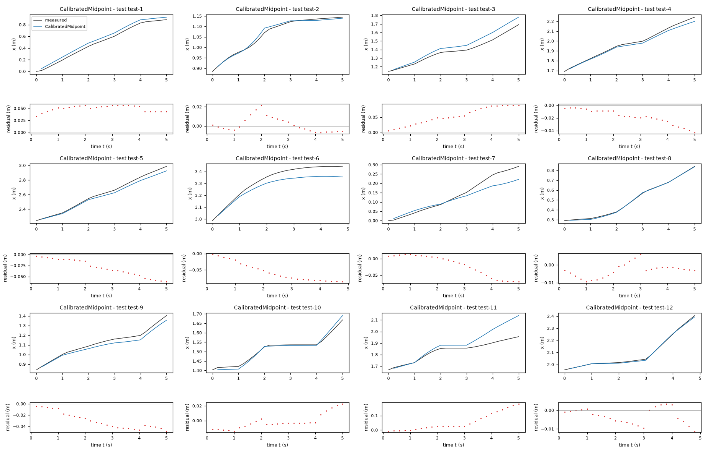
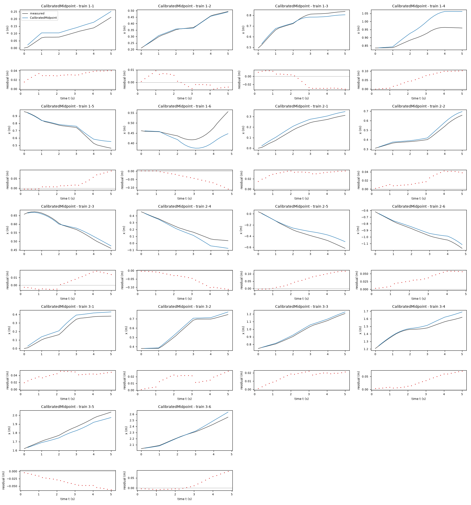
| Data | Trajectory | Scored samples | RMSE | NRMSE | R² | Failure |
|---|---|---|---|---|---|---|
| training data | 1-1 | 25 of 25 | 0.03266 | 0.6409 | 0.5892 | none |
| training data | 1-2 | 25 of 25 | 0.004655 | 0.06046 | 0.9963 | none |
| training data | 1-3 | 25 of 25 | 0.02108 | 0.2326 | 0.9459 | none |
| training data | 1-4 | 25 of 25 | 0.06757 | 1.357 | -0.8428 | none |
| training data | 1-5 | 25 of 25 | 0.04037 | 0.2706 | 0.9268 | none |
| training data | 1-6 | 24 of 24 | 0.05007 | 1.38 | -0.9044 | none |
| training data | 2-1 | 25 of 25 | 0.03129 | 0.3311 | 0.8904 | none |
| training data | 2-2 | 25 of 25 | 0.02536 | 0.2473 | 0.9388 | none |
| training data | 2-3 | 25 of 25 | 0.01038 | 0.1512 | 0.9771 | none |
| training data | 2-4 | 25 of 25 | 0.06233 | 0.4831 | 0.7666 | none |
| training data | 2-5 | 25 of 25 | 0.07106 | 0.3984 | 0.8413 | none |
| training data | 2-6 | 24 of 24 | 0.03802 | 0.2629 | 0.9309 | none |
| training data | 3-1 | 25 of 25 | 0.04253 | 0.3277 | 0.8926 | none |
| training data | 3-2 | 25 of 25 | 0.01755 | 0.1279 | 0.9836 | none |
| training data | 3-3 | 25 of 25 | 0.01698 | 0.1178 | 0.9861 | none |
| training data | 3-4 | 25 of 25 | 0.03932 | 0.3932 | 0.8454 | none |
| training data | 3-5 | 25 of 25 | 0.03952 | 0.3186 | 0.8985 | none |
| training data | 3-6 | 24 of 24 | 0.03567 | 0.2295 | 0.9473 | none |
| test data | test-1 | 25 of 25 | 0.05024 | 0.1795 | 0.9678 | none |
| test data | test-2 | 25 of 25 | 0.007828 | 0.1022 | 0.9896 | none |
| test data | test-3 | 25 of 25 | 0.05995 | 0.4098 | 0.8321 | none |
| test data | test-4 | 25 of 25 | 0.0213 | 0.1417 | 0.9799 | none |
| test data | test-5 | 25 of 25 | 0.03545 | 0.159 | 0.9747 | none |
| test data | test-6 | 24 of 24 | 0.06222 | 0.4947 | 0.7552 | none |
| test data | test-7 | 25 of 25 | 0.03701 | 0.3993 | 0.8406 | none |
| test data | test-8 | 25 of 25 | 0.004772 | 0.0265 | 0.9993 | none |
| test data | test-9 | 25 of 25 | 0.03303 | 0.2496 | 0.9377 | none |
| test data | test-10 | 25 of 25 | 0.01019 | 0.15 | 0.9775 | none |
| test data | test-11 | 25 of 25 | 0.0808 | 1.033 | -0.06742 | none |
| test data | test-12 | 24 of 24 | 0.005194 | 0.03903 | 0.9985 | none |
RMSE of x in m; NRMSE = RMSE / σ and R² = 1 − SSE / Σ(y[k] − μ)², with μ and σ the mean and the population standard deviation of the measured output on the scored samples.
Ts = 0.2 s (fixed), gf = 0.9015 (fitted), ga = 0.7526 (fitted), b = 0.2107 m (fitted), dw = 0.01464 m/s (fitted)x: 0.03749 m · test error: 0.04479 mEquations as written in the model file
x_next = x + Ts*(gf*((sign(v_f + b*v_a)*Max(Abs(v_f + b*v_a)-dw, 0)) + (sign(v_f - b*v_a)*Max(Abs(v_f - b*v_a)-dw, 0)))/2)*cos(phi + 0.5*Ts*(ga*((sign(v_f + b*v_a)*Max(Abs(v_f + b*v_a)-dw, 0)) - (sign(v_f - b*v_a)*Max(Abs(v_f - b*v_a)-dw, 0)))/(2*b)))
y_next = y + Ts*(gf*((sign(v_f + b*v_a)*Max(Abs(v_f + b*v_a)-dw, 0)) + (sign(v_f - b*v_a)*Max(Abs(v_f - b*v_a)-dw, 0)))/2)*sin(phi + 0.5*Ts*(ga*((sign(v_f + b*v_a)*Max(Abs(v_f + b*v_a)-dw, 0)) - (sign(v_f - b*v_a)*Max(Abs(v_f - b*v_a)-dw, 0)))/(2*b)))
phi_next = atan2(sin(phi + Ts*(ga*((sign(v_f + b*v_a)*Max(Abs(v_f + b*v_a)-dw, 0)) - (sign(v_f - b*v_a)*Max(Abs(v_f - b*v_a)-dw, 0)))/(2*b))), cos(phi + Ts*(ga*((sign(v_f + b*v_a)*Max(Abs(v_f + b*v_a)-dw, 0)) - (sign(v_f - b*v_a)*Max(Abs(v_f - b*v_a)-dw, 0)))/(2*b))))
Equations with the values substituted
Every parameter is replaced by its value with 4 significant digits.
Parameters and estimation
| Name | Value | Unit | Type | Description |
|---|---|---|---|---|
Ts | 0.2 | s | fixed | Sampling period s specified in TASK.md; fixed because the samples have a known time spacing. |
gf | 0.901451 | - | fitted | Gain on the mean dead-zone-corrected wheel speed command. |
ga | 0.752645 | - | fitted | Gain on the dead-zone-corrected differential wheel speed command. |
b | 0.210721 | m | fitted | Effective half-track conversion between body angular command and wheel linear command; radians treated as dimensionless. Not independently measured geometry. |
dw | 0.0146383 | m/s | fitted | Common linear wheel-command dead-zone threshold. |
- Criterion minimized
Minimize the sum of squared open-loop rollout residuals in
x(m),y(m), and heading (rad), over 25 transitions (5 s) per fitting window. The heading residual is the principal circular difference multiplied by a fixed conversion of 0.25 m/rad before squaring. This joint criterion constrains turning as well as translation, avoiding the weak angular identifiability of anx-only objective in some orientations. The conversion is an analyst-chosen balance, comparable to the distance traveled over a few seconds, not an estimated sensor-noise variance. No later logged pose corrects a rollout.- Data
data/train.csv, all three trajectories (, , and ), treated as separate experiments. Fit windows start at within-trajectory zero-based rows0, 5, ..., 120; each uses the logged initial pose and the next 25 transitions (5 s), without later state correction. Thus 75 windows use inputs through row 144 and target states through row 145. The last four samples are not direct fitting targets because no complete 25-transition window starting on their command-block grid ends there. They are included in the sliding-window validation (starts at every available row through row 124) and in full-trajectory diagnostics. Block-aligned fitting starts reflect the one-second command schedule and reduce near-duplicate starts. No transition crosses trajectory boundaries.- Method
Deterministic bounded multistart derivative-free minimization with
scipy.optimize.minimize(method="Powell"), followed by bounded nonlinear least-squares polishing withscipy.optimize.least_squares. Powell was chosen because the signed dead-zone maps produce threshold kinks where a single finite-difference least-squares start can stop prematurely. All four fitted parameters were estimated jointly in every attempt; the attempt with lowest rollout sum of squares supplies the final values. Nine starts used , , every combination of , , or m and , , or m/s. These bracket small-to-large effective mixing scales and low thresholds; m is an analyst-selected middle start, not a measured dimension. Bounds were , , m, and m/s. Powell settings were , , ; least-squares polishing used , , , , linear loss and the default trust-region reflective method with numerical Jacobian. No random numbers or seed are used. The complete attempts and validation fits are saved in wheel_results.json.- Script
refine_wheels.py
The agent's explanation
Discrete-time unicycle/differential-drive kinematics with calibrated command response. A general reference for unicycle kinematics is Siciliano, Sciavicco, Villani and Oriolo, Robotics: Modelling, Planning and Control (Springer, 2009), cited from memory without consulting the book during this round. The supplied task, rather than that reference, defines the robot and sampling period. Symmetric differential-drive wheel dead zones with separate effective forward and angular odometry calibration.
x, y, and phi are the current planar pose, v_f and v_a are the current forward and angular commands, and Ts is the fixed sampling period. gf converts commanded forward speed to effective logged forward speed, and ga calibrates angular command response. Translation adds a body-forward increment projected onto the world axes. The heading update uses to wrap the angle; wrapping does not alter either translation projection. b sets wheel-command mixing; dw removes the magnitude below threshold separately in each wheel command. The right corrected command is and the left corrected command is . Their scaled mean gives effective forward speed ; their scaled difference gives effective angular speed . This couples forward and turning response even though the two wheel dead zones are identical. The complete state-update expressions are , , and .
I first tested body-level nonlinear command maps. Small angular-command inactivity and the forward affine offset motivated a distinct wheel-level hypothesis: transform body commands into and , apply identical signed dead zones to both, then reconstruct translation and turning. The wheel mixing comes from differential-drive geometry, while the shared threshold is an unverified stiction-like hypothesis. Separate forward and angular gains allow different effective odometry calibrations. The initial single-start least-squares fit stalled near a threshold kink, so deterministic multistart refinement was used.
The fitted b is an effective mixing parameter, not a defensible estimate of the physical TurtleBot wheel separation; its held-out-fold values vary substantially. The common threshold, separate odometry gains, and switching locations are partly confounded. Wheel dynamics, asymmetry, battery effects and transient velocity are not determined. The marginal validation advantage over midpoint is too small to justify recommending its extra parameters. On all training sliding windows, x rollout RMSE is 0.028669 m; equal-trajectory pooled leave-one-trajectory-out x RMSE is 0.029800 m, computed on 25-transition (5 s) windows with one-sample start spacing. These results are diagnostics, not test scores. Only positive forward commands were observed: m/s, and angular commands satisfy rad/s (rounded extrema of data/train.csv). Reverse motion and larger commands are not validated. The logs cannot separate true actuator response from odometry distortion. Command-change residuals show lag and within-block correlation, but the allowed state has neither actuator velocity nor previous commands, so this memoryless model cannot reproduce that lag exactly. Long rollouts accumulate error; 30-second training diagnostics are not evidence of 5-second test accuracy. Validation uses only three held-out training trajectories, with overlapping windows; it is not an independent test set and gives no reliable confidence interval.
Plots of simulated and measured x, and errors per trajectory
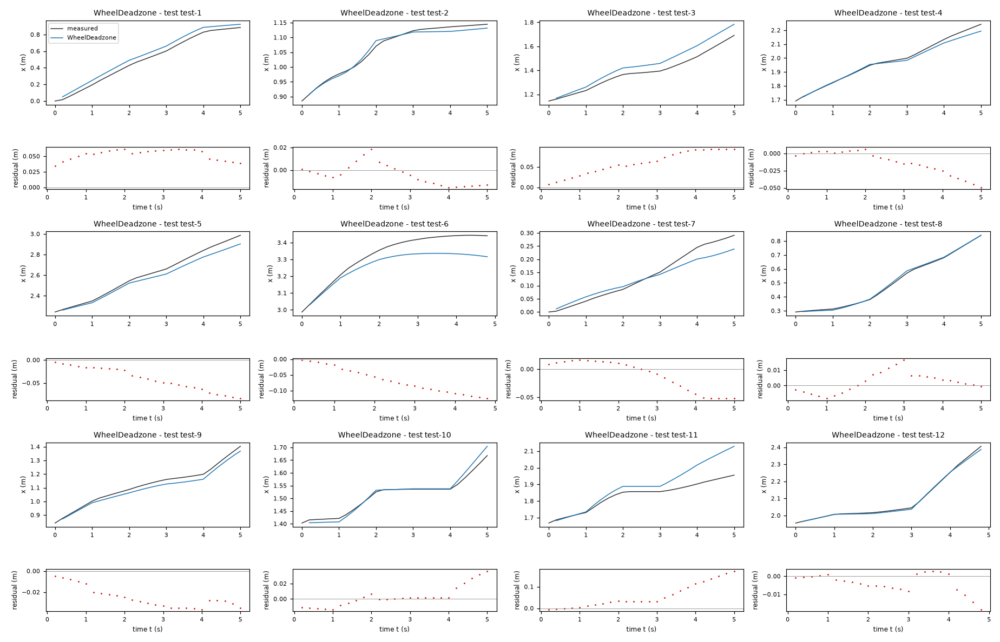
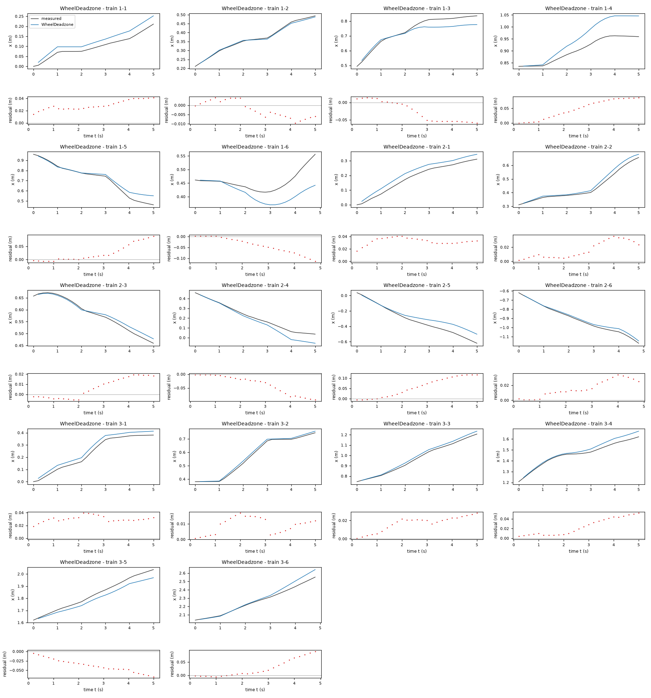
| Data | Trajectory | Scored samples | RMSE | NRMSE | R² | Failure |
|---|---|---|---|---|---|---|
| training data | 1-1 | 25 of 25 | 0.02996 | 0.5878 | 0.6545 | none |
| training data | 1-2 | 25 of 25 | 0.004912 | 0.06379 | 0.9959 | none |
| training data | 1-3 | 25 of 25 | 0.03827 | 0.4224 | 0.8216 | none |
| training data | 1-4 | 25 of 25 | 0.05716 | 1.148 | -0.3187 | none |
| training data | 1-5 | 25 of 25 | 0.03954 | 0.265 | 0.9298 | none |
| training data | 1-6 | 24 of 24 | 0.05371 | 1.48 | -1.191 | none |
| training data | 2-1 | 25 of 25 | 0.03298 | 0.3491 | 0.8781 | none |
| training data | 2-2 | 25 of 25 | 0.0197 | 0.1922 | 0.9631 | none |
| training data | 2-3 | 25 of 25 | 0.01148 | 0.1672 | 0.9721 | none |
| training data | 2-4 | 25 of 25 | 0.04899 | 0.3797 | 0.8558 | none |
| training data | 2-5 | 25 of 25 | 0.07252 | 0.4066 | 0.8347 | none |
| training data | 2-6 | 24 of 24 | 0.01927 | 0.1332 | 0.9823 | none |
| training data | 3-1 | 25 of 25 | 0.03063 | 0.236 | 0.9443 | none |
| training data | 3-2 | 25 of 25 | 0.01039 | 0.07577 | 0.9943 | none |
| training data | 3-3 | 25 of 25 | 0.0187 | 0.1297 | 0.9832 | none |
| training data | 3-4 | 25 of 25 | 0.02942 | 0.2942 | 0.9134 | none |
| training data | 3-5 | 25 of 25 | 0.04096 | 0.3302 | 0.8909 | none |
| training data | 3-6 | 24 of 24 | 0.04065 | 0.2616 | 0.9315 | none |
| test data | test-1 | 25 of 25 | 0.05329 | 0.1903 | 0.9638 | none |
| test data | test-2 | 25 of 25 | 0.01004 | 0.1311 | 0.9828 | none |
| test data | test-3 | 25 of 25 | 0.0658 | 0.4498 | 0.7977 | none |
| test data | test-4 | 25 of 25 | 0.021 | 0.1397 | 0.9805 | none |
| test data | test-5 | 25 of 25 | 0.0481 | 0.2158 | 0.9534 | none |
| test data | test-6 | 24 of 24 | 0.0778 | 0.6186 | 0.6174 | none |
| test data | test-7 | 25 of 25 | 0.02844 | 0.3068 | 0.9059 | none |
| test data | test-8 | 25 of 25 | 0.006767 | 0.03757 | 0.9986 | none |
| test data | test-9 | 25 of 25 | 0.02704 | 0.2043 | 0.9583 | none |
| test data | test-10 | 25 of 25 | 0.01361 | 0.2004 | 0.9598 | none |
| test data | test-11 | 25 of 25 | 0.07915 | 1.012 | -0.02426 | none |
| test data | test-12 | 24 of 24 | 0.006503 | 0.04886 | 0.9976 | none |
RMSE of x in m; NRMSE = RMSE / σ and R² = 1 − SSE / Σ(y[k] − μ)², with μ and σ the mean and the population standard deviation of the measured output on the scored samples.
Ts = 0.2 s (fixed), gf = 0.8919 (fitted), ga = 0.7113 (fitted), df = 0.007529 m/s (fitted), ba = 0.009857 rad/s (fitted)x: 0.03941 m · test error: 0.04216 mEquations as written in the model file
x_next = x + Ts*(gf*sign(v_f)*Max(Abs(v_f)-df, 0))*cos(phi + 0.5*Ts*(ga*v_a + ba))
y_next = y + Ts*(gf*sign(v_f)*Max(Abs(v_f)-df, 0))*sin(phi + 0.5*Ts*(ga*v_a + ba))
phi_next = atan2(sin(phi + Ts*(ga*v_a + ba)), cos(phi + Ts*(ga*v_a + ba)))
Equations with the values substituted
Every parameter is replaced by its value with 4 significant digits.
Parameters and estimation
| Name | Value | Unit | Type | Description |
|---|---|---|---|---|
Ts | 0.2 | s | fixed | Sampling period s specified in TASK.md; fixed because the samples have a known time spacing. |
gf | 0.891949 | - | fitted | Forward gain outside the forward dead zone. |
ga | 0.711323 | - | fitted | Linear angular gain. |
df | 0.00752898 | m/s | fitted | Nonnegative forward command dead-zone threshold. |
ba | 0.00985664 | rad/s | fitted | Constant effective angular drift, fitted jointly with both gains and the threshold. |
- Criterion minimized
Minimize the sum of squared open-loop rollout residuals in
x(m),y(m), and heading (rad), over 25 transitions (5 s) per fitting window. The heading residual is the principal circular difference multiplied by a fixed conversion of 0.25 m/rad before squaring. This joint criterion constrains turning as well as translation, avoiding the weak angular identifiability of anx-only objective in some orientations. The conversion is an analyst-chosen balance, comparable to the distance traveled over a few seconds, not an estimated sensor-noise variance. No later logged pose corrects a rollout.- Data
data/train.csv, all three trajectories (, , and ), treated as separate experiments. Fit windows start at within-trajectory zero-based rows0, 5, ..., 120; each uses the logged initial pose and the next 25 transitions (5 s), without later state correction. Thus 75 windows use inputs through row 144 and target states through row 145. The last four samples are not direct fitting targets because no complete 25-transition window starting on their command-block grid ends there. They are included in the sliding-window validation (starts at every available row through row 124) and in full-trajectory diagnostics. Block-aligned fitting starts reflect the one-second command schedule and reduce near-duplicate starts. No transition crosses trajectory boundaries.- Method
Bounded nonlinear least squares using
scipy.optimize.least_squares, its default trust-region reflective method, two-point finite-difference Jacobian, linear loss, , , , and . This directly optimizes the required multi-step simulation rather than differentiating noisy logged poses or minimizing only one-step increments. All final fitted parameters are estimated together in this one rollout-fitting step. The calculation is deterministic and uses no random seed. Starting values were , , m/s, and rad/s, rounded from the earlier affine rollout fit to initialize its zero-preserving replacement. Bounds were , , m/s, and rad/s. These retain positive gain and a small command threshold without forcing its presence.- Script
fit_clipped.py
The agent's explanation
Discrete-time unicycle/differential-drive kinematics with calibrated command response. A general reference for unicycle kinematics is Siciliano, Sciavicco, Villani and Oriolo, Robotics: Modelling, Planning and Control (Springer, 2009), cited from memory without consulting the book during this round. The supplied task, rather than that reference, defines the robot and sampling period. Input dead-zone nonlinearity in forward actuation and affine angular calibration.
x, y, and phi are the current planar pose, v_f and v_a are the current forward and angular commands, and Ts is the fixed sampling period. gf converts commanded forward speed to effective logged forward speed, and ga calibrates angular command response. Translation adds a body-forward increment projected onto the world axes. The heading update uses to wrap the angle; wrapping does not alter either translation projection. df suppresses translation for m/s. Outside that interval is an odd affine response. ba adds an orientation-independent increment rad per sample; it can absorb mean angular calibration error but does not imply an identified motor mechanism. The complete state-update expressions are , , and .
An affine input calibration was tested first because the one-step regressions had nonzero intercepts and the 5-second fit preferred a negative forward intercept. Its extrapolation at would predict reverse translation. I therefore replaced that forward map with , a guessed dead-zone form motivated by low-command inactivity and preserving zero translation at zero forward command. The angular bias ba is retained as an effective calibration correction, not asserted to be physical drift.
The forward threshold is an effective fit, not a separately observed hardware dead band. The constant angular bias predicts turning at zero angular command, and its leave-one-trajectory-out estimates vary. Negative-command symmetry is assumed, not measured. On all training sliding windows, x rollout RMSE is 0.029367 m; equal-trajectory pooled leave-one-trajectory-out x RMSE is 0.030555 m, computed on 25-transition (5 s) windows with one-sample start spacing. These results are diagnostics, not test scores. Only positive forward commands were observed: m/s, and angular commands satisfy rad/s (rounded extrema of data/train.csv). Reverse motion and larger commands are not validated. The logs cannot separate true actuator response from odometry distortion. Command-change residuals show lag and within-block correlation, but the allowed state has neither actuator velocity nor previous commands, so this memoryless model cannot reproduce that lag exactly. Long rollouts accumulate error; 30-second training diagnostics are not evidence of 5-second test accuracy. Validation uses only three held-out training trajectories, with overlapping windows; it is not an independent test set and gives no reliable confidence interval.
Plots of simulated and measured x, and errors per trajectory
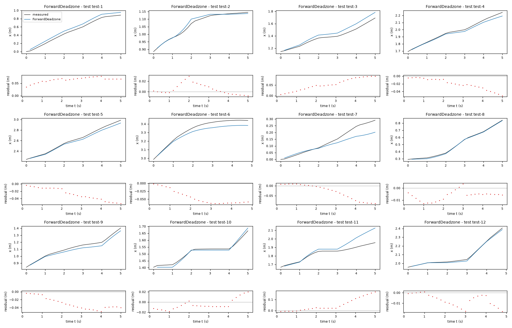
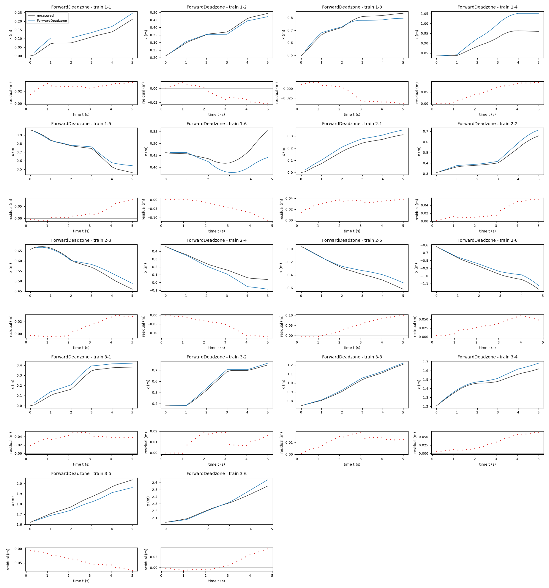
| Data | Trajectory | Scored samples | RMSE | NRMSE | R² | Failure |
|---|---|---|---|---|---|---|
| training data | 1-1 | 25 of 25 | 0.02875 | 0.5641 | 0.6818 | none |
| training data | 1-2 | 25 of 25 | 0.01231 | 0.1598 | 0.9744 | none |
| training data | 1-3 | 25 of 25 | 0.02499 | 0.2758 | 0.924 | none |
| training data | 1-4 | 25 of 25 | 0.06134 | 1.232 | -0.5184 | none |
| training data | 1-5 | 25 of 25 | 0.03568 | 0.2392 | 0.9428 | none |
| training data | 1-6 | 24 of 24 | 0.05058 | 1.394 | -0.9431 | none |
| training data | 2-1 | 25 of 25 | 0.03307 | 0.35 | 0.8775 | none |
| training data | 2-2 | 25 of 25 | 0.03079 | 0.3003 | 0.9098 | none |
| training data | 2-3 | 25 of 25 | 0.01718 | 0.2502 | 0.9374 | none |
| training data | 2-4 | 25 of 25 | 0.06954 | 0.539 | 0.7095 | none |
| training data | 2-5 | 25 of 25 | 0.05758 | 0.3228 | 0.8958 | none |
| training data | 2-6 | 24 of 24 | 0.0375 | 0.2593 | 0.9328 | none |
| training data | 3-1 | 25 of 25 | 0.03988 | 0.3073 | 0.9056 | none |
| training data | 3-2 | 25 of 25 | 0.01232 | 0.08982 | 0.9919 | none |
| training data | 3-3 | 25 of 25 | 0.01272 | 0.08821 | 0.9922 | none |
| training data | 3-4 | 25 of 25 | 0.03783 | 0.3783 | 0.8569 | none |
| training data | 3-5 | 25 of 25 | 0.0463 | 0.3733 | 0.8607 | none |
| training data | 3-6 | 24 of 24 | 0.03772 | 0.2427 | 0.9411 | none |
| test data | test-1 | 25 of 25 | 0.06518 | 0.2328 | 0.9458 | none |
| test data | test-2 | 25 of 25 | 0.01121 | 0.1464 | 0.9786 | none |
| test data | test-3 | 25 of 25 | 0.0595 | 0.4068 | 0.8345 | none |
| test data | test-4 | 25 of 25 | 0.02498 | 0.1662 | 0.9724 | none |
| test data | test-5 | 25 of 25 | 0.03205 | 0.1438 | 0.9793 | none |
| test data | test-6 | 24 of 24 | 0.04859 | 0.3864 | 0.8507 | none |
| test data | test-7 | 25 of 25 | 0.04691 | 0.5061 | 0.7439 | none |
| test data | test-8 | 25 of 25 | 0.007362 | 0.04087 | 0.9983 | none |
| test data | test-9 | 25 of 25 | 0.03289 | 0.2485 | 0.9382 | none |
| test data | test-10 | 25 of 25 | 0.01127 | 0.1659 | 0.9725 | none |
| test data | test-11 | 25 of 25 | 0.07625 | 0.9749 | 0.04948 | none |
| test data | test-12 | 24 of 24 | 0.009081 | 0.06823 | 0.9953 | none |
RMSE of x in m; NRMSE = RMSE / σ and R² = 1 − SSE / Σ(y[k] − μ)², with μ and σ the mean and the population standard deviation of the measured output on the scored samples.
Ts = 0.2 s (fixed), gf = 0.8459 (fitted), ga = 0.8017 (fitted), da = 0.06744 rad/s (fitted), ba = 0.009163 rad/s (fitted)x: 0.0399 m · test error: 0.03642 mEquations as written in the model file
x_next = x + Ts*(gf*v_f)*cos(phi + 0.5*Ts*(ga*sign(v_a)*Max(Abs(v_a)-da, 0) + ba))
y_next = y + Ts*(gf*v_f)*sin(phi + 0.5*Ts*(ga*sign(v_a)*Max(Abs(v_a)-da, 0) + ba))
phi_next = atan2(sin(phi + Ts*(ga*sign(v_a)*Max(Abs(v_a)-da, 0) + ba)), cos(phi + Ts*(ga*sign(v_a)*Max(Abs(v_a)-da, 0) + ba)))
Equations with the values substituted
Every parameter is replaced by its value with 4 significant digits.
Parameters and estimation
| Name | Value | Unit | Type | Description |
|---|---|---|---|---|
Ts | 0.2 | s | fixed | Sampling period s specified in TASK.md; fixed because the samples have a known time spacing. |
gf | 0.845858 | - | fitted | Linear forward command gain. |
ga | 0.801712 | - | fitted | Angular gain outside the angular dead zone. |
da | 0.0674439 | rad/s | fitted | Nonnegative angular dead-zone threshold. |
ba | 0.00916273 | rad/s | fitted | Additive effective angular calibration bias. |
- Criterion minimized
Minimize the sum of squared open-loop rollout residuals in
x(m),y(m), and heading (rad), over 25 transitions (5 s) per fitting window. The heading residual is the principal circular difference multiplied by a fixed conversion of 0.25 m/rad before squaring. This joint criterion constrains turning as well as translation, avoiding the weak angular identifiability of anx-only objective in some orientations. The conversion is an analyst-chosen balance, comparable to the distance traveled over a few seconds, not an estimated sensor-noise variance. No later logged pose corrects a rollout.- Data
data/train.csv, all three trajectories (, , and ), treated as separate experiments. Fit windows start at within-trajectory zero-based rows0, 5, ..., 120; each uses the logged initial pose and the next 25 transitions (5 s), without later state correction. Thus 75 windows use inputs through row 144 and target states through row 145. The last four samples are not direct fitting targets because no complete 25-transition window starting on their command-block grid ends there. They are included in the sliding-window validation (starts at every available row through row 124) and in full-trajectory diagnostics. Block-aligned fitting starts reflect the one-second command schedule and reduce near-duplicate starts. No transition crosses trajectory boundaries.- Method
Bounded nonlinear least squares using
scipy.optimize.least_squares, its default trust-region reflective method, two-point finite-difference Jacobian, linear loss, , , , and . This directly optimizes the required multi-step simulation rather than differentiating noisy logged poses or minimizing only one-step increments. All final fitted parameters are estimated together in this one rollout-fitting step. The calculation is deterministic and uses no random seed. Starting values were , , rad/s, and rad/s, rounded from preliminary steady-command linear/dead-zone fits. Bounds were , , rad/s, and rad/s. The nonnegative threshold and positive gains preserve the intended command signs apart from the separately fitted small bias.- Script
fit_models.py
The agent's explanation
Discrete-time unicycle/differential-drive kinematics with calibrated command response. A general reference for unicycle kinematics is Siciliano, Sciavicco, Villani and Oriolo, Robotics: Modelling, Planning and Control (Springer, 2009), cited from memory without consulting the book during this round. The supplied task, rather than that reference, defines the robot and sampling period. Dead-zone angular input-response model.
x, y, and phi are the current planar pose, v_f and v_a are the current forward and angular commands, and Ts is the fixed sampling period. gf converts commanded forward speed to effective logged forward speed, and ga calibrates angular command response. Translation adds a body-forward increment projected onto the world axes. The heading update uses to wrap the angle; wrapping does not alter either translation projection. da removes turning commanded below a threshold before the angular bias is added. is the calibrated signed excess angular command. ba mathematically shifts angular response equally for positive and negative commands. The complete state-update expressions are , , and .
Physical reasoning supplied the unicycle pose update. Preliminary steady-command residuals showed disproportionately small turns for small , and signed-linear, cubic and dead-zone maps were examined. The dead-zone operator was chosen as a physically interpretable way to represent low-command inactivity. It was fitted directly, not returned by symbolic regression. A constant ba allows effective angular offset because the simple affine calibration improved aggregate fit.
The dead zone helps steady angular response, but does not explain command-change lag; its held-out position error does not beat the simpler midpoint model. Its shape near zero and the interpretation of the angular bias are weakly determined. On all training sliding windows, x rollout RMSE is 0.030185 m; equal-trajectory pooled leave-one-trajectory-out x RMSE is 0.031122 m, computed on 25-transition (5 s) windows with one-sample start spacing. These results are diagnostics, not test scores. Only positive forward commands were observed: m/s, and angular commands satisfy rad/s (rounded extrema of data/train.csv). Reverse motion and larger commands are not validated. The logs cannot separate true actuator response from odometry distortion. Command-change residuals show lag and within-block correlation, but the allowed state has neither actuator velocity nor previous commands, so this memoryless model cannot reproduce that lag exactly. Long rollouts accumulate error; 30-second training diagnostics are not evidence of 5-second test accuracy. Validation uses only three held-out training trajectories, with overlapping windows; it is not an independent test set and gives no reliable confidence interval.
Plots of simulated and measured x, and errors per trajectory
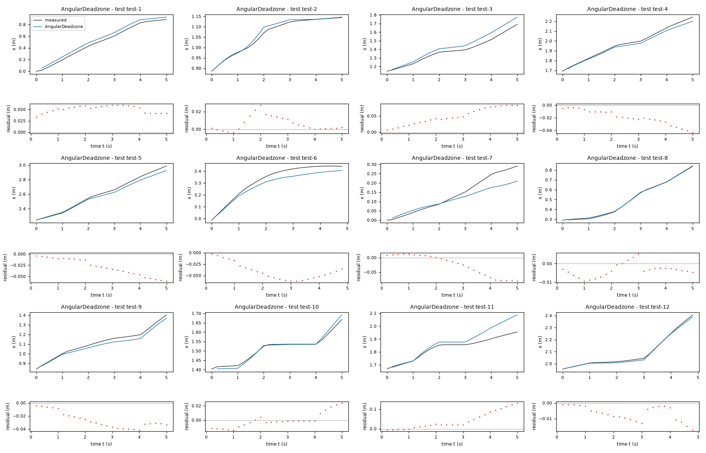
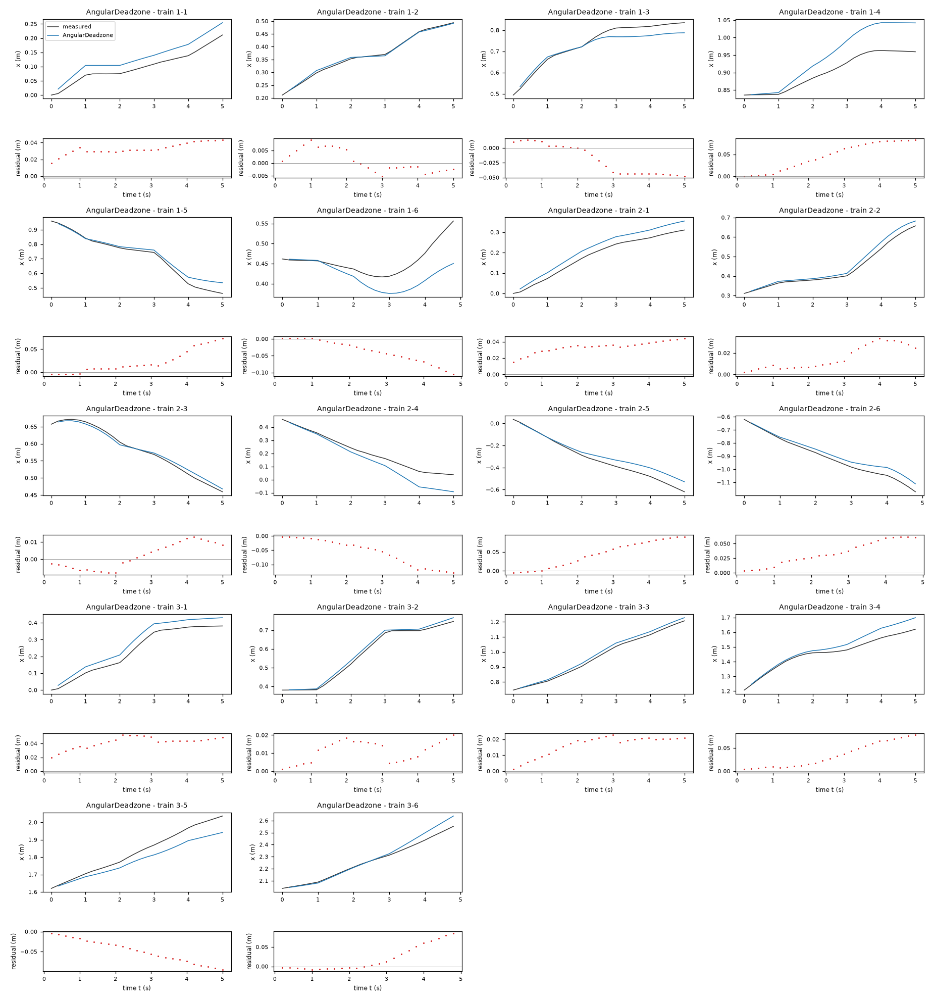
| Data | Trajectory | Scored samples | RMSE | NRMSE | R² | Failure |
|---|---|---|---|---|---|---|
| training data | 1-1 | 25 of 25 | 0.03352 | 0.6578 | 0.5673 | none |
| training data | 1-2 | 25 of 25 | 0.004389 | 0.05699 | 0.9968 | none |
| training data | 1-3 | 25 of 25 | 0.03086 | 0.3405 | 0.884 | none |
| training data | 1-4 | 25 of 25 | 0.05535 | 1.112 | -0.2363 | none |
| training data | 1-5 | 25 of 25 | 0.03312 | 0.222 | 0.9507 | none |
| training data | 1-6 | 24 of 24 | 0.04899 | 1.35 | -0.8233 | none |
| training data | 2-1 | 25 of 25 | 0.03424 | 0.3623 | 0.8687 | none |
| training data | 2-2 | 25 of 25 | 0.01911 | 0.1864 | 0.9653 | none |
| training data | 2-3 | 25 of 25 | 0.007497 | 0.1092 | 0.9881 | none |
| training data | 2-4 | 25 of 25 | 0.07241 | 0.5612 | 0.685 | none |
| training data | 2-5 | 25 of 25 | 0.05505 | 0.3086 | 0.9047 | none |
| training data | 2-6 | 24 of 24 | 0.03917 | 0.2708 | 0.9267 | none |
| training data | 3-1 | 25 of 25 | 0.04276 | 0.3295 | 0.8914 | none |
| training data | 3-2 | 25 of 25 | 0.0126 | 0.09188 | 0.9916 | none |
| training data | 3-3 | 25 of 25 | 0.01744 | 0.1209 | 0.9854 | none |
| training data | 3-4 | 25 of 25 | 0.04307 | 0.4307 | 0.8145 | none |
| training data | 3-5 | 25 of 25 | 0.05564 | 0.4486 | 0.7988 | none |
| training data | 3-6 | 24 of 24 | 0.03713 | 0.2389 | 0.9429 | none |
| test data | test-1 | 25 of 25 | 0.05141 | 0.1836 | 0.9663 | none |
| test data | test-2 | 25 of 25 | 0.01026 | 0.134 | 0.982 | none |
| test data | test-3 | 25 of 25 | 0.05464 | 0.3735 | 0.8605 | none |
| test data | test-4 | 25 of 25 | 0.02247 | 0.1495 | 0.9777 | none |
| test data | test-5 | 25 of 25 | 0.03454 | 0.1549 | 0.976 | none |
| test data | test-6 | 24 of 24 | 0.04456 | 0.3543 | 0.8745 | none |
| test data | test-7 | 25 of 25 | 0.04343 | 0.4685 | 0.7805 | none |
| test data | test-8 | 25 of 25 | 0.004939 | 0.02742 | 0.9992 | none |
| test data | test-9 | 25 of 25 | 0.02901 | 0.2192 | 0.952 | none |
| test data | test-10 | 25 of 25 | 0.01041 | 0.1532 | 0.9765 | none |
| test data | test-11 | 25 of 25 | 0.05958 | 0.7618 | 0.4196 | none |
| test data | test-12 | 24 of 24 | 0.008248 | 0.06198 | 0.9962 | none |
RMSE of x in m; NRMSE = RMSE / σ and R² = 1 − SSE / Σ(y[k] − μ)², with μ and σ the mean and the population standard deviation of the measured output on the scored samples.
Ts = 0.2 s (fixed), gf = 0.8466 (fitted), ga = 0.7228 (fitted), ba = 0.01035 rad/s (fitted), alpha = 0.08526 (fitted)x: 0.04072 m · test error: 0.04017 mEquations as written in the model file
x_next = x + Ts*(gf*v_f)*cos(phi + alpha*Ts*(ga*v_a + ba))
y_next = y + Ts*(gf*v_f)*sin(phi + alpha*Ts*(ga*v_a + ba))
phi_next = atan2(sin(phi + Ts*(ga*v_a + ba)), cos(phi + Ts*(ga*v_a + ba)))
Equations with the values substituted
Every parameter is replaced by its value with 4 significant digits.
Parameters and estimation
| Name | Value | Unit | Type | Description |
|---|---|---|---|---|
Ts | 0.2 | s | fixed | Sampling period s specified in TASK.md; fixed because the samples have a known time spacing. |
gf | 0.846616 | - | fitted | Forward command gain. |
ga | 0.722841 | - | fitted | Linear angular command gain. |
ba | 0.0103532 | rad/s | fitted | Additive angular calibration bias. |
alpha | 0.0852615 | - | fitted | Fitted direction interpolation coefficient replacing the fixed midpoint coefficient. |
- Criterion minimized
Minimize the sum of squared open-loop rollout residuals in
x(m),y(m), and heading (rad), over 25 transitions (5 s) per fitting window. The heading residual is the principal circular difference multiplied by a fixed conversion of 0.25 m/rad before squaring. This joint criterion constrains turning as well as translation, avoiding the weak angular identifiability of anx-only objective in some orientations. The conversion is an analyst-chosen balance, comparable to the distance traveled over a few seconds, not an estimated sensor-noise variance. No later logged pose corrects a rollout.- Data
data/train.csv, all three trajectories (, , and ), treated as separate experiments. Fit windows start at within-trajectory zero-based rows0, 5, ..., 120; each uses the logged initial pose and the next 25 transitions (5 s), without later state correction. Thus 75 windows use inputs through row 144 and target states through row 145. The last four samples are not direct fitting targets because no complete 25-transition window starting on their command-block grid ends there. They are included in the sliding-window validation (starts at every available row through row 124) and in full-trajectory diagnostics. Block-aligned fitting starts reflect the one-second command schedule and reduce near-duplicate starts. No transition crosses trajectory boundaries.- Method
Bounded nonlinear least squares using
scipy.optimize.least_squares, its default trust-region reflective method, two-point finite-difference Jacobian, linear loss, , , , and . This directly optimizes the required multi-step simulation rather than differentiating noisy logged poses or minimizing only one-step increments. All final fitted parameters are estimated together in this one rollout-fitting step. The calculation is deterministic and uses no random seed. Starting values were , , rad/s, and . The gains came from preliminary steady-command fits, zero bias expresses no initial drift assumption, and current-heading translation is a familiar Euler baseline. Bounds were , , rad/s, and . The wider interpolation range deliberately tests modest phase extrapolation at the known sampling interval.- Script
fit_models.py
The agent's explanation
Discrete-time unicycle/differential-drive kinematics with calibrated command response. A general reference for unicycle kinematics is Siciliano, Sciavicco, Villani and Oriolo, Robotics: Modelling, Planning and Control (Springer, 2009), cited from memory without consulting the book during this round. The supplied task, rather than that reference, defines the robot and sampling period. Generalized theta-method direction interpolation; a memoryless phase correction of an affine-angular unicycle.
x, y, and phi are the current planar pose, v_f and v_a are the current forward and angular commands, and Ts is the fixed sampling period. gf converts commanded forward speed to effective logged forward speed, and ga calibrates angular command response. Translation adds a body-forward increment projected onto the world axes. The heading update uses to wrap the angle; wrapping does not alter either translation projection. alpha shifts the direction used for translation: is current heading and is midpoint heading. It changes only the direction, not the magnitude of translation or the heading increment. ba is an effective constant angular calibration correction. A fitted early direction can compensate some aggregated lag error without representing its missing internal dynamics. The complete state-update expressions are , , and .
The large transition-phase residuals motivated checking a limited phase correction rather than inventing state-location terms. I replaced the fixed 0.5 interpolation coefficient with alpha in . This guessed correction lets the translation use an earlier or later effective direction. The heading still integrates the current command; no previous-command state or true delay was added. The one-step geometric estimate was close to midpoint, but multi-step fitting preferred an earlier direction, illustrating the different criteria.
A fitted direction shift is not an identified actuator delay and cannot retain the previous command at a switch. It can be confounded with angular gain and bias; its held-out error is slightly worse than fixed midpoint. It is a phenomenological effective pose model. On all training sliding windows, x rollout RMSE is 0.029872 m; equal-trajectory pooled leave-one-trajectory-out x RMSE is 0.030953 m, computed on 25-transition (5 s) windows with one-sample start spacing. These results are diagnostics, not test scores. Only positive forward commands were observed: m/s, and angular commands satisfy rad/s (rounded extrema of data/train.csv). Reverse motion and larger commands are not validated. The logs cannot separate true actuator response from odometry distortion. Command-change residuals show lag and within-block correlation, but the allowed state has neither actuator velocity nor previous commands, so this memoryless model cannot reproduce that lag exactly. Long rollouts accumulate error; 30-second training diagnostics are not evidence of 5-second test accuracy. Validation uses only three held-out training trajectories, with overlapping windows; it is not an independent test set and gives no reliable confidence interval.
Plots of simulated and measured x, and errors per trajectory
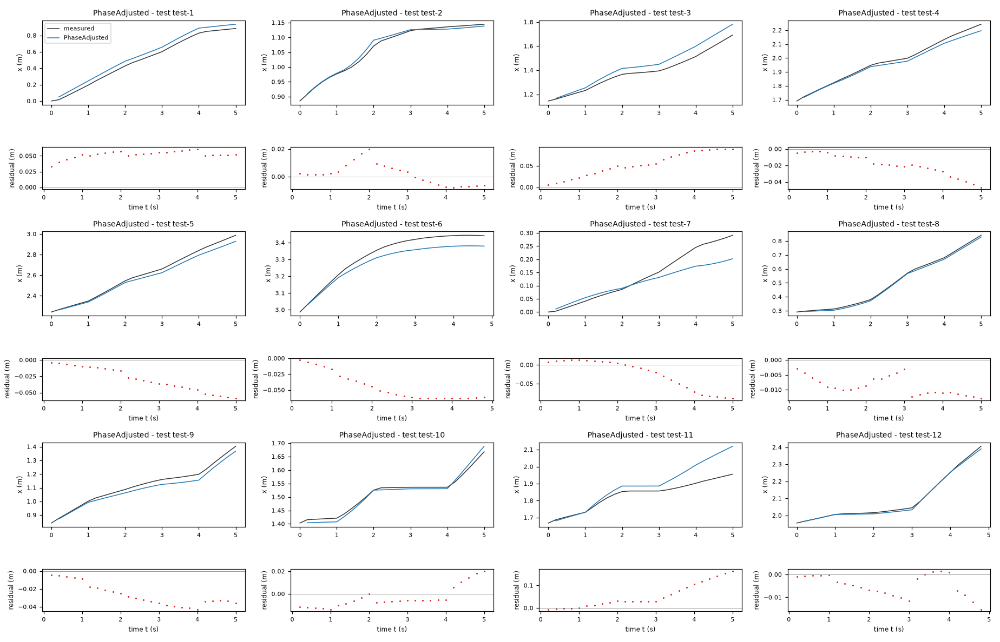
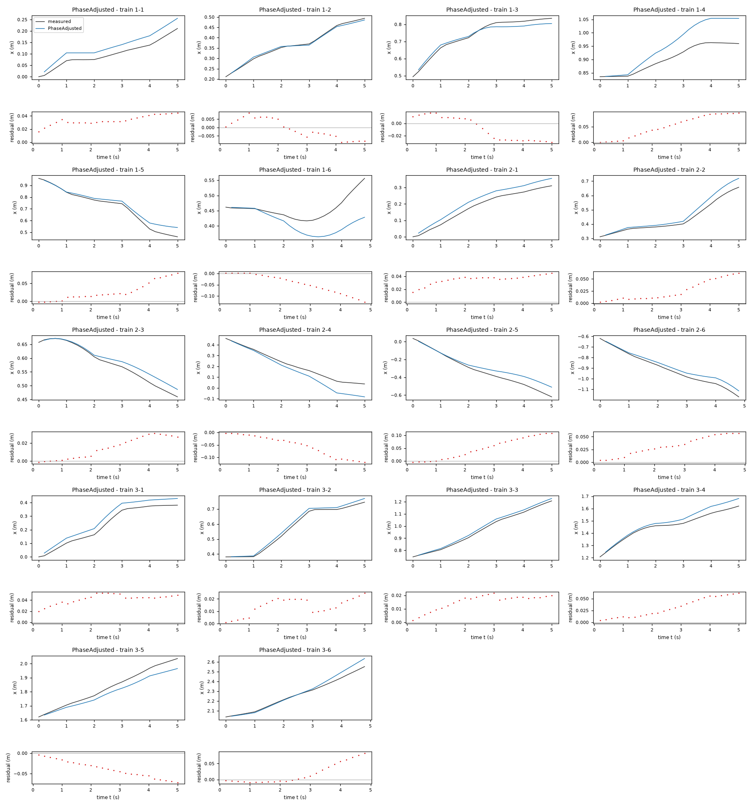
| Data | Trajectory | Scored samples | RMSE | NRMSE | R² | Failure |
|---|---|---|---|---|---|---|
| training data | 1-1 | 25 of 25 | 0.03417 | 0.6704 | 0.5506 | none |
| training data | 1-2 | 25 of 25 | 0.005653 | 0.07342 | 0.9946 | none |
| training data | 1-3 | 25 of 25 | 0.02021 | 0.2231 | 0.9502 | none |
| training data | 1-4 | 25 of 25 | 0.06169 | 1.239 | -0.5358 | none |
| training data | 1-5 | 25 of 25 | 0.03714 | 0.2489 | 0.938 | none |
| training data | 1-6 | 24 of 24 | 0.06065 | 1.672 | -1.794 | none |
| training data | 2-1 | 25 of 25 | 0.03596 | 0.3806 | 0.8552 | none |
| training data | 2-2 | 25 of 25 | 0.03234 | 0.3154 | 0.9005 | none |
| training data | 2-3 | 25 of 25 | 0.01872 | 0.2727 | 0.9256 | none |
| training data | 2-4 | 25 of 25 | 0.0673 | 0.5216 | 0.7279 | none |
| training data | 2-5 | 25 of 25 | 0.06302 | 0.3534 | 0.8751 | none |
| training data | 2-6 | 24 of 24 | 0.03664 | 0.2533 | 0.9358 | none |
| training data | 3-1 | 25 of 25 | 0.04313 | 0.3323 | 0.8895 | none |
| training data | 3-2 | 25 of 25 | 0.01567 | 0.1142 | 0.987 | none |
| training data | 3-3 | 25 of 25 | 0.01622 | 0.1125 | 0.9873 | none |
| training data | 3-4 | 25 of 25 | 0.03687 | 0.3687 | 0.864 | none |
| training data | 3-5 | 25 of 25 | 0.04359 | 0.3514 | 0.8765 | none |
| training data | 3-6 | 24 of 24 | 0.03565 | 0.2294 | 0.9474 | none |
| test data | test-1 | 25 of 25 | 0.05237 | 0.1871 | 0.965 | none |
| test data | test-2 | 25 of 25 | 0.007764 | 0.1014 | 0.9897 | none |
| test data | test-3 | 25 of 25 | 0.05996 | 0.4099 | 0.832 | none |
| test data | test-4 | 25 of 25 | 0.02287 | 0.1522 | 0.9768 | none |
| test data | test-5 | 25 of 25 | 0.03474 | 0.1558 | 0.9757 | none |
| test data | test-6 | 24 of 24 | 0.04958 | 0.3942 | 0.8446 | none |
| test data | test-7 | 25 of 25 | 0.04546 | 0.4904 | 0.7595 | none |
| test data | test-8 | 25 of 25 | 0.009269 | 0.05146 | 0.9974 | none |
| test data | test-9 | 25 of 25 | 0.02945 | 0.2225 | 0.9505 | none |
| test data | test-10 | 25 of 25 | 0.00998 | 0.1469 | 0.9784 | none |
| test data | test-11 | 25 of 25 | 0.07475 | 0.9558 | 0.08642 | none |
| test data | test-12 | 24 of 24 | 0.006717 | 0.05047 | 0.9975 | none |
RMSE of x in m; NRMSE = RMSE / σ and R² = 1 − SSE / Σ(y[k] − μ)², with μ and σ the mean and the population standard deviation of the measured output on the scored samples.
Ts = 0.2 s (fixed), gf = 0.8955 (fitted), ga = 0.6813 (fitted), gc = -0.06007 s^2/rad^2 (fitted), gv = 0.4077 s/m (fitted), ba = 0.007495 rad/s (fitted), df = 0.008012 m/s (fitted)x: 0.03894 m · test error: 0.04286 mEquations as written in the model file
x_next = x + Ts*(gf*sign(v_f)*Max(Abs(v_f)-df, 0))*cos(phi + 0.5*Ts*(ga*v_a + gc*v_a**3 + gv*v_f*v_a + ba))
y_next = y + Ts*(gf*sign(v_f)*Max(Abs(v_f)-df, 0))*sin(phi + 0.5*Ts*(ga*v_a + gc*v_a**3 + gv*v_f*v_a + ba))
phi_next = atan2(sin(phi + Ts*(ga*v_a + gc*v_a**3 + gv*v_f*v_a + ba)), cos(phi + Ts*(ga*v_a + gc*v_a**3 + gv*v_f*v_a + ba)))
Equations with the values substituted
Every parameter is replaced by its value with 4 significant digits.
Parameters and estimation
| Name | Value | Unit | Type | Description |
|---|---|---|---|---|
Ts | 0.2 | s | fixed | Sampling period s specified in TASK.md; fixed because the samples have a known time spacing. |
gf | 0.895518 | - | fitted | Forward gain outside the forward dead zone. |
ga | 0.681268 | - | fitted | Linear angular-command coefficient. |
gc | -0.0600744 | s^2/rad^2 | fitted | Cubic angular-command coefficient; radians are explicit in this coefficient unit. |
gv | 0.407675 | s/m | fitted | Coefficient of forward-command-dependent angular gain. |
ba | 0.00749493 | rad/s | fitted | Constant angular calibration offset. |
df | 0.00801155 | m/s | fitted | Forward dead-zone threshold replacing the negative affine forward intercept. |
- Criterion minimized
Minimize the sum of squared open-loop rollout residuals in
x(m),y(m), and heading (rad), over 25 transitions (5 s) per fitting window. The heading residual is the principal circular difference multiplied by a fixed conversion of 0.25 m/rad before squaring. This joint criterion constrains turning as well as translation, avoiding the weak angular identifiability of anx-only objective in some orientations. The conversion is an analyst-chosen balance, comparable to the distance traveled over a few seconds, not an estimated sensor-noise variance. No later logged pose corrects a rollout.- Data
data/train.csv, all three trajectories (, , and ), treated as separate experiments. Fit windows start at within-trajectory zero-based rows0, 5, ..., 120; each uses the logged initial pose and the next 25 transitions (5 s), without later state correction. Thus 75 windows use inputs through row 144 and target states through row 145. The last four samples are not direct fitting targets because no complete 25-transition window starting on their command-block grid ends there. They are included in the sliding-window validation (starts at every available row through row 124) and in full-trajectory diagnostics. Block-aligned fitting starts reflect the one-second command schedule and reduce near-duplicate starts. No transition crosses trajectory boundaries.- Method
Structure selection first used
sklearn.linear_model.LassoLarsIC(criterion="bic")on 87 complete command blocks fromdata/train.csv: 29 blocks per trajectory with three steady-phase transitions per block. Each library column was divided by its training standard deviation. Least-angle Lasso with BIC needs no parameter starting values and was chosen as a small-library sparse baseline; it is not genetic-programming symbolic regression. Preliminary selection is reproduced byresidual_analysis.py. All six final fitted parameters were then estimated together with bounded nonlinear rollout least squares usingscipy.optimize.least_squares(default trust-region reflective method, numerical Jacobian, linear loss, , , , ). Final starting values were , , s^2/rad^2, s/m, rad/s, and m/s, rounded from the earlier sparse-support affine rollout fit infit_extensions.py; none of its coefficients were held fixed. Bounds were , , s^2/rad^2, s/m, rad/s, and m/s, allowing either sign of nonlinear correction while retaining positive baseline gains. No stochastic search or random seed is used.- Script
fit_clipped.py
The agent's explanation
Discrete-time unicycle/differential-drive kinematics with calibrated command response. A general reference for unicycle kinematics is Siciliano, Sciavicco, Villani and Oriolo, Robotics: Modelling, Planning and Control (Springer, 2009), cited from memory without consulting the book during this round. The supplied task, rather than that reference, defines the robot and sampling period. Sparse polynomial input-response map with a zero-preserving forward dead zone. Structure discovery uses sparse regression; final coefficients use rollout least squares. The sparse-regression approach is related to SINDy: Brunton, Proctor and Kutz, Discovering governing equations from data by sparse identification of nonlinear dynamical systems, PNAS (2016), cited from memory, not fetched; this implementation uses a command-response library rather than a state-derivative SINDy fit.
x, y, and phi are the current planar pose, v_f and v_a are the current forward and angular commands, and Ts is the fixed sampling period. gf converts commanded forward speed to effective logged forward speed, and ga calibrates angular command response. Translation adds a body-forward increment projected onto the world axes. The heading update uses to wrap the angle; wrapping does not alter either translation projection. changes angular gain with squared angular-command magnitude. changes angular gain linearly with forward command. These are empirical mathematical corrections, not separately identified mechanical forces. ba shifts the angular map, while df suppresses very small forward commands. The final negative cubic coefficient contrasts with the preliminary steady-block coefficient, showing that rollout fitting also absorbs missing transient effects. The complete state-update expressions are , , and .
The physical pose update was retained. I formed effective forward and angular velocities from measured increments, using measured midpoint heading for body projection, then averaged phases 2 through 4 within each complete command block to reduce switch-lag contamination and avoid treating correlated samples as independent. A standardized candidate library contained v_f, v_a, , , , , , and , with an intercept. BIC-selected sparse regression retained only v_f for forward response and v_a, , and for angular response, plus intercepts. After an affine forward refit gave a negative intercept, I replaced it by a signed forward dead zone to preserve zero motion at zero forward command, then refitted all final coefficients. No spatial terms were searched or included.
The additional angular terms reduce training criterion but do not improve held-out position error; the speed-coupling coefficient varies considerably between folds. Cubic extrapolation can reverse angular response at sufficiently large commands, so this candidate is restricted to the observed range. The sparse-selected support is a hypothesis, not evidence that a unique nonlinear law has been recovered. On all training sliding windows, x rollout RMSE is 0.029538 m; equal-trajectory pooled leave-one-trajectory-out x RMSE is 0.031524 m, computed on 25-transition (5 s) windows with one-sample start spacing. These results are diagnostics, not test scores. Only positive forward commands were observed: m/s, and angular commands satisfy rad/s (rounded extrema of data/train.csv). Reverse motion and larger commands are not validated. The logs cannot separate true actuator response from odometry distortion. Command-change residuals show lag and within-block correlation, but the allowed state has neither actuator velocity nor previous commands, so this memoryless model cannot reproduce that lag exactly. Long rollouts accumulate error; 30-second training diagnostics are not evidence of 5-second test accuracy. Validation uses only three held-out training trajectories, with overlapping windows; it is not an independent test set and gives no reliable confidence interval.
Plots of simulated and measured x, and errors per trajectory
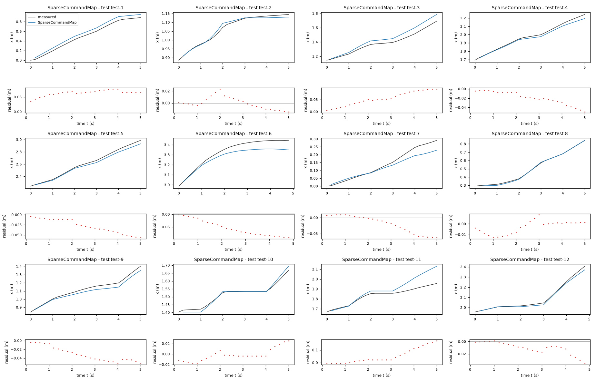
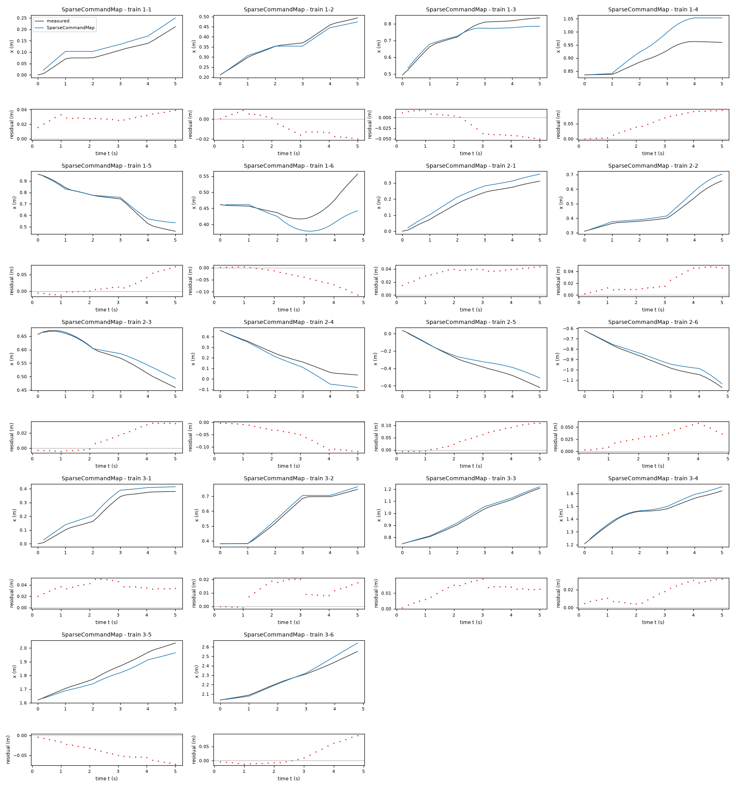
| Data | Trajectory | Scored samples | RMSE | NRMSE | R² | Failure |
|---|---|---|---|---|---|---|
| training data | 1-1 | 25 of 25 | 0.02962 | 0.5812 | 0.6622 | none |
| training data | 1-2 | 25 of 25 | 0.01159 | 0.1505 | 0.9773 | none |
| training data | 1-3 | 25 of 25 | 0.03012 | 0.3324 | 0.8895 | none |
| training data | 1-4 | 25 of 25 | 0.06222 | 1.25 | -0.5626 | none |
| training data | 1-5 | 25 of 25 | 0.03178 | 0.213 | 0.9546 | none |
| training data | 1-6 | 24 of 24 | 0.04996 | 1.377 | -0.8959 | none |
| training data | 2-1 | 25 of 25 | 0.03619 | 0.383 | 0.8533 | none |
| training data | 2-2 | 25 of 25 | 0.02786 | 0.2717 | 0.9262 | none |
| training data | 2-3 | 25 of 25 | 0.01956 | 0.2849 | 0.9188 | none |
| training data | 2-4 | 25 of 25 | 0.06744 | 0.5227 | 0.7267 | none |
| training data | 2-5 | 25 of 25 | 0.06427 | 0.3604 | 0.8701 | none |
| training data | 2-6 | 24 of 24 | 0.03533 | 0.2443 | 0.9403 | none |
| training data | 3-1 | 25 of 25 | 0.03792 | 0.2922 | 0.9146 | none |
| training data | 3-2 | 25 of 25 | 0.01311 | 0.09559 | 0.9909 | none |
| training data | 3-3 | 25 of 25 | 0.0127 | 0.08809 | 0.9922 | none |
| training data | 3-4 | 25 of 25 | 0.0193 | 0.193 | 0.9627 | none |
| training data | 3-5 | 25 of 25 | 0.0448 | 0.3612 | 0.8696 | none |
| training data | 3-6 | 24 of 24 | 0.03841 | 0.2472 | 0.9389 | none |
| test data | test-1 | 25 of 25 | 0.06444 | 0.2302 | 0.947 | none |
| test data | test-2 | 25 of 25 | 0.009997 | 0.1305 | 0.983 | none |
| test data | test-3 | 25 of 25 | 0.06072 | 0.4151 | 0.8277 | none |
| test data | test-4 | 25 of 25 | 0.02392 | 0.1591 | 0.9747 | none |
| test data | test-5 | 25 of 25 | 0.03286 | 0.1474 | 0.9783 | none |
| test data | test-6 | 24 of 24 | 0.06195 | 0.4926 | 0.7573 | none |
| test data | test-7 | 25 of 25 | 0.03297 | 0.3556 | 0.8735 | none |
| test data | test-8 | 25 of 25 | 0.006546 | 0.03634 | 0.9987 | none |
| test data | test-9 | 25 of 25 | 0.03521 | 0.2661 | 0.9292 | none |
| test data | test-10 | 25 of 25 | 0.01175 | 0.173 | 0.9701 | none |
| test data | test-11 | 25 of 25 | 0.07691 | 0.9834 | 0.03283 | none |
| test data | test-12 | 24 of 24 | 0.01423 | 0.1069 | 0.9886 | none |
RMSE of x in m; NRMSE = RMSE / σ and R² = 1 − SSE / Σ(y[k] − μ)², with μ and σ the mean and the population standard deviation of the measured output on the scored samples.
2 Course of the run
The system prompt, TASK.md and FORMAT.md that the agent received are shown on the page of the experiment.
0:00Harness: opening message to the agent
10:15Read TASK.md0.01
5,474 input and 19 output tokens; 0.011 USD for this turn.
TASK.md
output as sent to the agent (3,738 characters, 37 lines)
[TASK.md: 3711 characters] # Task: Motion model of a TurtleBot 2 mobile robot ## 1 System and intended use A TurtleBot 2 differential-drive mobile robot moves on a flat floor. Its on-board odometry logs the pose of the robot: the position x, y and the heading phi. The robot receives two commands, the forward velocity v_f and the angular velocity v_a. Each pair of commands is held for 5 samples (1 s) and is then replaced by a new random pair. The logged pose is known to carry a considerable measurement error. The model will be used to simulate the x position of the robot over about 5 s from one logged pose and the sequence of commands, without correction by later pose measurements. ## 2 Data `data/train.csv` holds 450 samples: 3 trajectories of 150 consecutive samples; the column `trajectory` holds the trajectory number. Row k+1 of a trajectory is the sample that follows row k; different trajectories are separate experiments. The sampling period is T_s = 0.2 s. | Column | Role | Unit | Training range | Description | |---|---|---|---|---| | `x` | state, scored output | m | not declared | position | | `y` | state | m | not declared | position | | `phi` | state | rad | not declared | heading, wrapped to (-pi, pi]; phi = 0 points along the x axis | | `v_f` | input | m/s | not declared | forward velocity command | | `v_a` | input | rad/s | not declared | angular velocity command | ## 3 What you deliver A candidate is a discrete-time model of 3 closed-form expressions, `x_next`, `y_next` and `phi_next`: the states `x`, `y` and `phi` at sample k+1 as functions of `x`, `y`, `phi`, `v_f` and `v_a` at sample k. `FORMAT.md` states how an expression is written and what it may contain. Write one file per candidate, `models/<label>.json`; `FORMAT.md` describes the file and gives an example. Write also `models/pool.json`, which lists the labels of your candidates in the order in which they are to be evaluated. You can recommend one candidate that you consider the best-performing. `models/pool.json` then names that candidate and gives your reason. Run `python check_submission.py` to check your files: it prints every error with its location, so that you can correct it. At most 10 candidates are evaluated, in the order of `models/pool.json`. Consider various identification approaches, for example physically motivated structures, symbolic-regression search or sparse regression; before fitting, list the approaches and the model families you will try. Build the pool from structurally different model families, not from variations of one form. Examine the residuals of your best candidates and try structures that can represent what they show. Include only candidates you would defend as a model of the system. ## 4 Evaluation The harness, the software that runs this task, evaluates every candidate on test data that you cannot access. For each test trajectory it starts from the first logged state and applies the expressions repeatedly with the logged inputs; a simulated state is never replaced by a later measurement. The score is the root mean squared error (RMSE) between simulated and logged `x`, in m, over all test samples after the first of each trajectory. An evaluation fails when a value is not finite, when `x` leaves [-100, 100] m or `y` leaves [-100, 100] m or `phi` leaves [-1000, 1000] rad, or when it takes longer than 60 s. ## 5 Limits and completion One round: 60 turns, 3600 s of execution time, 10 USD; a turn is one response of yours. When the files pass the check, send the exact message DONE. If the harness's check of the files then fails, you receive its report and may correct the files once. If a limit ends the round earlier, the complete candidate files are evaluated.
20:17Read FORMAT.md; listed the files0.02
6,380 input and 47 output tokens; 0.013 USD for this turn.
FORMAT.md
output as sent to the agent (8,159 characters, 128 lines)
[FORMAT.md: 8130 characters]
# Model file format
This file is the same for every task. `TASK.md` names the expression keys, the variables and the permitted functions of your task.
## Candidate file `models/<label>.json`
Write one JSON file per candidate. The label is the file name: a letter, then up to 31 letters, digits, `_` or `-`. The file has these fields and no others:
- `expressions`: one expression text per expression key named in `TASK.md`.
- `parameters`: one row per parameter. A parameter is a constant of the expressions that you name yourself, for example `a1`. Its row has
- `name`: the name used in the expressions: a letter, then letters, digits or `_`; it differs from every column, expression key, constant and function name;
- `value`: the numerical value;
- `unit`: the unit; `-` for a dimensionless quantity;
- `type`: `fitted` (estimated from data), `fixed` (chosen or known, not estimated) or `tied` (computed from other parameters by `equation`);
- `description`: what the parameter represents; for a fixed value, where the value comes from and why it was chosen; for a value taken over from another candidate or an earlier fit, from which one;
- `equation`: for a tied parameter only: its defining equation over other parameters, given constants and numbers.
- `estimation`: how the values of the fitted parameters of this candidate were obtained and why in this way; for every fitted parameter it must be clear how its value was found. Write the record for this candidate model, not for the run as a whole: its own criterion, data, method and starting values, with the reasons that apply to this candidate. The record has
- `criterion`: what was minimized, on which variable, and why this criterion;
- `data`: the files, trajectories or rows used, and the reason when some were left out;
- `method`: how the values were estimated: the estimation method by its established name and the software function, and why this method and not another; the starting values as numbers, or the statement that the method needs none, and why these starting values; whether all fitted parameters were estimated together in one step and, if not, which parameters were estimated in which step, with which criterion, and why; the seeds where they apply;
- `script`: the file in the working directory that reproduces the values.
- `discussion`: four texts, in this order:
- `family`: the model family by its established name, with a reference where you know one;
- `interpretation`: what each term represents in the system; describe a term without a known physical meaning by its mathematical effect;
- `origin`: how you arrived at the structure of this expression, as distinct from its parameter values, which `estimation` covers: say which of its terms, variables and operators came from physical reasoning, which from a search and which from a guess, what you tried before, and what made you change it;
- `limitations`: what the data do not determine and where the model is not expected to hold.
- `answers`: only when `TASK.md` asks questions about the candidates: one text per question identifier.
- `predecessor`: only in a later round of an interactive session, and optional: the label of the candidate of the previous pool that this candidate revises.
## Expressions
An expression is a text in Python syntax. It may contain:
- the variables that `TASK.md` names as the arguments of the expression;
- your parameters, each with a row in `parameters`;
- the constants `pi` and `E`, the given constants that `TASK.md` lists, and numbers;
- these operators and functions, unless `TASK.md` states another list: `+` `-` `*` `/` `**` `sin` `cos` `tan` `asin` `acos` `atan` `atan2` `sinh` `cosh` `tanh` `exp` `log` `sqrt` `Abs` `sign` `Min` `Max` `Piecewise`.
`**` is the power (not `^`), and `log` is the natural logarithm. `Piecewise` takes pairs `(value, condition)` and ends with a pair `(value, True)`, for example `Piecewise((a1*q, (q > 0) & (q < 1)), (0, True))`. A condition is a comparison `<`, `<=`, `>`, `>=`, `Eq(a, b)` or `Ne(a, b)`, each in parentheses, combined with `&`, `|` and `~`.
A number that fixes the form of the expression, such as 2 in `q**2`, may be written directly. A value obtained by estimation is a parameter with a row in `parameters`, never a number written into the expression. Every parameter row must be used in an expression or in a tie equation.
## Pool file `models/pool.json`
- `order`: the candidate labels in your order;
- `recommended`: the label of the candidate you recommend, or `null` when you recommend none;
- `reason`: why you recommend this candidate, or why you recommend none.
Every file `models/<label>.json` must be listed in `order`.
## Example
An invented task with one input `q` and one output `z`, whose expression key is `z`. The example shows the format only: its model is not a proposal, and its discussion texts say what your texts must contain.
`models/M01.json`:
```json
{
"expressions": {
"z": "a1*q + b1*q**2/n0"
},
"parameters": [
{
"name": "a1",
"value": 0.5,
"unit": "-",
"type": "fitted",
"description": "coefficient of `q`"
},
{
"name": "n0",
"value": 2.0,
"unit": "-",
"type": "fixed",
"description": "normalisation of the quadratic term; chosen as the largest value of `q` in the training data, so that `b1` has the scale of `a1`"
},
{
"name": "b1",
"value": 1.0,
"unit": "-",
"type": "tied",
"equation": "2*a1",
"description": "coefficient of `q**2/n0`, tied to `a1` by the assumption stated in the discussion"
}
],
"estimation": {
"criterion": "sum of squared differences between the expression `z` and the column `z`, because the expression gives `z` directly and no row is known to be more accurate than another",
"data": "data/train.csv, all rows",
"method": "The value of `a1` was estimated by ordinary least squares with numpy.linalg.lstsq. With `b1 = 2*a1` the expression is linear in the one fitted parameter `a1`, so the least-squares solution is obtained directly and an iterative method is not needed; for the same reason the method needs no starting values. `a1` is the only fitted parameter and was estimated in one step. The method uses no random numbers, so that no seed applies.",
"script": "fit_M01.py"
},
"discussion": {
"family": "State the model family by its established name.",
"interpretation": "State what each term represents.",
"origin": "State how you arrived at this expression.",
"limitations": "State what the data do not determine and where the model is not expected to hold."
}
}
```
`models/pool.json`:
```json
{
"order": [
"M01"
],
"recommended": "M01",
"reason": "State why you recommend this candidate, or why you recommend none."
}
```
## Checking
`python check_submission.py` checks every file against these rules and evaluates each expression on the training data. It names each error with its rule. Correct the errors and run it again.
## Writing
- Define every symbol at first use.
- Give every number with its unit and the data it was computed on.
- Name methods by their established names.
- Cite a reference for a model family or a method where one applies. Cite only references you are certain exist, and say when you cite from memory without having checked the source.
- Say what is estimated, what is assumed and what is unknown.
- Give a brief reason for every choice you made: a structure, a criterion, a method, a starting value, a fixed value, a term you removed.
- Write every expression inside a text between backticks, in the syntax of the expressions, for example `a1*q**2`; write it out, do not describe it in words. This holds also for a single parameter, column or expression name, such as `a1`, for a value given to one, such as `a1 = 0.5`, and for a range, such as `0 <= a1 <= 2`. A unit follows outside the backticks; a dimensionless value has no unit and no hyphen after it.
- Describe a term without a known physical meaning by its mathematical effect; do not invent a meaning.
{}output as sent to the agent (162 characters, 8 lines)
[.: 7 entries] data/ models/ FORMAT.md 8130 bytes TASK.md 3711 bytes check_config.json 1092 bytes check_submission.py 102476 bytes data/train.csv 41638 bytes
30:27Wrote inspect_data.py0.05
8,521 input and 506 output tokens (of which 53 reasoning); 0.022 USD for this turn.
reasoning summary (written by the model provider's summarizer; the model's own reasoning is not available)
Exploring modeling strategies
I need to list my approaches before moving forward with fitting the models. I should explore the data first, then decide on the methods. It seems like there's enough budget with about 28k tokens remaining from an initial allocation of 30k? I think we should aim to use 6 to 8 diverse models since the noise can be considerable. So, I need to inspect everything carefully before making any decisions.
Before fitting, I will compare these model families:
- Differential-drive kinematics with Euler and midpoint integration.
- Exact constant-command arc motion with calibrated forward and angular gains.
- Affine command calibration, allowing velocity offsets.
- Nonlinear command-response models, including saturation or polynomial terms.
- A sparse residual correction to the physical model, if the residuals support it.
I will compare one-step residuals, roughly 5-second rollouts, and held-out trajectories. The rollout comparisons will guide selection because the intended simulation receives no later pose corrections.
inspect_data.py
file content written (836 characters)
import pandas as pd, numpy as np
D=pd.read_csv('data/train.csv')
print(D.head(12).to_string(index=False)); print(D.describe().to_string())
for tid,g in D.groupby('trajectory'):
print('\nTRAJECTORY',tid,'n',len(g)); print('initial final',g.iloc[[0,-1]].to_string(index=False))
p=np.unwrap(g.phi.to_numpy()); dx=np.diff(g.x);dy=np.diff(g.y);dp=np.diff(p)
print('diff stats',np.quantile(dx,[0,.1,.5,.9,1]),np.quantile(dy,[0,.1,.5,.9,1]),np.quantile(dp,[0,.1,.5,.9,1]))
print('commands by block',g.iloc[::5][['v_f','v_a']].to_numpy())
print('OLS dp commands',np.linalg.lstsq(np.c_[g.v_a.to_numpy()[:-1]*.2,np.ones(len(dp))*.2],dp,rcond=None)[0])
print('sum dp',sum(dp),'sum input',sum(g.v_a.to_numpy()[:-1]*.2))
np.savez('data/arrays.npz',**{f't{int(t)}':g[['x','y','phi','v_f','v_a']].to_numpy() for t,g in D.groupby('trajectory')})
output as sent to the agent (40 characters, 1 lines)
Wrote 836 characters to inspect_data.py.
40:29Ran python inspect_data.py0.06
9,048 input and 21 output tokens; 0.018 USD for this turn.
$ python inspect_data.py
output as sent to the agent (6,125 characters, 137 lines)
[exit status 0]
x y phi v_f v_a trajectory
0.000000 0.000000e+00 0.000000 0.125107 0.440649 1
0.005459 9.527218e-07 0.000873 0.125107 0.440649 1
0.021009 5.872100e-04 0.074176 0.125107 0.440649 1
0.037398 2.114565e-03 0.121999 0.125107 0.440649 1
0.053633 4.545831e-03 0.181340 0.125107 0.440649 1
0.070117 8.006235e-03 0.238237 0.000034 -0.395335 1
0.074461 9.090811e-03 0.272969 0.000034 -0.395335 1
0.074668 9.140287e-03 0.245568 0.000034 -0.395335 1
0.074503 9.098961e-03 0.229336 0.000034 -0.395335 1
0.074711 9.144851e-03 0.213628 0.000034 -0.395335 1
0.075170 9.241458e-03 0.198618 0.044027 -0.815323 1
0.081468 1.035475e-02 0.132820 0.044027 -0.815323 1
x y phi v_f v_a trajectory
count 450.000000 450.000000 450.000000 450.000000 450.000000 450.000000
mean 0.597943 0.247624 0.574768 0.131573 -0.046526 2.000000
std 0.722761 0.734857 1.433265 0.081420 0.544761 0.817405
min -1.171246 -1.105007 -3.108955 0.000034 -0.948148 1.000000
25% 0.207955 -0.110837 -0.270613 0.063488 -0.468907 1.000000
50% 0.481111 0.066833 0.565923 0.125475 -0.047990 2.000000
75% 0.864662 0.872722 1.503427 0.186340 0.399517 3.000000
max 2.552151 1.623603 3.141593 0.298156 0.941161 3.000000
TRAJECTORY 1 n 150
initial final x y phi v_f v_a trajectory
0.000000 0.000000 0.000000 0.125107 0.440649 1
0.556177 1.577726 0.887325 0.176792 0.399517 1
diff stats [-0.04557048 -0.01158091 0.00561608 0.01837175 0.03653409] [-0.01114717 -0.00233856 0.00548252 0.03527796 0.04558413] [-0.14084807 -0.10196213 0.00541052 0.09299114 0.13229596]
commands by block [[ 1.25106601e-01 4.40648987e-01]
[ 3.43124452e-05 -3.95334855e-01]
[ 4.40267672e-02 -8.15322810e-01]
[ 5.58780634e-02 -3.08878546e-01]
[ 1.19030242e-01 7.76334680e-02]
[ 1.25758354e-01 3.70439001e-01]
[ 6.13356749e-02 7.56234873e-01]
[ 8.21627796e-03 3.40935020e-01]
[ 1.25191441e-01 1.17379657e-01]
[ 4.21160816e-02 -6.03797022e-01]
[ 2.40223371e-01 9.36523151e-01]
[ 9.40272534e-02 3.84645231e-01]
[ 2.62916746e-01 7.89213327e-01]
[ 2.55132634e-02 -9.21890434e-01]
[ 5.09491259e-02 7.56285007e-01]
[ 2.95040501e-02 -1.57784750e-01]
[ 2.87366859e-01 6.63305699e-02]
[ 2.07563134e-01 -3.68968738e-01]
[ 2.05950278e-01 6.69251344e-01]
[ 5.48648320e-03 5.00288630e-01]
[ 2.96658327e-01 4.96331309e-01]
[ 8.41331976e-02 5.78558657e-01]
[ 3.09678020e-02 -1.04212948e-01]
[ 2.72578651e-01 -4.12771703e-01]
[ 8.63326016e-02 -7.39942856e-01]
[ 5.81008736e-03 3.57671066e-01]
[ 6.34884348e-02 -4.68906681e-01]
[ 1.47471948e-01 -8.93274910e-01]
[ 1.72235282e-01 -7.06542850e-01]
[ 1.76791661e-01 3.99516720e-01]]
OLS dp commands [0.54999863 0.01020578]
sum dp 0.887325391713917 sum input 1.0603535712364147
TRAJECTORY 2 n 150
initial final x y phi v_f v_a trajectory
0.000000 0.000000 0.000000 0.130798 -0.948148 2
-1.171246 0.065716 2.542421 0.298156 0.941161 2
diff stats [-0.03811771 -0.02895537 -0.01131619 0.01766053 0.03213864] [-0.03920531 -0.02677254 -0.00334541 0.03130618 0.03873176] [-0.14835299 -0.11962487 -0.01727876 0.08314749 0.15498524]
commands by block [[ 1.30798471e-01 -9.48147536e-01]
[ 1.64898743e-01 -1.29355215e-01]
[ 1.26110341e-01 -3.39330358e-01]
[ 6.13945902e-02 2.38541933e-01]
[ 8.98964021e-02 -4.66345450e-01]
[ 1.86340150e-01 5.82841886e-02]
[ 4.03739836e-02 2.71562425e-02]
[ 5.53319597e-02 5.70670296e-01]
[ 2.56192588e-01 -1.15263252e-02]
[ 2.53968446e-01 -8.40709046e-01]
[ 1.51573827e-01 -8.69426991e-01]
[ 1.28436698e-01 -8.06938169e-01]
[ 3.81479915e-02 1.93490618e-01]
[ 6.78036002e-02 -7.86108631e-01]
[ 6.60918621e-02 -3.00347430e-01]
[ 1.40336245e-01 -5.96513547e-01]
[ 1.92122018e-01 -3.38603289e-02]
[ 1.51571016e-01 -2.26214698e-01]
[ 2.38091236e-01 1.60008358e-01]
[ 4.86895796e-02 4.01504693e-01]
[ 2.89365324e-01 1.67223404e-05]
[ 2.66856019e-01 -3.16772695e-01]
[ 1.70143238e-01 -1.44908073e-01]
[ 1.31024179e-01 5.53118370e-01]
[ 1.60681252e-01 9.07484454e-01]
[ 1.63262448e-01 -8.35810155e-01]
[ 1.09902721e-01 7.01701008e-01]
[ 1.21882513e-01 -9.45595268e-01]
[ 7.41531717e-02 -8.65711259e-01]
[ 2.98155603e-01 9.41160627e-01]]
OLS dp commands [ 0.5966731 -0.02744403]
sum dp -3.740764185799448 sum input -4.898715791787802
TRAJECTORY 3 n 150
initial final x y phi v_f v_a trajectory
0.000000 0.000000 0.000000 0.165239 0.416296 3
2.552151 1.299376 -0.643852 0.207328 0.378361 3
diff stats [0. 0.00257844 0.01679351 0.02996862 0.04052351] [-0.02768664 -0.00638008 0.00579744 0.03105279 0.04699689] [-0.16074482 -0.08754572 -0.00191986 0.09826204 0.14730579]
commands by block [[ 0.16523937 0.41629565]
[ 0.08727142 0.02165521]
[ 0.26788409 0.79258618]
[ 0.03767559 -0.58551424]
[ 0.01544016 -0.11838031]
[ 0.00896286 -0.08633355]
[ 0.19474321 -0.44302543]
[ 0.20287647 0.18172563]
[ 0.00719456 0.11770818]
[ 0.07777573 -0.16979761]
[ 0.08505752 0.38627584]
[ 0.13213612 -0.68626452]
[ 0.16339471 0.56062953]
[ 0.09190906 -0.55608423]
[ 0.11639138 0.8727673 ]
[ 0.29279863 0.34476735]
[ 0.27085023 0.69150174]
[ 0.11339821 -0.81556598]
[ 0.19602327 0.11568152]
[ 0.10846943 -0.54989099]
[ 0.12195597 -0.0621195 ]
[ 0.08077067 -0.41641445]
[ 0.13730592 0.72106783]
[ 0.17587587 -0.43302428]
[ 0.08339325 -0.09075585]
[ 0.0616231 -0.59724258]
[ 0.15421052 -0.82554126]
[ 0.14507566 -0.27564758]
[ 0.21230599 0.49349245]
[ 0.20732788 0.37836083]]
OLS dp commands [ 0.57970974 -0.00812928]
sum dp -0.643851961060708 sum input -0.6927593069214204
50:35Started a helper agent (Independently diagnose data/train.csv structure and residuals, especi…)0.09
12,142 input and 152 output tokens (of which 54 reasoning); 0.026 USD for this turn.
reasoning summary (written by the model provider's summarizer; the model's own reasoning is not available)
Evaluating physical heading and noise
I'm considering how deterministic odometry affects delays with a gain of 0.7 and significant acceleration. I wonder if a physical heading derived from coordinates could be nearly perfect at an average heading without noise. I think I need to inspect the block's stable gain and how the heading depends on velocity and noise. Also, I want to explore how independent agent data can help diagnose the structure. That sounds complex but worth analyzing!
{
"task": "Independently diagnose data/train.csv structure and residuals, especially command response nonlinearities/delay and geometric relation between position increments and heading. Do not write candidate files. You may write/run diagnostic code with helper_ prefix. Read TASK.md FORMAT.md. Return defensible structural proposals and quantitative findings; no test access. Main agent will fit physics families and rollout validation.",
"max_turns": 10
}output as sent to the agent (120 characters, 2 lines)
Helper helper-1 stopped because the turn limit of the helper-1 was reached (10 turns, 0.3095 USD). Its last text: (none)
0:35Harness: helper agent helper-1 started
turtlebot
0:37Helper agent helper-1: read TASK.md, FORMAT.md0.10
5,003 input and 50 output tokens; 0.011 USD for this turn.
TASK.md
output as sent to the agent (3,738 characters, 37 lines)
[TASK.md: 3711 characters] # Task: Motion model of a TurtleBot 2 mobile robot ## 1 System and intended use A TurtleBot 2 differential-drive mobile robot moves on a flat floor. Its on-board odometry logs the pose of the robot: the position x, y and the heading phi. The robot receives two commands, the forward velocity v_f and the angular velocity v_a. Each pair of commands is held for 5 samples (1 s) and is then replaced by a new random pair. The logged pose is known to carry a considerable measurement error. The model will be used to simulate the x position of the robot over about 5 s from one logged pose and the sequence of commands, without correction by later pose measurements. ## 2 Data `data/train.csv` holds 450 samples: 3 trajectories of 150 consecutive samples; the column `trajectory` holds the trajectory number. Row k+1 of a trajectory is the sample that follows row k; different trajectories are separate experiments. The sampling period is T_s = 0.2 s. | Column | Role | Unit | Training range | Description | |---|---|---|---|---| | `x` | state, scored output | m | not declared | position | | `y` | state | m | not declared | position | | `phi` | state | rad | not declared | heading, wrapped to (-pi, pi]; phi = 0 points along the x axis | | `v_f` | input | m/s | not declared | forward velocity command | | `v_a` | input | rad/s | not declared | angular velocity command | ## 3 What you deliver A candidate is a discrete-time model of 3 closed-form expressions, `x_next`, `y_next` and `phi_next`: the states `x`, `y` and `phi` at sample k+1 as functions of `x`, `y`, `phi`, `v_f` and `v_a` at sample k. `FORMAT.md` states how an expression is written and what it may contain. Write one file per candidate, `models/<label>.json`; `FORMAT.md` describes the file and gives an example. Write also `models/pool.json`, which lists the labels of your candidates in the order in which they are to be evaluated. You can recommend one candidate that you consider the best-performing. `models/pool.json` then names that candidate and gives your reason. Run `python check_submission.py` to check your files: it prints every error with its location, so that you can correct it. At most 10 candidates are evaluated, in the order of `models/pool.json`. Consider various identification approaches, for example physically motivated structures, symbolic-regression search or sparse regression; before fitting, list the approaches and the model families you will try. Build the pool from structurally different model families, not from variations of one form. Examine the residuals of your best candidates and try structures that can represent what they show. Include only candidates you would defend as a model of the system. ## 4 Evaluation The harness, the software that runs this task, evaluates every candidate on test data that you cannot access. For each test trajectory it starts from the first logged state and applies the expressions repeatedly with the logged inputs; a simulated state is never replaced by a later measurement. The score is the root mean squared error (RMSE) between simulated and logged `x`, in m, over all test samples after the first of each trajectory. An evaluation fails when a value is not finite, when `x` leaves [-100, 100] m or `y` leaves [-100, 100] m or `phi` leaves [-1000, 1000] rad, or when it takes longer than 60 s. ## 5 Limits and completion One round: 60 turns, 3600 s of execution time, 10 USD; a turn is one response of yours. When the files pass the check, send the exact message DONE. If the harness's check of the files then fails, you receive its report and may correct the files once. If a limit ends the round earlier, the complete candidate files are evaluated.
FORMAT.md
output as sent to the agent (8,159 characters, 128 lines)
[FORMAT.md: 8130 characters]
# Model file format
This file is the same for every task. `TASK.md` names the expression keys, the variables and the permitted functions of your task.
## Candidate file `models/<label>.json`
Write one JSON file per candidate. The label is the file name: a letter, then up to 31 letters, digits, `_` or `-`. The file has these fields and no others:
- `expressions`: one expression text per expression key named in `TASK.md`.
- `parameters`: one row per parameter. A parameter is a constant of the expressions that you name yourself, for example `a1`. Its row has
- `name`: the name used in the expressions: a letter, then letters, digits or `_`; it differs from every column, expression key, constant and function name;
- `value`: the numerical value;
- `unit`: the unit; `-` for a dimensionless quantity;
- `type`: `fitted` (estimated from data), `fixed` (chosen or known, not estimated) or `tied` (computed from other parameters by `equation`);
- `description`: what the parameter represents; for a fixed value, where the value comes from and why it was chosen; for a value taken over from another candidate or an earlier fit, from which one;
- `equation`: for a tied parameter only: its defining equation over other parameters, given constants and numbers.
- `estimation`: how the values of the fitted parameters of this candidate were obtained and why in this way; for every fitted parameter it must be clear how its value was found. Write the record for this candidate model, not for the run as a whole: its own criterion, data, method and starting values, with the reasons that apply to this candidate. The record has
- `criterion`: what was minimized, on which variable, and why this criterion;
- `data`: the files, trajectories or rows used, and the reason when some were left out;
- `method`: how the values were estimated: the estimation method by its established name and the software function, and why this method and not another; the starting values as numbers, or the statement that the method needs none, and why these starting values; whether all fitted parameters were estimated together in one step and, if not, which parameters were estimated in which step, with which criterion, and why; the seeds where they apply;
- `script`: the file in the working directory that reproduces the values.
- `discussion`: four texts, in this order:
- `family`: the model family by its established name, with a reference where you know one;
- `interpretation`: what each term represents in the system; describe a term without a known physical meaning by its mathematical effect;
- `origin`: how you arrived at the structure of this expression, as distinct from its parameter values, which `estimation` covers: say which of its terms, variables and operators came from physical reasoning, which from a search and which from a guess, what you tried before, and what made you change it;
- `limitations`: what the data do not determine and where the model is not expected to hold.
- `answers`: only when `TASK.md` asks questions about the candidates: one text per question identifier.
- `predecessor`: only in a later round of an interactive session, and optional: the label of the candidate of the previous pool that this candidate revises.
## Expressions
An expression is a text in Python syntax. It may contain:
- the variables that `TASK.md` names as the arguments of the expression;
- your parameters, each with a row in `parameters`;
- the constants `pi` and `E`, the given constants that `TASK.md` lists, and numbers;
- these operators and functions, unless `TASK.md` states another list: `+` `-` `*` `/` `**` `sin` `cos` `tan` `asin` `acos` `atan` `atan2` `sinh` `cosh` `tanh` `exp` `log` `sqrt` `Abs` `sign` `Min` `Max` `Piecewise`.
`**` is the power (not `^`), and `log` is the natural logarithm. `Piecewise` takes pairs `(value, condition)` and ends with a pair `(value, True)`, for example `Piecewise((a1*q, (q > 0) & (q < 1)), (0, True))`. A condition is a comparison `<`, `<=`, `>`, `>=`, `Eq(a, b)` or `Ne(a, b)`, each in parentheses, combined with `&`, `|` and `~`.
A number that fixes the form of the expression, such as 2 in `q**2`, may be written directly. A value obtained by estimation is a parameter with a row in `parameters`, never a number written into the expression. Every parameter row must be used in an expression or in a tie equation.
## Pool file `models/pool.json`
- `order`: the candidate labels in your order;
- `recommended`: the label of the candidate you recommend, or `null` when you recommend none;
- `reason`: why you recommend this candidate, or why you recommend none.
Every file `models/<label>.json` must be listed in `order`.
## Example
An invented task with one input `q` and one output `z`, whose expression key is `z`. The example shows the format only: its model is not a proposal, and its discussion texts say what your texts must contain.
`models/M01.json`:
```json
{
"expressions": {
"z": "a1*q + b1*q**2/n0"
},
"parameters": [
{
"name": "a1",
"value": 0.5,
"unit": "-",
"type": "fitted",
"description": "coefficient of `q`"
},
{
"name": "n0",
"value": 2.0,
"unit": "-",
"type": "fixed",
"description": "normalisation of the quadratic term; chosen as the largest value of `q` in the training data, so that `b1` has the scale of `a1`"
},
{
"name": "b1",
"value": 1.0,
"unit": "-",
"type": "tied",
"equation": "2*a1",
"description": "coefficient of `q**2/n0`, tied to `a1` by the assumption stated in the discussion"
}
],
"estimation": {
"criterion": "sum of squared differences between the expression `z` and the column `z`, because the expression gives `z` directly and no row is known to be more accurate than another",
"data": "data/train.csv, all rows",
"method": "The value of `a1` was estimated by ordinary least squares with numpy.linalg.lstsq. With `b1 = 2*a1` the expression is linear in the one fitted parameter `a1`, so the least-squares solution is obtained directly and an iterative method is not needed; for the same reason the method needs no starting values. `a1` is the only fitted parameter and was estimated in one step. The method uses no random numbers, so that no seed applies.",
"script": "fit_M01.py"
},
"discussion": {
"family": "State the model family by its established name.",
"interpretation": "State what each term represents.",
"origin": "State how you arrived at this expression.",
"limitations": "State what the data do not determine and where the model is not expected to hold."
}
}
```
`models/pool.json`:
```json
{
"order": [
"M01"
],
"recommended": "M01",
"reason": "State why you recommend this candidate, or why you recommend none."
}
```
## Checking
`python check_submission.py` checks every file against these rules and evaluates each expression on the training data. It names each error with its rule. Correct the errors and run it again.
## Writing
- Define every symbol at first use.
- Give every number with its unit and the data it was computed on.
- Name methods by their established names.
- Cite a reference for a model family or a method where one applies. Cite only references you are certain exist, and say when you cite from memory without having checked the source.
- Say what is estimated, what is assumed and what is unknown.
- Give a brief reason for every choice you made: a structure, a criterion, a method, a starting value, a fixed value, a term you removed.
- Write every expression inside a text between backticks, in the syntax of the expressions, for example `a1*q**2`; write it out, do not describe it in words. This holds also for a single parameter, column or expression name, such as `a1`, for a value given to one, such as `a1 = 0.5`, and for a range, such as `0 <= a1 <= 2`. A unit follows outside the backticks; a dimensionless value has no unit and no hyphen after it.
- Describe a term without a known physical meaning by its mathematical effect; do not invent a meaning.
0:40Helper agent helper-1: ran python -c "import pandas as pd; d=pd.read_csv('data/train.csv'); print(d.head(12).to_stri…0.12
7,971 input and 60 output tokens; 0.017 USD for this turn.
$ python -c "import pandas as pd; d=pd.read_csv('data/train.csv'); print(d.head(12).to_string()); print(d.describe().to_string()); print(d.groupby('trajectory').size())"output as sent to the agent (1,692 characters, 28 lines)
[exit status 0]
x y phi v_f v_a trajectory
0 0.000000 0.000000e+00 0.000000 0.125107 0.440649 1
1 0.005459 9.527218e-07 0.000873 0.125107 0.440649 1
2 0.021009 5.872100e-04 0.074176 0.125107 0.440649 1
3 0.037398 2.114565e-03 0.121999 0.125107 0.440649 1
4 0.053633 4.545831e-03 0.181340 0.125107 0.440649 1
5 0.070117 8.006235e-03 0.238237 0.000034 -0.395335 1
6 0.074461 9.090811e-03 0.272969 0.000034 -0.395335 1
7 0.074668 9.140287e-03 0.245568 0.000034 -0.395335 1
8 0.074503 9.098961e-03 0.229336 0.000034 -0.395335 1
9 0.074711 9.144851e-03 0.213628 0.000034 -0.395335 1
10 0.075170 9.241458e-03 0.198618 0.044027 -0.815323 1
11 0.081468 1.035475e-02 0.132820 0.044027 -0.815323 1
x y phi v_f v_a trajectory
count 450.000000 450.000000 450.000000 450.000000 450.000000 450.000000
mean 0.597943 0.247624 0.574768 0.131573 -0.046526 2.000000
std 0.722761 0.734857 1.433265 0.081420 0.544761 0.817405
min -1.171246 -1.105007 -3.108955 0.000034 -0.948148 1.000000
25% 0.207955 -0.110837 -0.270613 0.063488 -0.468907 1.000000
50% 0.481111 0.066833 0.565923 0.125475 -0.047990 2.000000
75% 0.864662 0.872722 1.503427 0.186340 0.399517 3.000000
max 2.552151 1.623603 3.141593 0.298156 0.941161 3.000000
trajectory
1 150
2 150
3 150
dtype: int64
1:05Helper agent helper-1: wrote helper_diagnostics.py0.15
8,856 input and 1,356 output tokens (of which 105 reasoning); 0.031 USD for this turn.
reasoning summary (written by the model provider's summarizer; the model's own reasoning is not available)
Analyzing systematic errors
I’m working on diagnosing smooth systematic errors, especially concerning the first transition where phi seems negligible. I'll fit a per-step projection and check for any variations. Comparing previous command stages will be essential, especially in identifying regression dynamics. I need scripts that quickly command comprehensive OLS for offset gains, focusing on nonlinear aspects. There may be simulated biases due to measurement errors, so I’ll inspect the geometry and compute chord orientations to ensure everything aligns properly. Finally, I’ll implement a JSON summary.
helper_diagnostics.py
file content written (3,244 characters)
import numpy as np,pandas as pd,json
from scipy.optimize import least_squares
D=pd.read_csv('data/train.csv'); dt=0.2
rows=[]
for tr,g in D.groupby('trajectory'):
g=g.reset_index(drop=True); p=np.unwrap(g.phi.values); dx=np.diff(g.x);dy=np.diff(g.y);dp=np.diff(p); phi=p[:-1]
h=phi+dp/2
f=(dx*np.cos(h)+dy*np.sin(h))/dt; lat=(-dx*np.sin(h)+dy*np.cos(h))/dt
for k in range(len(g)-1):
rows.append(dict(tr=tr,k=k,phase=k%5,u=g.v_f[k],w=g.v_a[k],up=g.v_f[max(k-1,0)],wp=g.v_a[max(k-1,0)],f=f[k],lat=lat[k],r=dp[k]/dt,dp=dp[k],phi=phi[k],dx=dx[k],dy=dy[k],h=h[k]))
a=pd.DataFrame(rows)
def fit(cols,target,mask=None):
z=a if mask is None else a[mask]; X=np.array([np.ones(len(z))]+[np.asarray(c(z)) for c in cols]).T;y=z[target].values;b=np.linalg.lstsq(X,y,rcond=None)[0];r=y-X@b;return b,np.sqrt(np.mean(r*r)),r
families={'f linear':[lambda z:z.u], 'f quad':[lambda z:z.u,lambda z:z.u**2], 'f angular':[lambda z:z.u,lambda z:z.u*z.w**2], 'f delay':[lambda z:z.u,lambda z:z.up], 'r linear':[lambda z:z.w], 'r quadratic':[lambda z:z.w,lambda z:z.w*abs(z.w)], 'r cubic':[lambda z:z.w,lambda z:z.w**3], 'r speed':[lambda z:z.w,lambda z:z.w*z.u], 'r delay':[lambda z:z.w,lambda z:z.wp]}
print('ALL TRANSITIONS',len(a))
for name,cols in families.items():
tar=name[0];b,rmse,r=fit(cols,tar);print(name,'coef',b,'RMSE',rmse,'lag1 corr',pd.Series(r).autocorr());
for phase in range(5):
ix=a.phase==phase; print(' phase',phase,'mean residual',r[ix].mean(),'rmse',np.sqrt(np.mean(r[ix]**2)))
print('\nSTEADY PHASE>=2')
for name,cols in families.items():
if 'delay' not in name:
print(name,fit(cols,name[0],a.phase>=2)[:2])
print('\nGEOMETRY')
for alpha in [0,0.25,0.5,0.75,1]:
h=a.phi+alpha*a.dp;la=(-a.dx*np.sin(h)+a.dy*np.cos(h));print('alpha',alpha,'lateral displacement rms',np.sqrt(np.mean(la**2)),'max',abs(la).max())
res=least_squares(lambda q: -a.dx*np.sin(a.phi+q[0]*a.dp+q[1])+a.dy*np.cos(a.phi+q[0]*a.dp+q[1]),[0.5,0]);print('best alpha offset',res.x,'lateral rms',np.sqrt(np.mean(res.fun**2)))
for tr in [1,2,3]:
z=a[a.tr==tr];res=least_squares(lambda q: -z.dx*np.sin(z.phi+q[0]*z.dp+q[1])+z.dy*np.cos(z.phi+q[0]*z.dp+q[1]),[0.5,0]);print('tr',tr,'geometry',res.x,np.sqrt(np.mean(res.fun**2)))
print('lat velocity rms',np.sqrt(np.mean(a.lat**2)),'f min max',a.f.min(),a.f.max())
print('\nPHASE ESTIMATES: intercept, current, previous')
for phase in range(5):
print('phase',phase,'f',fit([lambda z:z.u,lambda z:z.up],'f',a.phase==phase)[:2],'r',fit([lambda z:z.w,lambda z:z.wp],'r',a.phase==phase)[:2])
print('\nBY TRAJECTORY')
for tr in [1,2,3]:
for tar,col in [('f',lambda z:z.u),('r',lambda z:z.w)]:print(tr,tar,fit([col],tar,a.tr==tr)[:2])
# multistep means block displacement vs commands, omit initial transient step and average phases 2-4
s=a[a.phase>=2].groupby(['tr',a.k//5]).mean(numeric_only=True).reset_index();print('\nBLOCK MEANS steady n',len(s))
for tar in ['f','r']:
cols=np.c_[np.ones(len(s)),s.u if tar=='f' else s.w];b=np.linalg.lstsq(cols,s[tar],rcond=None)[0];r=s[tar]-cols@b;print(tar,'coef',b,'rmse',np.sqrt(np.mean(r*r)))
print('\nEXTREMES'); print(a.sort_values('f').head(7).to_string(index=False));print(a.sort_values('f').tail(7).to_string(index=False))
a.to_csv('helper_transitions.csv',index=False)
output as sent to the agent (47 characters, 1 lines)
Wrote 3244 characters to helper_diagnostics.py.
1:07Helper agent helper-1: ran python helper_diagnostics.py > helper_diagnostics.txt && type helper_diagnostics.txt (exit status 1)0.17
10,235 input and 33 output tokens; 0.021 USD for this turn.
$ python helper_diagnostics.py > helper_diagnostics.txt && type helper_diagnostics.txt
output as sent to the agent (760 characters, 11 lines)
[exit status 1]
[stderr]
Traceback (most recent call last):
File "C:\Users\user1\AppData\Local\Temp\aspire-runs\0306f483b2669cd9\workspace\helper_diagnostics.py", line 38, in <module>
s=a[a.phase>=2].groupby(['tr',a.k//5]).mean(numeric_only=True).reset_index();print('\nBLOCK MEANS steady n',len(s))
^^^^^^^^^^^^^^^^^^^^^^^^^^^^^^^^^^^^^^^^^^^^^^^^^^^^^^^^^^^^^^^^^^^^^^^^^^
File "C:\Users\user1\AppData\Local\aspire\agent-env\Lib\site-packages\pandas\core\frame.py", line 7338, in reset_index
new_obj.insert(
File "C:\Users\user1\AppData\Local\aspire\agent-env\Lib\site-packages\pandas\core\frame.py", line 5635, in insert
raise ValueError(f"cannot insert {column}, already exists")
ValueError: cannot insert k, already exists
1:12Helper agent helper-1: ran python -c "p='helper_diagnostics.py';s=open(p).read().replace(\"groupby(['tr',a.k//5])\",…0.19
10,513 input and 96 output tokens; 0.022 USD for this turn.
$ python -c "p='helper_diagnostics.py';s=open(p).read().replace(\"groupby(['tr',a.k//5])\",\"groupby(['tr',(a.k//5).rename('block')])\");open(p,'w').write(s)" && python helper_diagnostics.py > helper_diagnostics.txt && type helper_diagnostics.txtoutput as sent to the agent (9,351 characters, 114 lines)
[exit status 0] ALL TRANSITIONS 447 f linear coef [0.005563 0.7985589] RMSE 0.017327375072186568 lag1 corr 0.40615098625321655 phase 0 mean residual 0.006499671607968666 rmse 0.0326847597709561 phase 1 mean residual -0.0023109671263034743 rmse 0.010779086935192271 phase 2 mean residual -0.0017007277326238392 rmse 0.010279313205263972 phase 3 mean residual -0.0015209320159086227 rmse 0.010270162089178962 phase 4 mean residual -0.0010003911032406515 rmse 0.009942539629773131 f quad coef [ 0.004271 0.82445649 -0.08847447] RMSE 0.01731655429238326 lag1 corr 0.40386087679188754 phase 0 mean residual 0.006501094245982777 rmse 0.03263993918520123 phase 1 mean residual -0.0023095444882893653 rmse 0.010818902517205768 phase 2 mean residual -0.00169930509460973 rmse 0.010271013199854332 phase 3 mean residual -0.001519509377894514 rmse 0.010274364200884057 phase 4 mean residual -0.0010062778812308464 rmse 0.00995763132124395 f angular coef [ 0.00558119 0.80238768 -0.0126873 ] RMSE 0.017317768326823246 lag1 corr 0.40495271596404575 phase 0 mean residual 0.0065028237565854085 rmse 0.0326770109893249 phase 1 mean residual -0.0023078149776867324 rmse 0.010769586512429593 phase 2 mean residual -0.0016975755840070966 rmse 0.010276937853648738 phase 3 mean residual -0.0015177798672918806 rmse 0.010248529126589153 phase 4 mean residual -0.001013434476827747 rmse 0.009919146620799704 f delay coef [-3.75525488e-04 6.06199155e-01 2.38781679e-01] RMSE 0.013153212534111539 lag1 corr 0.6058818651544214 phase 0 mean residual 0.007023129309132187 rmse 0.021545175205978533 phase 1 mean residual -0.0024803230541576354 rmse 0.010398199732153572 phase 2 mean residual -0.001870083660478 rmse 0.010036879023615115 phase 3 mean residual -0.0016902879437627842 rmse 0.009980917703820357 phase 4 mean residual -0.0010163117076561795 rmse 0.009464633375457884 r linear coef [-0.00974344 0.5795976 ] RMSE 0.1844192492910382 lag1 corr 0.31378622520188143 phase 0 mean residual -0.007932013318893254 rmse 0.36373658205293397 phase 1 mean residual 0.00426589889782203 rmse 0.08812120074925742 phase 2 mean residual -0.0013094584349375342 rmse 0.09886987574627608 phase 3 mean residual 0.001996970870230295 rmse 0.0961913943093378 phase 4 mean residual 0.003081312399081177 rmse 0.10079476457778415 r quadratic coef [-0.00848569 0.46829889 0.15411833] RMSE 0.18372378330419611 lag1 corr 0.3076674338475549 phase 0 mean residual -0.007922289888647027 rmse 0.36495524994735873 phase 1 mean residual 0.004275622328068261 rmse 0.08562434805476993 phase 2 mean residual -0.0012997350046913014 rmse 0.09530076583035389 phase 3 mean residual 0.0020066943004765254 rmse 0.09333073883697014 phase 4 mean residual 0.0030410775153035933 rmse 0.0982446045688793 r cubic coef [-0.00865399 0.52711962 0.09404691] RMSE 0.18398267787062805 lag1 corr 0.310224420184028 phase 0 mean residual -0.007937683406716604 rmse 0.36480415244688247 phase 1 mean residual 0.0042602288099986806 rmse 0.08631104910822524 phase 2 mean residual -0.0013151285227608822 rmse 0.09624380819656796 phase 3 mean residual 0.001991300782406945 rmse 0.0941563737042993 phase 4 mean residual 0.003104774831453746 rmse 0.0989244631248197 r speed coef [-0.01371789 0.51748841 0.44651985] RMSE 0.18353353051295954 lag1 corr 0.31171697706416474 phase 0 mean residual -0.008094619815233258 rmse 0.3630900255109382 phase 1 mean residual 0.004103292401482027 rmse 0.08735267913413398 phase 2 mean residual -0.0014720649312775357 rmse 0.09656630682606879 phase 3 mean residual 0.0018343643738902913 rmse 0.0946199428108947 phase 4 mean residual 0.003754166866695143 rmse 0.09943178141230713 r delay coef [-0.00271703 0.1886864 0.49036255] RMSE 0.09062236962559585 lag1 corr 0.6726918218087614 phase 0 mean residual -0.00046832930128900245 rmse 0.12366401710940243 phase 1 mean residual 0.0018665337371434746 rmse 0.0772416515785337 phase 2 mean residual -0.003708823595616088 rmse 0.08590012735727628 phase 3 mean residual -0.00040239429044826026 rmse 0.07875531386212069 phase 4 mean residual 0.00280656563814826 rmse 0.07844191160149624 STEADY PHASE>=2 f linear (array([-3.80648505e-04, 8.33285790e-01]), np.float64(0.009668697640775239)) f quad (array([-0.00087394, 0.84319383, -0.03390753]), np.float64(0.00966586456069201)) f angular (array([-3.56510379e-04, 8.36833470e-01, -1.19835091e-02]), np.float64(0.009653616412287989)) r linear (array([-0.00297884, 0.68296577]), np.float64(0.08110585363759382)) r quadratic (array([-0.0009035 , 0.49914693, 0.25472883]), np.float64(0.07670021878564479)) r cubic (array([-0.00094901, 0.58612877, 0.17384297]), np.float64(0.07767068633659836)) r speed (array([-0.007074 , 0.61720606, 0.47537641]), np.float64(0.07882884035369317)) GEOMETRY alpha 0 lateral displacement rms 0.0009104035885200683 max 0.0030475935527655325 alpha 0.25 lateral displacement rms 0.00043938830885109273 max 0.0021017585377540206 alpha 0.5 lateral displacement rms 0.00017558643166356016 max 0.0013075298044551882 alpha 0.75 lateral displacement rms 0.0005853425875362696 max 0.0019269309054896107 alpha 1 lateral displacement rms 0.0010618049989927773 max 0.0035044982145408694 best alpha offset [ 0.4613247 -0.00046703] lateral rms 0.00015742872797841042 tr 1 geometry [ 0.45849023 -0.00104203] 0.00010346129539759095 tr 2 geometry [4.64068304e-01 2.22800862e-04] 0.0001906837485250039 tr 3 geometry [ 0.46576502 -0.00074575] 0.0001630396429148269 lat velocity rms 0.0008779321583178008 f min max -0.0008529028685130419 0.2645533918956223 PHASE ESTIMATES: intercept, current, previous phase 0 f (array([-0.00468336, 0.64673649, 0.28539121]), np.float64(0.019735285932940203)) r (array([-0.00229397, 0.19655993, 0.49824177]), np.float64(0.12351535679208196)) phase 1 f (array([-0.0017039 , 0.41811282, 0.41811282]), np.float64(0.010072910569448803)) r (array([-0.00175444, 0.32980999, 0.32980999]), np.float64(0.0764919183151163)) phase 2 f (array([-3.76466370e-04, 4.15387369e-01, 4.15387369e-01]), np.float64(0.009793202931981947)) r (array([-0.00683678, 0.33510832, 0.33510832]), np.float64(0.08568533941463287)) phase 3 f (array([-3.83337897e-04, 4.16096735e-01, 4.16096735e-01]), np.float64(0.009781618223439457)) r (array([-0.00302628, 0.34052546, 0.34052546]), np.float64(0.07874675093393568)) phase 4 f (array([-4.16378867e-04, 4.18687996e-01, 4.18687996e-01]), np.float64(0.009390149801067917)) r (array([0.00142261, 0.34934249, 0.34934249]), np.float64(0.077674517383503)) BY TRAJECTORY 1 f (array([0.003251 , 0.77166907]), np.float64(0.01701450516625841)) 1 r (array([0.01020578, 0.54999863]), np.float64(0.17455441175913988)) 2 f (array([0.00872208, 0.79089745]), np.float64(0.015103694168221833)) 2 r (array([-0.02744403, 0.5966731 ]), np.float64(0.1905065618395137)) 3 f (array([0.00554849, 0.82375646]), np.float64(0.018132021384466762)) 3 r (array([-0.00812928, 0.57970974]), np.float64(0.18473487093071306)) BLOCK MEANS steady n 90 f coef [-3.51845446e-04 8.33092436e-01] rmse 0.009551752612817859 r coef [-0.00386836 0.68170832] rmse 0.07972915476439293 EXTREMES tr k phase u w up wp f lat r dp phi dx dy h 1 7 2 0.000034 -0.395335 0.000034 -0.395335 -0.000853 -6.177765e-06 -0.081158 -0.016232 0.245568 -0.000166 -0.000041 0.237452 3 44 4 0.007195 0.117708 0.007195 0.117708 0.000000 0.000000e+00 0.002618 0.000524 0.189194 0.000000 0.000000 0.189455 3 43 3 0.007195 0.117708 0.007195 0.117708 0.000426 -7.443139e-08 0.002618 0.000524 0.188670 0.000084 0.000016 0.188932 1 6 1 0.000034 -0.395335 0.000034 -0.395335 0.001066 -2.685077e-05 -0.137008 -0.027402 0.272969 0.000207 0.000049 0.259269 1 8 3 0.000034 -0.395335 0.000034 -0.395335 0.001066 -4.875220e-06 -0.078540 -0.015708 0.229336 0.000208 0.000046 0.221482 3 25 0 0.008963 -0.086334 0.015440 -0.118380 0.001279 1.674705e-06 -0.025307 -0.005061 0.571770 0.000215 0.000138 0.569239 3 26 1 0.008963 -0.086334 0.008963 -0.086334 0.001279 5.210197e-07 -0.007854 -0.001571 0.566708 0.000216 0.000137 0.565923 tr k phase u w up wp f lat r dp phi dx dy h 1 101 1 0.296658 0.496331 0.296658 0.496331 0.244301 -0.000808 0.387463 0.077493 1.973793 -0.020742 0.044239 2.012539 2 105 0 0.266856 -0.316773 0.289365 0.000017 0.249052 0.000395 0.004363 0.000873 -3.898542 -0.036278 0.034132 -3.898106 3 78 3 0.292799 0.344767 0.292799 0.344767 0.251160 -0.000745 0.236492 0.047298 0.864811 0.031792 0.038891 0.888460 3 77 2 0.292799 0.344767 0.292799 0.344767 0.252013 -0.000638 0.238237 0.047647 0.817163 0.033700 0.037480 0.840987 3 76 1 0.292799 0.344767 0.292799 0.344767 0.252666 -0.000542 0.193732 0.038746 0.778417 0.035364 0.036097 0.797790 3 79 4 0.292799 0.344767 0.292799 0.344767 0.253501 -0.000703 0.267035 0.053407 0.912109 0.030064 0.040825 0.938813 3 80 0 0.270850 0.691502 0.292799 0.344767 0.264553 -0.002811 0.362156 0.072431 0.965516 0.028984 0.044269 1.001732
1:38Helper agent helper-1: wrote helper_nonlinear.py0.23
14,660 input and 1,124 output tokens (of which 239 reasoning); 0.041 USD for this turn.
reasoning summary (written by the model provider's summarizer; the model's own reasoning is not available)
Analyzing diagnostic adjustments
I need to look deeper into nonlinear diagnosis regarding deadzones versus trajectory gains. It seems like wheel deadzones cause angular offsets and velocity issues. I should consider how angular motion might shift based on thresholds and speed. I'll have to analyze data for quantized projections and various multipliers.
It’s important to explore the physics involved, fitting the responses with regards to angular speed and trajectory. I’ll also need to plot the numeric steady block values to ensure that we're observing the correct parameters.
Examining commanded values
I should analyze whether the actual velocity, v_f, is around 0.9 and if there’s a discrepancy of 0.01. For the comparisons, tr1 is at 0.79 while tr3 is at 0.88. I’ll need to check the residual means for the timing drift and see how they're correlated in the data. It sounds like there’s some smoothing to consider in this process to ensure accurate tracking. Let's make sure I clarify these values!
helper_nonlinear.py
file content written (2,310 characters)
import pandas as pd,numpy as np
from scipy.optimize import least_squares
a=pd.read_csv('helper_transitions.csv');s=a[a.phase>=2].copy();
def evaluate(label,fun,q0,units):
r=least_squares(lambda q:fun(q,s)-s.r,q0,max_nfev=3000);e=fun(r.x,s)-s.r;print(label,'parameters',r.x,units,'RMSE',np.sqrt(np.mean(e**2)))
for tr in [1,2,3]:
z=s[s.tr==tr];rr=least_squares(lambda q:fun(q,z)-z.r,r.x,max_nfev=3000);print('tr',tr,'parameters',rr.x,'RMSE',np.sqrt(np.mean(rr.fun**2)))
evaluate('angular sign intercept',lambda q,z:q[0]*z.w+q[1]*np.sign(z.w)+q[2],[.7,-.05,0],'gain,-rad/s,rad/s')
evaluate('angular deadzone',lambda q,z:q[0]*np.sign(z.w)*np.maximum(abs(z.w)-abs(q[1]),0)+q[2],[.8,.1,0],'gain,rad/s,rad/s')
evaluate('angular deadzone+speed',lambda q,z:(q[0]+q[1]*z.u)*np.sign(z.w)*np.maximum(abs(z.w)-abs(q[2]),0)+q[3],[.8,0,.1,0],'gain,s/m,rad/s,rad/s')
print('per-tr steady forward');
for tr in [1,2,3]:
z=s[s.tr==tr];X=np.c_[np.ones(len(z)),z.u];q=np.linalg.lstsq(X,z.f,rcond=None)[0]; print(tr,q,'rmse',np.sqrt(np.mean((X@q-z.f)**2)))
# Estimate wheel-coordinate static friction map together from forward and angular velocity. Half track b>0; wheel speeds c = u +/- b*w; map g(c)=gain*sign(c)*max(abs(c)-dead,0).
def wheel(q,z):
b,g,d=q;L=z.u-b*z.w;R=z.u+b*z.w;ll=g*np.sign(L)*np.maximum(abs(L)-d,0);rr=g*np.sign(R)*np.maximum(abs(R)-d,0);return (rr+ll)/2,(rr-ll)/(2*b)
def resid(q,z):
f,w=wheel(q,z); return np.r_[(f-z.f)/.01,(w-z.r)/.08]
r=least_squares(lambda q:resid(q,s),[.15,.85,.015],bounds=([.05,.1,0],[.3,1.5,.15]),max_nfev=10000);f,w=wheel(r.x,s);print('wheel deadzone halftrack,gain,threshold',r.x,'forward/angular RMSE',np.sqrt(np.mean((f-s.f)**2)),np.sqrt(np.mean((w-s.r)**2)))
for tar,c in [('f','u'),('r','w')]:
X=np.c_[np.ones(len(s)),s[c]];q=np.linalg.lstsq(X,s[tar],rcond=None)[0];e=s[tar]-X@q
print(tar,'residual correlations',[(v,np.corrcoef(e,s[v])[0,1]) for v in ['u','w','k','phi']]); print('trajectory residual means',e.groupby(s.tr).mean().to_dict());
# wheel-specific gains no deadzone, revealing systematic angular attenuation vs translation
print('\nSTEADY ANGULAR residual table mean commands/response (blocks)'); blocks=s.groupby(['tr',(s.k//5).rename('block')]).mean(numeric_only=True).reset_index();print(blocks[['tr','block','u','w','f','r']].to_string(index=False))
output as sent to the agent (45 characters, 1 lines)
Wrote 2310 characters to helper_nonlinear.py.
1:40Helper agent helper-1: ran python helper_nonlinear.py > helper_nonlinear.txt && type helper_nonlinear.txt0.26
15,808 input and 36 output tokens; 0.032 USD for this turn.
$ python helper_nonlinear.py > helper_nonlinear.txt && type helper_nonlinear.txt
output as sent to the agent (6,658 characters, 115 lines)
[exit status 0]
angular sign intercept parameters [ 0.76291609 -0.050931 -0.00156384] gain,-rad/s,rad/s RMSE 0.07663953021353843
tr 1 parameters [ 0.75192645 -0.07511099 0.01271279] RMSE 0.08121338412563038
tr 2 parameters [ 0.74931077 -0.02726706 -0.00548718] RMSE 0.06358580822126476
tr 3 parameters [ 0.81791504 -0.06497743 -0.00553477] RMSE 0.07296777377869118
angular deadzone parameters [ 0.7958329 0.09109025 -0.0021288 ] gain,rad/s,rad/s RMSE 0.07516745794310428
tr 1 parameters [0.76960884 0.11249751 0.01164276] RMSE 0.08081293806012846
tr 2 parameters [ 0.78350931 0.06599374 -0.00559758] RMSE 0.06211295326995313
tr 3 parameters [ 0.85020474 0.09929974 -0.00679864] RMSE 0.07154540034678789
angular deadzone+speed parameters [ 0.72502707 0.45428914 0.08559101 -0.00548287] gain,s/m,rad/s,rad/s RMSE 0.073511529968296
tr 1 parameters [0.65675618 0.78635461 0.09973966 0.00427058] RMSE 0.07423201789865477
tr 2 parameters [ 0.87195623 -0.56501623 0.0720491 -0.00492583] RMSE 0.05934034400869749
tr 3 parameters [ 0.72740486 0.79494666 0.09803869 -0.01675157] RMSE 0.06880427495281755
per-tr steady forward
1 [-0.00240051 0.8124515 ] rmse 0.00781380579879323
2 [0.0023618 0.82397719] rmse 0.007990241862895518
3 [-3.77491927e-04 8.55829485e-01] rmse 0.010876812827620704
wheel deadzone halftrack,gain,threshold [0.09080976 0.8252388 0.00446185] forward/angular RMSE 0.010363602871073806 0.1036281579199221
f residual correlations [('u', np.float64(-7.469979394115347e-17)), ('w', np.float64(-0.016920398107364752)), ('k', np.float64(0.48389035778380507)), ('phi', np.float64(-0.1563642573959227))]
trajectory residual means {1: -0.004403207004549786, 2: 0.0014013127269694584, 3: 0.003001894277580516}
r residual correlations [('u', np.float64(0.0905604817640745)), ('w', np.float64(-2.8634372591284427e-15)), ('k', np.float64(-0.11165675164895324)), ('phi', np.float64(0.16409491392213443))]
trajectory residual means {1: 0.00874923686224192, 2: -0.007923153266649623, 3: -0.0008260835955922431}
STEADY ANGULAR residual table mean commands/response (blocks)
tr block u w f r
1 0 0.125107 0.440649 0.082865 0.273435
1 1 0.000034 -0.395335 0.000853 -0.078249
1 2 0.044027 -0.815323 0.034884 -0.501200
1 3 0.055878 -0.308879 0.031342 -0.244055
1 4 0.119030 0.077633 0.088348 0.002036
1 5 0.125758 0.370439 0.098720 0.175115
1 6 0.061336 0.756235 0.054355 0.450295
1 7 0.008216 0.340935 0.014641 0.128282
1 8 0.125191 0.117380 0.095809 0.123337
1 9 0.042116 -0.603797 0.033046 -0.283907
1 10 0.240223 0.936523 0.186304 0.636463
1 11 0.094027 0.384645 0.071853 0.223693
1 12 0.262917 0.789213 0.215736 0.576250
1 13 0.025513 -0.921890 0.026639 -0.548906
1 14 0.050949 0.756285 0.039295 0.384263
1 15 0.029504 -0.157785 0.008387 -0.020071
1 16 0.287367 0.066331 0.230004 0.029089
1 17 0.207563 -0.368969 0.168229 -0.182678
1 18 0.205950 0.669251 0.172086 0.457858
1 19 0.005486 0.500289 0.016772 0.270526
1 20 0.296658 0.496331 0.243211 0.446804
1 21 0.084133 0.578559 0.068840 0.540470
1 22 0.030968 -0.104213 0.029781 0.005818
1 23 0.272579 -0.412772 0.232129 -0.134099
1 24 0.086333 -0.739943 0.065926 -0.539889
1 25 0.005810 0.357671 0.004478 0.051196
1 26 0.063488 -0.468907 0.034894 -0.285652
1 27 0.147472 -0.893275 0.108315 -0.650717
1 28 0.172235 -0.706543 0.132551 -0.581195
1 29 0.176792 0.399517 0.143601 0.202022
2 0 0.130798 -0.948148 0.086852 -0.702204
2 1 0.164899 -0.129355 0.124313 -0.051487
2 2 0.126110 -0.339330 0.096513 -0.232711
2 3 0.061395 0.238542 0.045631 0.061959
2 4 0.089896 -0.466345 0.070353 -0.340921
2 5 0.186340 0.058284 0.156582 0.002618
2 6 0.040374 0.027156 0.036107 0.000000
2 7 0.055332 0.570670 0.045620 0.373210
2 8 0.256193 -0.011526 0.209676 0.026471
2 9 0.253968 -0.840709 0.209936 -0.515454
2 10 0.151574 -0.869427 0.128431 -0.587303
2 11 0.128437 -0.806938 0.111454 -0.593994
2 12 0.038148 0.193491 0.040016 0.055560
2 13 0.067804 -0.786109 0.066067 -0.551524
2 14 0.066092 -0.300347 0.049675 -0.304269
2 15 0.140336 -0.596514 0.113806 -0.546870
2 16 0.192122 -0.033860 0.163333 -0.078831
2 17 0.151571 -0.226215 0.135955 -0.248128
2 18 0.238091 0.160008 0.208681 0.009018
2 19 0.048690 0.401505 0.035747 0.271690
2 20 0.289365 0.000017 0.237822 0.032289
2 21 0.266856 -0.316773 0.222680 -0.098611
2 22 0.170143 -0.144908 0.146489 -0.016581
2 23 0.131024 0.553118 0.115819 0.427024
2 24 0.160681 0.907484 0.142376 0.752237
2 25 0.163262 -0.835810 0.145639 -0.529417
2 26 0.109903 0.701701 0.103082 0.536689
2 27 0.121883 -0.945595 0.108869 -0.694059
2 28 0.074153 -0.865711 0.072803 -0.633264
2 29 0.298156 0.941161 0.242387 0.633118
3 0 0.165239 0.416296 0.118399 0.269653
3 1 0.087271 0.021655 0.058283 0.016290
3 2 0.267884 0.792586 0.212292 0.653917
3 3 0.037676 -0.585514 0.033259 -0.310378
3 4 0.015440 -0.118380 0.005544 -0.045379
3 5 0.008963 -0.086334 0.002488 -0.017453
3 6 0.194743 -0.443025 0.153914 -0.364483
3 7 0.202876 0.181726 0.167457 0.017453
3 8 0.007195 0.117708 0.000640 0.004072
3 9 0.077776 -0.169798 0.052099 -0.025016
3 10 0.085058 0.386276 0.061473 0.283034
3 11 0.132136 -0.686265 0.103595 -0.446513
3 12 0.163395 0.560630 0.133657 0.408989
3 13 0.091909 -0.556084 0.076747 -0.343248
3 14 0.116391 0.872767 0.098008 0.685914
3 15 0.292799 0.344767 0.252225 0.247255
3 16 0.270850 0.691502 0.237419 0.543379
3 17 0.113398 -0.815566 0.108627 -0.520690
3 18 0.196023 0.115682 0.180747 0.047997
3 19 0.108469 -0.549891 0.106383 -0.326086
3 20 0.121956 -0.062120 0.120333 -0.007563
3 21 0.080771 -0.416414 0.082936 -0.267617
3 22 0.137306 0.721068 0.130372 0.495964
3 23 0.175876 -0.433024 0.163032 -0.256563
3 24 0.083393 -0.090756 0.087069 -0.020944
3 25 0.061623 -0.597243 0.059680 -0.493637
3 26 0.154211 -0.825541 0.129016 -0.766490
3 27 0.145076 -0.275648 0.124789 -0.326377
3 28 0.212306 0.493492 0.184079 0.173660
3 29 0.207328 0.378361 0.182308 0.105592
2:04Helper agent helper-1: wrote helper_memory.py0.31
19,264 input and 1,050 output tokens (of which 384 reasoning); 0.049 USD for this turn.
reasoning summary (written by the model provider's summarizer; the model's own reasoning is not available)
Evaluating integration accuracy
So, it seems like we’re comparing turns elapsed and budgeting our time carefully. I need to ensure the geometry integrates correctly between the arc and the midpoint. There’s a geometric error linked to command phase and the curvature, and the angular delay is crucial. I’ll check the systematic rotation error and current outputs against previous ones. The correlations suggest I might need to fit a first-order regression to manage the noise and identify residuals affecting the measurements.
Analyzing autocorrelation and residuals
I need to quantify the residual autocorrelation over time and within blocks. If there's time drift, I should avoid making geometric position corrections unless the local coordinate is stable. I might model gains based on x, y, and phi, but that could be invalid if drift is present. I’ll compare initial and later gains during the trajectory using regression. It’s important to be cautious with covariate fits. The correlations in phi noise versus output show that residuals could indicate unknown dynamics rather than just sensor noise.
Computing static gain and latency
I need to compute the ARX model and assess the phase-weighted static effective gain along with the integral delay and endpoint loss if we’re working with a 5-second correction for yaw latency. It seems I can't hold this in memory effectively. I'll examine the static heading coefficients, noting that there's a scoring bias of .58 compared to a steady .68, with a horizon pick at .65. I shouldn’t provide any optimization recommendations since there aren’t any fitted candidates.
helper_memory.py
file content written (1,756 characters)
import numpy as np,pandas as pd
from scipy.optimize import least_squares
a=pd.read_csv('helper_transitions.csv');s=a[a.phase>=2]
print('counts',a.groupby('phase').size().to_dict(),'steady',len(s))
for target,cmd in [('f','u'),('r','w')]:
z=a.copy();z['last']=z.groupby('tr')[target].shift(1);z=z.dropna(); X=np.c_[np.ones(len(z)),z[cmd],z['last']];q=np.linalg.lstsq(X,z[target],rcond=None)[0];e=z[target]-X@q;print('ARX',target,q,'rmse',np.sqrt(np.mean(e*e)))
X=np.c_[np.ones(len(s)),s[cmd],s[cmd]*(s.k/149)];q=np.linalg.lstsq(X,s[target],rcond=None)[0];print('time gain',target,q,'rmse',np.sqrt(np.mean((X@q-s[target])**2)))
for tr in [1,2,3]:
z=s[s.tr==tr];X=np.c_[np.ones(len(z)),z[cmd],z[cmd]*(z.k/149)];q=np.linalg.lstsq(X,z[target],rcond=None)[0];print('pertr time gain',tr,target,q,'rmse',np.sqrt(np.mean((X@q-z[target])**2)))
# correlations among residual within blocks: evaluate stable linear
for target,cmd in [('f','u'),('r','w')]:
X=np.c_[np.ones(len(a)),a[cmd]];stable=a.phase>=2;q=np.linalg.lstsq(X[stable],a.loc[stable,target],rcond=None)[0];e=a[target]-X@q
print('steady fit residual phase groups',target)
for p in [2,3,4]:
z=a[a.phase==p];print(p,'rms',np.sqrt(np.mean(e[z.index]**2)))
ee=pd.DataFrame({'tr':a.tr,'block':a.k//5,'phase':a.phase,'e':e}).pivot(index=['tr','block'],columns='phase',values='e');print('phase residual correlation',ee[[2,3,4]].corr().values)
# correlation geometric residual vs lag measured angular increments
z=a.copy();z['dp_prev']=z.groupby('tr').dp.shift(1);z=z.dropna()
fun=lambda q: -z.dx*np.sin(z.phi+q[0]*z.dp+q[1]*z.dp_prev+q[2])+z.dy*np.cos(z.phi+q[0]*z.dp+q[1]*z.dp_prev+q[2])
r=least_squares(fun,[.46,0,0]);print('geometry alpha/beta/offset',r.x,'lateral RMSE',np.sqrt(np.mean(r.fun**2)))
output as sent to the agent (42 characters, 1 lines)
Wrote 1756 characters to helper_memory.py.
2:07Helper agent helper-1: ran python helper_memory.py > helper_memory.txt && type helper_memory.txt0.35
20,336 input and 30 output tokens; 0.041 USD for this turn.
$ python helper_memory.py > helper_memory.txt && type helper_memory.txt
output as sent to the agent (1,500 characters, 27 lines)
[exit status 0]
counts {0: 90, 1: 90, 2: 90, 3: 90, 4: 87} steady 267
ARX f [-0.00206831 0.60476477 0.306221 ] rmse 0.009297897708222484
time gain f [3.74367706e-04 7.70239231e-01 1.06501801e-01] rmse 0.008629468672192171
pertr time gain 1 f [-0.00187222 0.77470014 0.05989172] rmse 0.0075539678271918384
pertr time gain 2 f [0.00407802 0.75929051 0.09938411] rmse 0.006718939819493285
pertr time gain 3 f [-0.00129555 0.77429233 0.16641081] rmse 0.008064435455429158
ARX r [0.00078911 0.35197021 0.53791507] rmse 0.10403188251715634
time gain r [-0.00258426 0.63301734 0.0905854 ] rmse 0.07978725384804494
pertr time gain 1 r [0.01284154 0.53239725 0.19176412] rmse 0.08274352103183324
pertr time gain 2 r [-0.00868548 0.67916709 0.05025542] rmse 0.06488097617693447
pertr time gain 3 r [-0.00265754 0.69191951 0.02681882] rmse 0.08014185721958111
steady fit residual phase groups f
2 rms 0.009800762257370732
3 rms 0.00978311724670065
4 rms 0.009408581621036327
phase residual correlation [[1. 0.96379956 0.97079683]
[0.96379956 1. 0.98988731]
[0.97079683 0.98988731 1. ]]
steady fit residual phase groups r
2 rms 0.08602770082735471
3 rms 0.07875365535058154
4 rms 0.07820598106803414
phase residual correlation [[1. 0.9516823 0.92994566]
[0.9516823 1. 0.95613091]
[0.92994566 0.95613091 1. ]]
geometry alpha/beta/offset [ 4.03414730e-01 6.63641492e-02 -3.05189514e-04] lateral RMSE 0.00014516267328157804
2:18Helper agent helper-1: ran python -c "import pandas as pd,numpy as np; a=pd.read_csv('helper_transitions.csv'); z=a[…0.40
21,052 input and 376 output tokens (of which 210 reasoning); 0.046 USD for this turn.
$ python -c "import pandas as pd,numpy as np; a=pd.read_csv('helper_transitions.csv'); z=a[(a.phase==0)&(a.k>0)]; print('noninitial switch n',len(z));[(print(t,np.linalg.lstsq(np.c_[np.ones(len(z)),z[c],z[p]],z[t],rcond=None)[0])) for t,c,p in [('f','u','up'),('r','w','wp')]]; print('train initial rows'); print(pd.read_csv('data/train.csv').groupby('trajectory').first().to_string()); print('nulls',pd.read_csv('data/train.csv').isna().sum().to_dict())"output as sent to the agent (94 characters, 1 lines)
Not executed: the turn limit of the helper-1 was reached before this tool request was started.
2:18Harness: helper agent helper-1 ended
turtlebot
62:19Listed the files0.42
12,341 input and 14 output tokens; 0.025 USD for this turn.
{}output as sent to the agent (449 characters, 17 lines)
[.: 16 entries] data/ models/ FORMAT.md 8130 bytes TASK.md 3711 bytes check_config.json 1092 bytes check_submission.py 102476 bytes helper_diagnostics.py 3304 bytes helper_diagnostics.txt 9336 bytes helper_memory.py 1756 bytes helper_memory.txt 1485 bytes helper_nonlinear.py 2310 bytes helper_nonlinear.txt 6643 bytes helper_transitions.csv 108723 bytes inspect_data.py 836 bytes data/arrays.npz 18730 bytes data/train.csv 41638 bytes
72:22Read helper_diagnostics.txt, helper_nonlinear.txt, helper_memory.txt0.45
12,507 input and 71 output tokens; 0.026 USD for this turn.
helper_diagnostics.txt
output as sent to the agent (9,378 characters, 115 lines)
[helper_diagnostics.txt: 9336 characters] ALL TRANSITIONS 447 f linear coef [0.005563 0.7985589] RMSE 0.017327375072186568 lag1 corr 0.40615098625321655 phase 0 mean residual 0.006499671607968666 rmse 0.0326847597709561 phase 1 mean residual -0.0023109671263034743 rmse 0.010779086935192271 phase 2 mean residual -0.0017007277326238392 rmse 0.010279313205263972 phase 3 mean residual -0.0015209320159086227 rmse 0.010270162089178962 phase 4 mean residual -0.0010003911032406515 rmse 0.009942539629773131 f quad coef [ 0.004271 0.82445649 -0.08847447] RMSE 0.01731655429238326 lag1 corr 0.40386087679188754 phase 0 mean residual 0.006501094245982777 rmse 0.03263993918520123 phase 1 mean residual -0.0023095444882893653 rmse 0.010818902517205768 phase 2 mean residual -0.00169930509460973 rmse 0.010271013199854332 phase 3 mean residual -0.001519509377894514 rmse 0.010274364200884057 phase 4 mean residual -0.0010062778812308464 rmse 0.00995763132124395 f angular coef [ 0.00558119 0.80238768 -0.0126873 ] RMSE 0.017317768326823246 lag1 corr 0.40495271596404575 phase 0 mean residual 0.0065028237565854085 rmse 0.0326770109893249 phase 1 mean residual -0.0023078149776867324 rmse 0.010769586512429593 phase 2 mean residual -0.0016975755840070966 rmse 0.010276937853648738 phase 3 mean residual -0.0015177798672918806 rmse 0.010248529126589153 phase 4 mean residual -0.001013434476827747 rmse 0.009919146620799704 f delay coef [-3.75525488e-04 6.06199155e-01 2.38781679e-01] RMSE 0.013153212534111539 lag1 corr 0.6058818651544214 phase 0 mean residual 0.007023129309132187 rmse 0.021545175205978533 phase 1 mean residual -0.0024803230541576354 rmse 0.010398199732153572 phase 2 mean residual -0.001870083660478 rmse 0.010036879023615115 phase 3 mean residual -0.0016902879437627842 rmse 0.009980917703820357 phase 4 mean residual -0.0010163117076561795 rmse 0.009464633375457884 r linear coef [-0.00974344 0.5795976 ] RMSE 0.1844192492910382 lag1 corr 0.31378622520188143 phase 0 mean residual -0.007932013318893254 rmse 0.36373658205293397 phase 1 mean residual 0.00426589889782203 rmse 0.08812120074925742 phase 2 mean residual -0.0013094584349375342 rmse 0.09886987574627608 phase 3 mean residual 0.001996970870230295 rmse 0.0961913943093378 phase 4 mean residual 0.003081312399081177 rmse 0.10079476457778415 r quadratic coef [-0.00848569 0.46829889 0.15411833] RMSE 0.18372378330419611 lag1 corr 0.3076674338475549 phase 0 mean residual -0.007922289888647027 rmse 0.36495524994735873 phase 1 mean residual 0.004275622328068261 rmse 0.08562434805476993 phase 2 mean residual -0.0012997350046913014 rmse 0.09530076583035389 phase 3 mean residual 0.0020066943004765254 rmse 0.09333073883697014 phase 4 mean residual 0.0030410775153035933 rmse 0.0982446045688793 r cubic coef [-0.00865399 0.52711962 0.09404691] RMSE 0.18398267787062805 lag1 corr 0.310224420184028 phase 0 mean residual -0.007937683406716604 rmse 0.36480415244688247 phase 1 mean residual 0.0042602288099986806 rmse 0.08631104910822524 phase 2 mean residual -0.0013151285227608822 rmse 0.09624380819656796 phase 3 mean residual 0.001991300782406945 rmse 0.0941563737042993 phase 4 mean residual 0.003104774831453746 rmse 0.0989244631248197 r speed coef [-0.01371789 0.51748841 0.44651985] RMSE 0.18353353051295954 lag1 corr 0.31171697706416474 phase 0 mean residual -0.008094619815233258 rmse 0.3630900255109382 phase 1 mean residual 0.004103292401482027 rmse 0.08735267913413398 phase 2 mean residual -0.0014720649312775357 rmse 0.09656630682606879 phase 3 mean residual 0.0018343643738902913 rmse 0.0946199428108947 phase 4 mean residual 0.003754166866695143 rmse 0.09943178141230713 r delay coef [-0.00271703 0.1886864 0.49036255] RMSE 0.09062236962559585 lag1 corr 0.6726918218087614 phase 0 mean residual -0.00046832930128900245 rmse 0.12366401710940243 phase 1 mean residual 0.0018665337371434746 rmse 0.0772416515785337 phase 2 mean residual -0.003708823595616088 rmse 0.08590012735727628 phase 3 mean residual -0.00040239429044826026 rmse 0.07875531386212069 phase 4 mean residual 0.00280656563814826 rmse 0.07844191160149624 STEADY PHASE>=2 f linear (array([-3.80648505e-04, 8.33285790e-01]), np.float64(0.009668697640775239)) f quad (array([-0.00087394, 0.84319383, -0.03390753]), np.float64(0.00966586456069201)) f angular (array([-3.56510379e-04, 8.36833470e-01, -1.19835091e-02]), np.float64(0.009653616412287989)) r linear (array([-0.00297884, 0.68296577]), np.float64(0.08110585363759382)) r quadratic (array([-0.0009035 , 0.49914693, 0.25472883]), np.float64(0.07670021878564479)) r cubic (array([-0.00094901, 0.58612877, 0.17384297]), np.float64(0.07767068633659836)) r speed (array([-0.007074 , 0.61720606, 0.47537641]), np.float64(0.07882884035369317)) GEOMETRY alpha 0 lateral displacement rms 0.0009104035885200683 max 0.0030475935527655325 alpha 0.25 lateral displacement rms 0.00043938830885109273 max 0.0021017585377540206 alpha 0.5 lateral displacement rms 0.00017558643166356016 max 0.0013075298044551882 alpha 0.75 lateral displacement rms 0.0005853425875362696 max 0.0019269309054896107 alpha 1 lateral displacement rms 0.0010618049989927773 max 0.0035044982145408694 best alpha offset [ 0.4613247 -0.00046703] lateral rms 0.00015742872797841042 tr 1 geometry [ 0.45849023 -0.00104203] 0.00010346129539759095 tr 2 geometry [4.64068304e-01 2.22800862e-04] 0.0001906837485250039 tr 3 geometry [ 0.46576502 -0.00074575] 0.0001630396429148269 lat velocity rms 0.0008779321583178008 f min max -0.0008529028685130419 0.2645533918956223 PHASE ESTIMATES: intercept, current, previous phase 0 f (array([-0.00468336, 0.64673649, 0.28539121]), np.float64(0.019735285932940203)) r (array([-0.00229397, 0.19655993, 0.49824177]), np.float64(0.12351535679208196)) phase 1 f (array([-0.0017039 , 0.41811282, 0.41811282]), np.float64(0.010072910569448803)) r (array([-0.00175444, 0.32980999, 0.32980999]), np.float64(0.0764919183151163)) phase 2 f (array([-3.76466370e-04, 4.15387369e-01, 4.15387369e-01]), np.float64(0.009793202931981947)) r (array([-0.00683678, 0.33510832, 0.33510832]), np.float64(0.08568533941463287)) phase 3 f (array([-3.83337897e-04, 4.16096735e-01, 4.16096735e-01]), np.float64(0.009781618223439457)) r (array([-0.00302628, 0.34052546, 0.34052546]), np.float64(0.07874675093393568)) phase 4 f (array([-4.16378867e-04, 4.18687996e-01, 4.18687996e-01]), np.float64(0.009390149801067917)) r (array([0.00142261, 0.34934249, 0.34934249]), np.float64(0.077674517383503)) BY TRAJECTORY 1 f (array([0.003251 , 0.77166907]), np.float64(0.01701450516625841)) 1 r (array([0.01020578, 0.54999863]), np.float64(0.17455441175913988)) 2 f (array([0.00872208, 0.79089745]), np.float64(0.015103694168221833)) 2 r (array([-0.02744403, 0.5966731 ]), np.float64(0.1905065618395137)) 3 f (array([0.00554849, 0.82375646]), np.float64(0.018132021384466762)) 3 r (array([-0.00812928, 0.57970974]), np.float64(0.18473487093071306)) BLOCK MEANS steady n 90 f coef [-3.51845446e-04 8.33092436e-01] rmse 0.009551752612817859 r coef [-0.00386836 0.68170832] rmse 0.07972915476439293 EXTREMES tr k phase u w up wp f lat r dp phi dx dy h 1 7 2 0.000034 -0.395335 0.000034 -0.395335 -0.000853 -6.177765e-06 -0.081158 -0.016232 0.245568 -0.000166 -0.000041 0.237452 3 44 4 0.007195 0.117708 0.007195 0.117708 0.000000 0.000000e+00 0.002618 0.000524 0.189194 0.000000 0.000000 0.189455 3 43 3 0.007195 0.117708 0.007195 0.117708 0.000426 -7.443139e-08 0.002618 0.000524 0.188670 0.000084 0.000016 0.188932 1 6 1 0.000034 -0.395335 0.000034 -0.395335 0.001066 -2.685077e-05 -0.137008 -0.027402 0.272969 0.000207 0.000049 0.259269 1 8 3 0.000034 -0.395335 0.000034 -0.395335 0.001066 -4.875220e-06 -0.078540 -0.015708 0.229336 0.000208 0.000046 0.221482 3 25 0 0.008963 -0.086334 0.015440 -0.118380 0.001279 1.674705e-06 -0.025307 -0.005061 0.571770 0.000215 0.000138 0.569239 3 26 1 0.008963 -0.086334 0.008963 -0.086334 0.001279 5.210197e-07 -0.007854 -0.001571 0.566708 0.000216 0.000137 0.565923 tr k phase u w up wp f lat r dp phi dx dy h 1 101 1 0.296658 0.496331 0.296658 0.496331 0.244301 -0.000808 0.387463 0.077493 1.973793 -0.020742 0.044239 2.012539 2 105 0 0.266856 -0.316773 0.289365 0.000017 0.249052 0.000395 0.004363 0.000873 -3.898542 -0.036278 0.034132 -3.898106 3 78 3 0.292799 0.344767 0.292799 0.344767 0.251160 -0.000745 0.236492 0.047298 0.864811 0.031792 0.038891 0.888460 3 77 2 0.292799 0.344767 0.292799 0.344767 0.252013 -0.000638 0.238237 0.047647 0.817163 0.033700 0.037480 0.840987 3 76 1 0.292799 0.344767 0.292799 0.344767 0.252666 -0.000542 0.193732 0.038746 0.778417 0.035364 0.036097 0.797790 3 79 4 0.292799 0.344767 0.292799 0.344767 0.253501 -0.000703 0.267035 0.053407 0.912109 0.030064 0.040825 0.938813 3 80 0 0.270850 0.691502 0.292799 0.344767 0.264553 -0.002811 0.362156 0.072431 0.965516 0.028984 0.044269 1.001732
helper_nonlinear.txt
output as sent to the agent (6,683 characters, 116 lines)
[helper_nonlinear.txt: 6643 characters]
angular sign intercept parameters [ 0.76291609 -0.050931 -0.00156384] gain,-rad/s,rad/s RMSE 0.07663953021353843
tr 1 parameters [ 0.75192645 -0.07511099 0.01271279] RMSE 0.08121338412563038
tr 2 parameters [ 0.74931077 -0.02726706 -0.00548718] RMSE 0.06358580822126476
tr 3 parameters [ 0.81791504 -0.06497743 -0.00553477] RMSE 0.07296777377869118
angular deadzone parameters [ 0.7958329 0.09109025 -0.0021288 ] gain,rad/s,rad/s RMSE 0.07516745794310428
tr 1 parameters [0.76960884 0.11249751 0.01164276] RMSE 0.08081293806012846
tr 2 parameters [ 0.78350931 0.06599374 -0.00559758] RMSE 0.06211295326995313
tr 3 parameters [ 0.85020474 0.09929974 -0.00679864] RMSE 0.07154540034678789
angular deadzone+speed parameters [ 0.72502707 0.45428914 0.08559101 -0.00548287] gain,s/m,rad/s,rad/s RMSE 0.073511529968296
tr 1 parameters [0.65675618 0.78635461 0.09973966 0.00427058] RMSE 0.07423201789865477
tr 2 parameters [ 0.87195623 -0.56501623 0.0720491 -0.00492583] RMSE 0.05934034400869749
tr 3 parameters [ 0.72740486 0.79494666 0.09803869 -0.01675157] RMSE 0.06880427495281755
per-tr steady forward
1 [-0.00240051 0.8124515 ] rmse 0.00781380579879323
2 [0.0023618 0.82397719] rmse 0.007990241862895518
3 [-3.77491927e-04 8.55829485e-01] rmse 0.010876812827620704
wheel deadzone halftrack,gain,threshold [0.09080976 0.8252388 0.00446185] forward/angular RMSE 0.010363602871073806 0.1036281579199221
f residual correlations [('u', np.float64(-7.469979394115347e-17)), ('w', np.float64(-0.016920398107364752)), ('k', np.float64(0.48389035778380507)), ('phi', np.float64(-0.1563642573959227))]
trajectory residual means {1: -0.004403207004549786, 2: 0.0014013127269694584, 3: 0.003001894277580516}
r residual correlations [('u', np.float64(0.0905604817640745)), ('w', np.float64(-2.8634372591284427e-15)), ('k', np.float64(-0.11165675164895324)), ('phi', np.float64(0.16409491392213443))]
trajectory residual means {1: 0.00874923686224192, 2: -0.007923153266649623, 3: -0.0008260835955922431}
STEADY ANGULAR residual table mean commands/response (blocks)
tr block u w f r
1 0 0.125107 0.440649 0.082865 0.273435
1 1 0.000034 -0.395335 0.000853 -0.078249
1 2 0.044027 -0.815323 0.034884 -0.501200
1 3 0.055878 -0.308879 0.031342 -0.244055
1 4 0.119030 0.077633 0.088348 0.002036
1 5 0.125758 0.370439 0.098720 0.175115
1 6 0.061336 0.756235 0.054355 0.450295
1 7 0.008216 0.340935 0.014641 0.128282
1 8 0.125191 0.117380 0.095809 0.123337
1 9 0.042116 -0.603797 0.033046 -0.283907
1 10 0.240223 0.936523 0.186304 0.636463
1 11 0.094027 0.384645 0.071853 0.223693
1 12 0.262917 0.789213 0.215736 0.576250
1 13 0.025513 -0.921890 0.026639 -0.548906
1 14 0.050949 0.756285 0.039295 0.384263
1 15 0.029504 -0.157785 0.008387 -0.020071
1 16 0.287367 0.066331 0.230004 0.029089
1 17 0.207563 -0.368969 0.168229 -0.182678
1 18 0.205950 0.669251 0.172086 0.457858
1 19 0.005486 0.500289 0.016772 0.270526
1 20 0.296658 0.496331 0.243211 0.446804
1 21 0.084133 0.578559 0.068840 0.540470
1 22 0.030968 -0.104213 0.029781 0.005818
1 23 0.272579 -0.412772 0.232129 -0.134099
1 24 0.086333 -0.739943 0.065926 -0.539889
1 25 0.005810 0.357671 0.004478 0.051196
1 26 0.063488 -0.468907 0.034894 -0.285652
1 27 0.147472 -0.893275 0.108315 -0.650717
1 28 0.172235 -0.706543 0.132551 -0.581195
1 29 0.176792 0.399517 0.143601 0.202022
2 0 0.130798 -0.948148 0.086852 -0.702204
2 1 0.164899 -0.129355 0.124313 -0.051487
2 2 0.126110 -0.339330 0.096513 -0.232711
2 3 0.061395 0.238542 0.045631 0.061959
2 4 0.089896 -0.466345 0.070353 -0.340921
2 5 0.186340 0.058284 0.156582 0.002618
2 6 0.040374 0.027156 0.036107 0.000000
2 7 0.055332 0.570670 0.045620 0.373210
2 8 0.256193 -0.011526 0.209676 0.026471
2 9 0.253968 -0.840709 0.209936 -0.515454
2 10 0.151574 -0.869427 0.128431 -0.587303
2 11 0.128437 -0.806938 0.111454 -0.593994
2 12 0.038148 0.193491 0.040016 0.055560
2 13 0.067804 -0.786109 0.066067 -0.551524
2 14 0.066092 -0.300347 0.049675 -0.304269
2 15 0.140336 -0.596514 0.113806 -0.546870
2 16 0.192122 -0.033860 0.163333 -0.078831
2 17 0.151571 -0.226215 0.135955 -0.248128
2 18 0.238091 0.160008 0.208681 0.009018
2 19 0.048690 0.401505 0.035747 0.271690
2 20 0.289365 0.000017 0.237822 0.032289
2 21 0.266856 -0.316773 0.222680 -0.098611
2 22 0.170143 -0.144908 0.146489 -0.016581
2 23 0.131024 0.553118 0.115819 0.427024
2 24 0.160681 0.907484 0.142376 0.752237
2 25 0.163262 -0.835810 0.145639 -0.529417
2 26 0.109903 0.701701 0.103082 0.536689
2 27 0.121883 -0.945595 0.108869 -0.694059
2 28 0.074153 -0.865711 0.072803 -0.633264
2 29 0.298156 0.941161 0.242387 0.633118
3 0 0.165239 0.416296 0.118399 0.269653
3 1 0.087271 0.021655 0.058283 0.016290
3 2 0.267884 0.792586 0.212292 0.653917
3 3 0.037676 -0.585514 0.033259 -0.310378
3 4 0.015440 -0.118380 0.005544 -0.045379
3 5 0.008963 -0.086334 0.002488 -0.017453
3 6 0.194743 -0.443025 0.153914 -0.364483
3 7 0.202876 0.181726 0.167457 0.017453
3 8 0.007195 0.117708 0.000640 0.004072
3 9 0.077776 -0.169798 0.052099 -0.025016
3 10 0.085058 0.386276 0.061473 0.283034
3 11 0.132136 -0.686265 0.103595 -0.446513
3 12 0.163395 0.560630 0.133657 0.408989
3 13 0.091909 -0.556084 0.076747 -0.343248
3 14 0.116391 0.872767 0.098008 0.685914
3 15 0.292799 0.344767 0.252225 0.247255
3 16 0.270850 0.691502 0.237419 0.543379
3 17 0.113398 -0.815566 0.108627 -0.520690
3 18 0.196023 0.115682 0.180747 0.047997
3 19 0.108469 -0.549891 0.106383 -0.326086
3 20 0.121956 -0.062120 0.120333 -0.007563
3 21 0.080771 -0.416414 0.082936 -0.267617
3 22 0.137306 0.721068 0.130372 0.495964
3 23 0.175876 -0.433024 0.163032 -0.256563
3 24 0.083393 -0.090756 0.087069 -0.020944
3 25 0.061623 -0.597243 0.059680 -0.493637
3 26 0.154211 -0.825541 0.129016 -0.766490
3 27 0.145076 -0.275648 0.124789 -0.326377
3 28 0.212306 0.493492 0.184079 0.173660
3 29 0.207328 0.378361 0.182308 0.105592
helper_memory.txt
output as sent to the agent (1,522 characters, 28 lines)
[helper_memory.txt: 1485 characters]
counts {0: 90, 1: 90, 2: 90, 3: 90, 4: 87} steady 267
ARX f [-0.00206831 0.60476477 0.306221 ] rmse 0.009297897708222484
time gain f [3.74367706e-04 7.70239231e-01 1.06501801e-01] rmse 0.008629468672192171
pertr time gain 1 f [-0.00187222 0.77470014 0.05989172] rmse 0.0075539678271918384
pertr time gain 2 f [0.00407802 0.75929051 0.09938411] rmse 0.006718939819493285
pertr time gain 3 f [-0.00129555 0.77429233 0.16641081] rmse 0.008064435455429158
ARX r [0.00078911 0.35197021 0.53791507] rmse 0.10403188251715634
time gain r [-0.00258426 0.63301734 0.0905854 ] rmse 0.07978725384804494
pertr time gain 1 r [0.01284154 0.53239725 0.19176412] rmse 0.08274352103183324
pertr time gain 2 r [-0.00868548 0.67916709 0.05025542] rmse 0.06488097617693447
pertr time gain 3 r [-0.00265754 0.69191951 0.02681882] rmse 0.08014185721958111
steady fit residual phase groups f
2 rms 0.009800762257370732
3 rms 0.00978311724670065
4 rms 0.009408581621036327
phase residual correlation [[1. 0.96379956 0.97079683]
[0.96379956 1. 0.98988731]
[0.97079683 0.98988731 1. ]]
steady fit residual phase groups r
2 rms 0.08602770082735471
3 rms 0.07875365535058154
4 rms 0.07820598106803414
phase residual correlation [[1. 0.9516823 0.92994566]
[0.9516823 1. 0.95613091]
[0.92994566 0.95613091 1. ]]
geometry alpha/beta/offset [ 4.03414730e-01 6.63641492e-02 -3.05189514e-04] lateral RMSE 0.00014516267328157804
83:04Wrote fit_models.py0.52
20,746 input and 2,328 output tokens (of which 516 reasoning); 0.065 USD for this turn.
reasoning summary (written by the model provider's summarizer; the model's own reasoning is not available)
Analyzing fit choices
I need to factor in the limited test samples, likely around 25, so I want to fit my choices within 5 seconds. The relevant data train doesn’t need to take the full 30 seconds. I should compare sliding windows with steps starting from 0 to 124, adjusted for stride 5. Using nonlinear fitting could help prevent orientation fitting issues. I should also consider the structural differences in angular models and how to manage phase offsets related to heading delays.
Modeling robot heading
I'm noticing that my robot's heading is still responding to old commands, and I wonder if I need to approximate the instantaneous phi delay. The angular cumulative model using current values is tricky since it leads to rotation before the robot's actual position. I could use a model like , but it doesn't account for delay effectively. The fitted midpoint alpha may need to adjust for a negative lead correction. While browsing isn't necessary, I could reference unicycle models if needed, so I’ll rely on my memory for this one.
Developing fit scripts
I can avoid source titles beyond established references, citing "Siciliano et al., Robotics: Modelling, Planning and Control (Springer, 2009)" from memory, which seems safe. I want to build a robust fit script using SciPy's least squares for a vectorized rollout. I’ll explore parameters bounded between 2 and 7 across 6 families. Fitting should include a horizon with joint starts and potentially structural elements without redundancy. I'll need to ensure to incorporate training validation, possibly using a three-fold loop over 30 seconds for diagnostics.
The training diagnostics show substantial lag at command changes. On steady portions of the commands, forward speed is approximately a constant fraction of v_f, while angular speed shows a possible dead zone near . Position increments are closely aligned with the midpoint heading.
The allowed model has no previous-command or velocity state, so it cannot represent the observed lag exactly. I will compare memoryless approximations using 25-step rollout fitting, including an angular dead-zone model and a fitted within-step heading offset. I will avoid position-dependent corrections, which would break the robot’s expected invariance to its location on the floor.
fit_models.py
file content written (4,036 characters)
import numpy as np, pandas as pd, json, time
from scipy.optimize import least_squares
from pathlib import Path
D=pd.read_csv('data/train.csv'); traj=[g[['x','y','phi','v_f','v_a']].to_numpy() for _,g in D.groupby('trajectory')]
for g in traj:g[:,2]=np.unwrap(g[:,2])
Ts=.2
# Plan: physics integrators, affine calibration, odd nonlinear command maps, dead zone,
# and a phase-shifted midpoint residual model. No state-location corrections.
SPECS={
'euler':([.83,.68],([.2,.1],[1.5,1.5])),
'midpoint':([.83,.68],([.2,.1],[1.5,1.5])),
'arc':([.83,.68],([.2,.1],[1.5,1.5])),
'affine':([.83,.68,0,0],([.2,.1,-.04,-.15],[1.5,1.5,.04,.15])),
'deadzone':([.83,.8,.08,0],([.2,.1,0,-.15],[1.5,1.5,.35,.15])),
'cubic':([.83,.6,.15,0],([.2,.1,-.4,-.15],[1.5,1.5,1,.15])),
'tanh':([.83,.8,.7,0],([.2,.1,.02,-.15],[1.5,2,3,.15])),
'phase':([.83,.68,0,0],([.2,.1,-.15,-4],[1.5,1.5,.15,2])),
'deadphase':([.83,.8,.08,0,0],([.2,.1,0,-.15,-4],[1.5,1.5,.35,.15,2])),
'cross':([.83,.6,.15,0,0,0],([.2,.1,-.4,-.15,-2,-1],[1.5,1.5,1,.15,2,1])),
}
def velocities(name,p,u,w):
s=p[0]*u
if name in ['euler','midpoint','arc']:r=p[1]*w
elif name=='affine':s+=p[2];r=p[1]*w+p[3]
elif name in ['deadzone','deadphase']:r=p[1]*np.sign(w)*np.maximum(np.abs(w)-p[2],0)+p[3]
elif name=='cubic':r=p[1]*w+p[2]*w**3+p[3]
elif name=='tanh':r=p[1]*np.tanh(p[2]*w)/p[2]+p[3]
elif name=='phase':r=p[1]*w+p[2]
elif name=='cross':r=p[1]*w+p[2]*w**3+p[3]+p[4]*(u-.13)*w;s=s*(1+p[5]*w*w)
return s,r
def step(name,p,S,u,w):
s,r=velocities(name,p,u,w); a=Ts*r
alpha=0 if name=='euler' else .5
if name=='phase':alpha=p[3]
if name=='deadphase':alpha=p[4]
h=S[:,2]+alpha*a
scale=np.sinc(a/(2*np.pi)) if name=='arc' else 1.
return S+np.column_stack([Ts*s*scale*np.cos(h),Ts*s*scale*np.sin(h),a])
def batches(gs,H=25,stride=5):
states=[];us=[];ws=[];targets=[]
for g in gs:
for k in range(0,len(g)-H,stride):
states.append(g[k,:3]); us.append(g[k:k+H,3]);ws.append(g[k:k+H,4]);targets.append(g[k+1:k+H+1,:3])
return np.array(states),np.array(us),np.array(ws),np.array(targets)
def predict(name,p,B):
S,u,w,Y=B;S=S.copy();pred=[]
for j in range(u.shape[1]):S=step(name,p,S,u[:,j],w[:,j]);pred.append(S.copy())
return np.stack(pred,axis=1)
def residual(name,p,B,criterion='joint'):
e=predict(name,p,B)-B[3]
if criterion=='x':return e[:,:,0].ravel()
e[:,:,2]=np.arctan2(np.sin(e[:,:,2]),np.cos(e[:,:,2]))*.25
return e.ravel()
def fit(name,gs,criterion='joint',initial=None,H=25,stride=5):
p,b=SPECS[name];p=p if initial is None else initial
B=batches(gs,H,stride)
opt=least_squares(lambda p:residual(name,p,B,criterion),p,bounds=b,ftol=1e-10,xtol=1e-10,gtol=1e-10,max_nfev=400)
return opt.x,{'cost':float(opt.cost),'nfev':opt.nfev,'optimality':float(opt.optimality)}
def metrics(name,p,gs,H=25,stride=1):
B=batches(gs,H,stride);e=predict(name,p,B)-B[3];e[:,:,2]=np.arctan2(np.sin(e[:,:,2]),np.cos(e[:,:,2]))
return {'x':float(np.sqrt(np.mean(e[:,:,0]**2))),'y':float(np.sqrt(np.mean(e[:,:,1]**2))),'phi':float(np.sqrt(np.mean(e[:,:,2]**2))),'endpoint_x':float(np.sqrt(np.mean(e[:,-1,0]**2)))}
def full_metrics(name,p,gs):
out=[]
for g in gs:
B=(g[:1,:3],g[:-1,3][None,:],g[:-1,4][None,:],g[1:,:3][None,:,:]);e=predict(name,p,B)-B[3]
out.append(float(np.sqrt(np.mean(e[:,:,0]**2))))
return out
def main():
results={}
for name in SPECS:
t=time.time();p,info=fit(name,traj);cv=[];cvps=[]
for i in range(3):
pc,ci=fit(name,[g for j,g in enumerate(traj) if i!=j]);cv.append(metrics(name,pc,[traj[i]]));cvps.append(pc.tolist())
results[name]={'parameters':p.tolist(),'optimization':info,'train':metrics(name,p,traj),'full_x':full_metrics(name,p,traj),'validation':cv,'validation_parameters':cvps,'cv_x':float(np.sqrt(np.mean([a['x']**2 for a in cv])))}
print(name,'p',p,'train',results[name]['train'],'CV',results[name]['cv_x'],'folds',[a['x'] for a in cv],'full',results[name]['full_x'],'seconds',time.time()-t,flush=True)
Path('fit_results.json').write_text(json.dumps(results,indent=2))
if __name__=='__main__':main()
output as sent to the agent (39 characters, 1 lines)
Wrote 4036 characters to fit_models.py.
93:07Ran python fit_models.py0.56
23,096 input and 21 output tokens; 0.046 USD for this turn.
$ python fit_models.py
output as sent to the agent (3,693 characters, 11 lines)
[exit status 0]
euler p [0.84639957 0.72462068] train {'x': 0.030149904496941708, 'y': 0.03564265955531001, 'phi': 0.1781929951503193, 'endpoint_x': 0.05340699660610329} CV 0.030062541818565148 folds [0.026476226663393953, 0.03722764193825965, 0.024987624120036973] full [0.12180671306346276, 0.11488479805830712, 0.22184409370459232] seconds 0.08600926399230957
midpoint p [0.84522845 0.71074619] train {'x': 0.030026605857036513, 'y': 0.035899632477471494, 'phi': 0.17909620351937697, 'endpoint_x': 0.05302464759340959} CV 0.029936186762352265 folds [0.025884871293859826, 0.038047139565205265, 0.023893815991118054] full [0.13352980188260916, 0.1339491870434757, 0.21769470334004118] seconds 0.07118034362792969
arc p [0.84541891 0.71072797] train {'x': 0.030034044761451977, 'y': 0.03589739406843379, 'phi': 0.17909784819344982, 'endpoint_x': 0.053042967455647336} CV 0.029943174887415717 folds [0.025878687693388094, 0.03806934904420542, 0.023891407527260284] full [0.13350546154150053, 0.13400249269751485, 0.21769892752354936] seconds 0.09826922416687012
affine p [ 0.89618572 0.71120134 -0.00727249 0.00987206] train {'x': 0.029357714867610688, 'y': 0.03485482134274798, 'phi': 0.17785312667170522, 'endpoint_x': 0.05205289081666033} CV 0.03056821364325829 folds [0.024380155410883907, 0.04026596812470688, 0.024238541398790572] full [0.04824115863656976, 0.1397103265132559, 0.11698818303185447] seconds 0.1512451171875
deadzone p [0.84585758 0.80171164 0.06744387 0.00916273] train {'x': 0.030184824715670296, 'y': 0.03524194858841693, 'phi': 0.17210331291976375, 'endpoint_x': 0.05375472462234736} CV 0.031121599476088342 folds [0.024693181204436965, 0.03953796871870034, 0.027067650312764507] full [0.07054190069422259, 0.1359560288243179, 0.12867944787285837] seconds 0.1461927890777588
cubic p [ 0.8456111 0.72322789 -0.02340835 0.00985813] train {'x': 0.02971040247384006, 'y': 0.03536398456412472, 'phi': 0.1779835462974689, 'endpoint_x': 0.0525500874393758} CV 0.03062899978278248 folds [0.026055420822974545, 0.03990508292673023, 0.023304640856051727] full [0.03854923022926442, 0.1356189704786257, 0.13513681017110313] seconds 0.2770416736602783
tanh p [0.84561105 0.72214761 0.30108151 0.00985595] train {'x': 0.029718887213474952, 'y': 0.035365143773876596, 'phi': 0.17797381645426896, 'endpoint_x': 0.05257095532144625} CV 0.03062826701423475 folds [0.025979115753744314, 0.03990514462832534, 0.02338668847297052] full [0.038354405142423435, 0.13569413901870273, 0.13497092827101845] seconds 0.7748599052429199
phase p [0.84661643 0.72284145 0.01035324 0.08526151] train {'x': 0.02987230313933482, 'y': 0.035036285771668355, 'phi': 0.17693068828890596, 'endpoint_x': 0.053073455314379445} CV 0.03095296531517414 folds [0.025526579902742902, 0.03995480035791753, 0.02502530383901373] full [0.04554466548906449, 0.13093902703639237, 0.1325306183759286] seconds 0.30107545852661133
deadphase p [0.84684237 0.81430658 0.06700828 0.00967616 0.08647438] train {'x': 0.030124339237519584, 'y': 0.03498589597414358, 'phi': 0.17119970581132343, 'endpoint_x': 0.053812589096839995} CV 0.03141970298760639 folds [0.024965967310075724, 0.03945053645706285, 0.027963348458480287] full [0.057348557006203595, 0.12478034624770674, 0.12678629334033586] seconds 0.5005669593811035
cross p [ 0.83683969 0.73326208 -0.05685947 0.00764976 0.38706226 0.04079698] train {'x': 0.02972213540844973, 'y': 0.035558062929938065, 'phi': 0.1757716589995249, 'endpoint_x': 0.05178781701893993} CV 0.032424699668323335 folds [0.026540859522633267, 0.04340293251288755, 0.023787636932332674] full [0.08883058809408, 0.13687597288014247, 0.09519269977617466] seconds 0.7004578113555908
103:30Wrote explore_validation.py0.62
24,772 input and 716 output tokens (of which 409 reasoning); 0.057 USD for this turn.
reasoning summary (written by the model provider's summarizer; the model's own reasoning is not available)
Evaluating model performance
I'm working through a quick fit train, and surprisingly, it looks good — though I'll need a full test lasting about five seconds. The simplest midpoint appears to be 0.0299. I also want to ensure the Euler arc is not identical and includes different structural families. I realize I need to model noise and look into sparse residual regression. I'll build a robust linear gradient with methods like Lasso and address potential covariance errors. I need to consider how biases may affect the angular response as well.
Exploring structural wheel dynamics
I'm looking into a new structural family for the wheel that deals with asymmetry and how lateral slip introduces some equations involving differential wheel motion. I need to determine effective coefficients for calibration, especially since known physical properties are in play. I think I need to use symbolic sparse regression to evaluate body velocity variables. Cross-validation isn't looking great, so I should avoid including terms that don't improve the model. Establishing a solid polynomial model with angular terms could help, even if BIC criteria aren't yielding the best results.
Assessing structural family requirements
I need to clarify the requirements for structurally different families, rather than just variations of a single form, especially since the Euler midpoint arc has consistent physics. Four to five models should suffice: perhaps a calibrated unicycle, an affine model, deadzone, command cross-coupling, and a phase offset. I want to explore using a sparse polynomial if that's distinct enough. Also, I should consider more straightforward recursions and explore alternative estimations for a 5-second time frame with a tilt angular gain of .69.
explore_validation.py
file content written (803 characters)
import fit_models as F
import numpy as np,json
out={}
for criterion in ['x','joint']:
for H in [5,10,25,50,149]:
for name in ['midpoint','affine','deadzone','phase','cross']:
p,info=F.fit(name,F.traj,criterion=criterion,H=H)
cvs=[]
for i in range(3):
pc,ii=F.fit(name,[g for j,g in enumerate(F.traj) if i!=j],criterion=criterion,H=H)
cvs.append(F.metrics(name,pc,[F.traj[i]])['x'])
key=f'{name}_{criterion}_{H}';out[key]={'p':p.tolist(),'cv':float(np.sqrt(np.mean(np.array(cvs)**2))),'folds':cvs,'train':F.metrics(name,p,F.traj),'full':F.full_metrics(name,p,F.traj)}
print(key,'p',np.round(p,5),'CV',round(out[key]['cv'],5),'train',round(out[key]['train']['x'],5),'full',np.round(out[key]['full'],4),flush=True)
open('explore_results.json','w').write(json.dumps(out,indent=2))
output as sent to the agent (46 characters, 1 lines)
Wrote 803 characters to explore_validation.py.
113:32Ran python explore_validation.py0.67
25,509 input and 21 output tokens; 0.051 USD for this turn.
$ python explore_validation.py
output as sent to the agent (5,415 characters, 51 lines)
[exit status 0] midpoint_x_5 p [0.81555 0.58284] CV 0.03565 train 0.03453 full [0.3521 0.1508 0.231 ] affine_x_5 p [7.8819e-01 5.7004e-01 4.4100e-03 6.5000e-04] CV 0.04425 train 0.03565 full [0.3834 0.1794 0.2491] deadzone_x_5 p [0.81478 0.74615 0.14491 0.00447] CV 0.04128 train 0.03494 full [0.3679 0.1582 0.2011] phase_x_5 p [ 8.1586e-01 6.3153e-01 -7.0000e-04 3.2825e-01] CV 0.04111 train 0.03239 full [0.2749 0.1194 0.2136] cross_x_5 p [ 0.8072 0.43622 0.35775 0.01645 -0.44571 0.03541] CV 0.05695 train 0.03399 full [0.2022 0.1219 0.1202] midpoint_x_10 p [0.82973 0.64302] CV 0.03237 train 0.03165 full [0.2504 0.1286 0.2271] affine_x_10 p [ 0.8357 0.64461 -0.00095 0.0148 ] CV 0.03207 train 0.03093 full [0.0333 0.1587 0.0959] deadzone_x_10 p [0.82722 0.73857 0.08497 0.01635] CV 0.03287 train 0.03145 full [0.0928 0.1527 0.0673] phase_x_10 p [0.82913 0.64472 0.01498 0.4874 ] CV 0.03284 train 0.03101 full [0.0344 0.16 0.0965] cross_x_10 p [ 0.80742 0.60411 0.12224 0.02425 -0.34355 0.08445] CV 0.03777 train 0.03042 full [0.0625 0.1713 0.0448] midpoint_x_25 p [0.82402 0.69281] CV 0.03023 train 0.02999 full [0.1524 0.125 0.1878] affine_x_25 p [ 0.85977 0.68588 -0.00492 0.01058] CV 0.0304 train 0.02954 full [0.0294 0.1239 0.0956] deadzone_x_25 p [0.82144 0.69328 0.01153 0.0116 ] CV 0.03127 train 0.02985 full [0.0295 0.1189 0.0953] phase_x_25 p [0.82141 0.7105 0.01045 0.09861] CV 0.03097 train 0.0295 full [0.0372 0.1157 0.0935] cross_x_25 p [ 0.77866 0.77098 -0.13884 0.01696 -0.1124 0.18925] CV 0.03585 train 0.02821 full [0.0982 0.1391 0.0544] midpoint_x_50 p [0.77352 0.74298] CV 0.0335 train 0.03361 full [0.0504 0.0766 0.0663] affine_x_50 p [ 7.3849e-01 7.4220e-01 4.5700e-03 -1.1000e-04] CV 0.03463 train 0.03425 full [0.0553 0.0757 0.0705] deadzone_x_50 p [0.76884 0.83508 0.07118 0.00143] CV 0.03612 train 0.03423 full [0.0948 0.069 0.0428] phase_x_50 p [ 0.77416 0.77897 -0.00153 -0.33634] CV 0.03324 train 0.03271 full [0.0351 0.0426 0.0742] cross_x_50 p [ 0.71376 0.93641 -0.37587 0.00117 0.26454 0.37623] CV 0.03527 train 0.03207 full [0.0747 0.0694 0.0621] midpoint_x_149 p [0.75317 0.75779] CV 0.03655 train 0.03693 full [0.053 0.0665 0.0321] affine_x_149 p [0.60064 0.70216 0.01889 0.00848] CV 0.04141 train 0.04093 full [0.0414 0.0545 0.0255] deadzone_x_149 p [0.78202 1.01889 0.16001 0.00703] CV 0.03209 train 0.03455 full [0.0244 0.0381 0.0169] phase_x_149 p [ 0.74953 0.75738 0.00282 -1.06338] CV 0.03396 train 0.03705 full [0.0363 0.0331 0.0278] cross_x_149 p [ 0.60495 0.6362 0.30434 0.02477 -1.32259 1. ] CV 0.03072 train 0.03893 full [0.0336 0.0307 0.0192] midpoint_joint_5 p [0.82614 0.55144] CV 0.03688 train 0.03683 full [0.4218 0.2151 0.2678] affine_joint_5 p [ 0.78416 0.54992 0.00748 -0.00692] CV 0.04007 train 0.03911 full [0.5602 0.1662 0.3358] deadzone_joint_5 p [ 0.82615 0.6257 0.07763 -0.00624] CV 0.03869 train 0.03778 full [0.5752 0.1477 0.2981] phase_joint_5 p [ 0.82619 0.55221 -0.00673 0.29184] CV 0.03928 train 0.03823 full [0.5209 0.1646 0.3014] cross_joint_5 p [ 0.82594 0.50865 0.06654 -0.01098 0.65171 0.0018 ] CV 0.04057 train 0.03833 full [0.4424 0.1301 0.2624] midpoint_joint_10 p [0.83897 0.63975] CV 0.032 train 0.03212 full [0.2642 0.135 0.247 ] affine_joint_10 p [0.82731 0.64095 0.00187 0.00393] CV 0.03245 train 0.03207 full [0.2084 0.1343 0.2245] deadzone_joint_10 p [0.83906 0.72524 0.07293 0.00408] CV 0.03241 train 0.03203 full [0.2749 0.1358 0.2102] phase_joint_10 p [0.83925 0.64562 0.00417 0.26573] CV 0.03259 train 0.03209 full [0.195 0.1355 0.2182] cross_joint_10 p [ 8.3500e-01 6.1731e-01 2.9580e-02 -2.2000e-04 6.2596e-01 1.8590e-02] CV 0.03505 train 0.03245 full [0.1206 0.1419 0.1577] midpoint_joint_25 p [0.84523 0.71075] CV 0.02994 train 0.03003 full [0.1335 0.1339 0.2177] affine_joint_25 p [ 0.89619 0.7112 -0.00727 0.00987] CV 0.03057 train 0.02936 full [0.0482 0.1397 0.117 ] deadzone_joint_25 p [0.84586 0.80171 0.06744 0.00916] CV 0.03112 train 0.03018 full [0.0705 0.136 0.1287] phase_joint_25 p [0.84662 0.72284 0.01035 0.08526] CV 0.03095 train 0.02987 full [0.0455 0.1309 0.1325] cross_joint_25 p [ 0.83684 0.73326 -0.05686 0.00765 0.38706 0.0408 ] CV 0.03242 train 0.02972 full [0.0888 0.1369 0.0952] midpoint_joint_50 p [0.84345 0.77986] CV 0.03001 train 0.02984 full [0.0286 0.0741 0.1712] affine_joint_50 p [ 9.5703e-01 7.7823e-01 -1.5960e-02 -2.6000e-04] CV 0.0327 train 0.02984 full [0.056 0.0727 0.1451] deadzone_joint_50 p [0.84313 0.85019 0.05037 0.00088] CV 0.03084 train 0.03018 full [0.0536 0.0652 0.1615] phase_joint_50 p [8.4435e-01 7.8591e-01 5.9000e-04 2.3700e-01] CV 0.03124 train 0.02931 full [0.028 0.0596 0.171 ] cross_joint_50 p [ 0.83962 0.91627 -0.30678 -0.0071 0.91955 0.0319 ] CV 0.03351 train 0.03175 full [0.1327 0.0755 0.1239] midpoint_joint_149 p [0.82682 0.80327] CV 0.03087 train 0.03052 full [0.0577 0.0594 0.1259] affine_joint_149 p [0.72377 0.81652 0.01437 0.0081 ] CV 0.03254 train 0.03412 full [0.152 0.0639 0.0764] deadzone_joint_149 p [0.83437 0.9789 0.11838 0.01007] CV 0.03123 train 0.03159 full [0.0637 0.0394 0.0456] phase_joint_149 p [ 0.84322 0.81626 0.00917 -0.56763] CV 0.03335 train 0.02927 full [0.1545 0.0336 0.0919] cross_joint_149 p [ 0.78406 0.48 0.53715 0.00987 -0.00754 0.16246] CV 0.03147 train 0.03445 full [0.0534 0.0993 0.0332]
124:52Wrote residual_analysis.py0.74
28,484 input and 1,256 output tokens (of which 516 reasoning); 0.070 USD for this turn.
reasoning summary (written by the model provider's summarizer; the model's own reasoning is not available)
Evaluating measurement accuracy
I need to avoid too many variations and focus on selecting important initial blocks instead of starting with zero. The test score trajectories begin at zero, but I need to consider possible random drift errors in the initial phase. I’m noticing the initial validation shows some discrepancies in the first five seconds. It’s essential to compute and fit the appropriate metrics while addressing any biases that may affect the overall accuracy of the data collected.
Exploring measurement horizons
I need to investigate multiple joint horizons for physical measurements starting early, focusing on training logs every 30 seconds. I want to simulate from the first logged data, using the first 25 as the nearest test criteria. It’s essential to intentionally stagger segments to reduce drift and avoid omitting records without a good reason. I want to ensure valid trajectory starts at zero while carefully analyzing commands and potential systematic errors in the measurements.
Fitting initial measurements
I’m fitting the first 25 data points to account for initial cumulative effects, using a memoryless gain of .74 as a starting point. I’d like to motivate the initial prefix calibration as a candidate in the same format, avoiding distinct variations. I should consider adding damping to the nonlinear command dynamics to model acceleration using the current state. It's crucial to estimate global gains accurately while acknowledging potential biases. A calibrated midpoint could be the best approach to maintain consistency.
residual_analysis.py
file content written (1,913 characters)
import numpy as np,pandas as pd,json
import fit_models as F
from scipy.optimize import least_squares
from sklearn.linear_model import LassoLarsIC
D=pd.read_csv('helper_transitions.csv');print(D.columns.tolist())
R=json.load(open('fit_results.json'))
for name in ['midpoint','affine','deadzone','phase']:
p=np.array(R[name]['parameters']);e=[];phase=[];cs=[]
for g in F.traj:
pred=F.step(name,p,g[:-1,:3],g[:-1,3],g[:-1,4]);r=pred-g[1:,:3];r[:,2]=np.arctan2(np.sin(r[:,2]),np.cos(r[:,2]));e.append(r);phase.extend(np.arange(len(g)-1)%5);cs.append(g[:-1,3:])
e=np.concatenate(e);phase=np.array(phase);cs=np.concatenate(cs)
print('\n',name,'one step RMS x y phi',np.sqrt(np.mean(e*e,axis=0)))
print('phase rms',[(k,np.sqrt(np.mean(e[phase==k]**2,axis=0)).tolist()) for k in range(5)])
print('lag1 residual corr', [np.corrcoef(e[:-1,j],e[1:,j])[0,1] for j in range(3)])
print('correlation with vf va va3 sign va', [[round(np.corrcoef(e[:,j],q)[0,1],4) for q in [cs[:,0],cs[:,1],cs[:,1]**3,np.sign(cs[:,1])]] for j in range(3)])
print('prefix25 x each traj', [F.full_metrics(name,p,[g[:26]])[0] for g in F.traj])
# Sparse command-response library in body coordinates, block averaged at phases 2-4.
# Grouping prevents counting within-block correlated residuals as independent.
rows=[]
for g in F.traj:
for k in range(0,145,5):
ix=np.arange(k+2,k+5);dp=g[ix+1,2]-g[ix,2];h=g[ix,2]+.5*dp
v=((g[ix+1,0]-g[ix,0])*np.cos(h)+(g[ix+1,1]-g[ix,1])*np.sin(h))/.2
rows.append([g[k,3],g[k,4],np.mean(v),np.mean(dp/.2)])
a=np.array(rows);u,w=a[:,:2].T
X=np.c_[u,w,u*u,w*w,u*w,w**3,u*w*w,np.sign(w)];names=['v_f','v_a','v_f**2','v_a**2','v_f*v_a','v_a**3','v_f*v_a**2','sign(v_a)'];sc=np.std(X,axis=0)
for j,name in [(2,'forward'),(3,'angular')]:
model=LassoLarsIC(criterion='bic').fit(X/sc,a[:,j]);print('sparse BIC',name,'intercept',model.intercept_,'terms',list(zip(names,model.coef_/sc)),'alpha',model.alpha_)
output as sent to the agent (46 characters, 1 lines)
Wrote 1913 characters to residual_analysis.py.
134:57Ran python residual_analysis.py0.80
29,762 input and 21 output tokens; 0.060 USD for this turn.
$ python residual_analysis.py
output as sent to the agent (4,556 characters, 28 lines)
[exit status 0]
['tr', 'k', 'phase', 'u', 'w', 'up', 'wp', 'f', 'lat', 'r', 'dp', 'phi', 'dx', 'dy', 'h']
midpoint one step RMS x y phi [0.00269248 0.00239968 0.0395448 ]
phase rms [(0, [0.005154368329468566, 0.004664663794575676, 0.08181680696641662]), (1, [0.001628886032910936, 0.001350528785041908, 0.016279299222856997]), (2, [0.0015229821846753449, 0.0013580383445555002, 0.017723303082647718]), (3, [0.0015725929666172563, 0.0012749308289146614, 0.01608087569240793]), (4, [0.0014355698491170508, 0.001265281201086273, 0.015595618909665836])]
lag1 residual corr [np.float64(0.32914468900067373), np.float64(0.31606497190687943), np.float64(0.21966602426118606)]
correlation with vf va va3 sign va [[np.float64(0.013), np.float64(0.0383), np.float64(-0.0297), np.float64(0.0664)], [np.float64(0.1746), np.float64(0.077), np.float64(0.0712), np.float64(0.1275)], [np.float64(0.0607), np.float64(0.3603), np.float64(0.3031), np.float64(0.3547)]]
prefix25 x each traj [0.032663685116218415, 0.031285055511909285, 0.04252625207552458]
affine one step RMS x y phi [0.0028594 0.00260048 0.03964244]
phase rms [(0, [0.005438247482050706, 0.004979783667546621, 0.0819301955484792]), (1, [0.0017220929241259317, 0.0015248693678838166, 0.01639996708398236]), (2, [0.0016577453430476768, 0.001550503550656184, 0.01795378336348629]), (3, [0.0017166659278427723, 0.0014523827904871416, 0.016250997334533994]), (4, [0.0015668163281991362, 0.0014202986224176315, 0.015667242767451288])]
lag1 residual corr [np.float64(0.32672064636643194), np.float64(0.3098297770496157), np.float64(0.21963951538368454)]
correlation with vf va va3 sign va [[np.float64(0.0662), np.float64(0.0575), np.float64(-0.0244), np.float64(0.0868)], [np.float64(0.2926), np.float64(0.1203), np.float64(0.1188), np.float64(0.1796)], [np.float64(0.0609), np.float64(0.3614), np.float64(0.3041), np.float64(0.3556)]]
prefix25 x each traj [0.02337807109766538, 0.033085776658476077, 0.039996970327538815]
deadzone one step RMS x y phi [0.00269822 0.00239931 0.0396184 ]
phase rms [(0, [0.005159935434321057, 0.0046664574232281155, 0.08258208409676154]), (1, [0.0016393687927006321, 0.001346563239242183, 0.01574066648107426]), (2, [0.0015309284079248937, 0.0013564920654703444, 0.01692909655555768]), (3, [0.0015804648661294698, 0.0012726918084591038, 0.015278633609454266]), (4, [0.001440287361315347, 0.0012632531047869007, 0.014674662385745661])]
lag1 residual corr [np.float64(0.3302956752653347), np.float64(0.3134379499688651), np.float64(0.2051520249817812)]
correlation with vf va va3 sign va [[np.float64(0.0109), np.float64(0.0371), np.float64(-0.0328), np.float64(0.0683)], [np.float64(0.1745), np.float64(0.0785), np.float64(0.0737), np.float64(0.1261)], [np.float64(0.0575), np.float64(0.3777), np.float64(0.3559), np.float64(0.3066)]]
prefix25 x each traj [0.033523796139871234, 0.034235072729073335, 0.04275773275909332]
phase one step RMS x y phi [0.0027515 0.00238425 0.04011443]
phase rms [(0, [0.005133904887781986, 0.004592867822881857, 0.08280357172746704]), (1, [0.0017516428056071304, 0.0013858732292644487, 0.016874303731527287]), (2, [0.0016503317315430875, 0.00139646103891832, 0.018307723210872845]), (3, [0.0017181582527627743, 0.0013030038031857493, 0.016551672945497455]), (4, [0.0016083326464891355, 0.0012747550813196474, 0.0158188190784191])]
lag1 residual corr [np.float64(0.3651958501198627), np.float64(0.3292324024521495), np.float64(0.21956979494179626)]
correlation with vf va va3 sign va [[np.float64(0.0863), np.float64(0.118), np.float64(0.0391), np.float64(0.1353)], [np.float64(0.1455), np.float64(0.0234), np.float64(0.0329), np.float64(0.0767)], [np.float64(0.0663), np.float64(0.3887), np.float64(0.3294), np.float64(0.3783)]]
prefix25 x each traj [0.03416500956319979, 0.03595889534493015, 0.043131089196081766]
sparse BIC forward intercept 0.0006262647989109804 terms [('v_f', np.float64(0.8253814779375538)), ('v_a', np.float64(0.0)), ('v_f**2', np.float64(0.0)), ('v_a**2', np.float64(0.0)), ('v_f*v_a', np.float64(0.0)), ('v_a**3', np.float64(0.0)), ('v_f*v_a**2', np.float64(0.0)), ('sign(v_a)', np.float64(0.0))] alpha 0.0006662239540936811
sparse BIC angular intercept -0.003820851208506615 terms [('v_f', np.float64(0.0)), ('v_a', np.float64(0.531705670691398)), ('v_f**2', np.float64(0.0)), ('v_a**2', np.float64(0.0)), ('v_f*v_a', np.float64(0.4156979432013515)), ('v_a**3', np.float64(0.13789958651715126)), ('v_f*v_a**2', np.float64(0.0)), ('sign(v_a)', np.float64(0.0))] alpha 0.011909786636034762
145:24Wrote fit_extensions.py0.87
31,743 input and 1,092 output tokens (of which 516 reasoning); 0.074 USD for this turn.
fit_extensions.py
file content written (1,323 characters)
import fit_models as F
import numpy as np,json,time
from scipy.optimize import least_squares
orig=F.velocities
F.SPECS.update({
'sparse':([.83,.54,.14,.42,0,.001],([.2,.1,-.4,-2,-.15,-.04],[1.5,1.5,1,2,.15,.04])),
'wheels':([.83,.8,.115,.005],([.2,.1,.04,0],[1.5,1.5,.3,.04])),
'mixing':([.83,.7,0,0],([.2,.1,-.03,-.5],[1.5,1.5,.03,.5])),
})
def velocities(name,p,u,w):
if name=='sparse':return p[0]*u+p[5],p[1]*w+p[2]*w**3+p[3]*u*w+p[4]
if name=='mixing':return p[0]*u+p[2]*w,p[1]*w+p[3]*u
if name=='wheels':
R=u+p[2]*w;L=u-p[2]*w
R=np.sign(R)*np.maximum(np.abs(R)-p[3],0);L=np.sign(L)*np.maximum(np.abs(L)-p[3],0)
return p[0]*(R+L)/2,p[1]*(R-L)/(2*p[2])
return orig(name,p,u,w)
F.velocities=velocities
if __name__=='__main__':
R={}
for name in ['sparse','wheels','mixing']:
p,info=F.fit(name,F.traj);cv=[];cvps=[]
for i in range(3):
pc,ci=F.fit(name,[g for j,g in enumerate(F.traj) if i!=j]);cv.append(F.metrics(name,pc,[F.traj[i]]));cvps.append(pc.tolist())
R[name]={'parameters':p.tolist(),'optimization':info,'train':F.metrics(name,p,F.traj),'full_x':F.full_metrics(name,p,F.traj),'validation':cv,'validation_parameters':cvps,'cv_x':float(np.sqrt(np.mean([a['x']**2 for a in cv])))}
print(name,json.dumps(R[name]),flush=True)
open('extension_results.json','w').write(json.dumps(R,indent=2))
output as sent to the agent (43 characters, 1 lines)
Wrote 1323 characters to fit_extensions.py.
155:26Ran python fit_extensions.py0.94
32,857 input and 21 output tokens; 0.066 USD for this turn.
$ python fit_extensions.py
output as sent to the agent (3,436 characters, 4 lines)
[exit status 0]
sparse {"parameters": [0.900263059351518, 0.6803740606116812, -0.05987047876841267, 0.41208820304501187, 0.007484286182025129, -0.007788381854115364], "optimization": {"cost": 3.977676364473433, "nfev": 6, "optimality": 1.0367956392230334e-06}, "train": {"x": 0.02950836217265566, "y": 0.0348802097826048, "phi": 0.17578344916673236, "endpoint_x": 0.05169595344615403}, "full_x": [0.11181323746507894, 0.14302827594590956, 0.075874238607483], "validation": [{"x": 0.025133548844108407, "y": 0.02985547880350259, "phi": 0.18041898722300143, "endpoint_x": 0.03998307791690938}, {"x": 0.042060805144804786, "y": 0.046604708875097725, "phi": 0.2412997522219553, "endpoint_x": 0.07832005864675363}, {"x": 0.02384471054337068, "y": 0.04120254699743634, "phi": 0.16460082598764747, "endpoint_x": 0.037603558146459576}], "validation_parameters": [[0.9031147951067116, 0.7698418647769723, -0.1112116232687176, 0.2399987110787913, 0.008225819095872151, -0.006403853599402172], [0.911336127985691, 0.5531671522332349, -0.05027518403373418, 0.9031399599059653, 0.01056772985058242, -0.008797647185249986], [0.8825701602095894, 0.7452795464241249, -0.04786688537336827, -0.0455989773510446, 0.003275482333994846, -0.007411600536808341]], "cv_x": 0.03146096431996087}
wheels {"parameters": [0.912219136011878, 0.7452329885192535, 0.1429225161981367, 0.013264342535490017], "optimization": {"cost": 3.9710113242991794, "nfev": 34, "optimality": 0.04611740744386679}, "train": {"x": 0.029882478347178873, "y": 0.036112659766900375, "phi": 0.17030299814660949, "endpoint_x": 0.05216157183350532}, "full_x": [0.04031393453141357, 0.11098202551316896, 0.1428242377117383], "validation": [{"x": 0.025716113447466084, "y": 0.032812919035758975, "phi": 0.17909168682911875, "endpoint_x": 0.042119971252428286}, {"x": 0.03794165639711975, "y": 0.04057729576050385, "phi": 0.20581838231345304, "endpoint_x": 0.06984532580475869}, {"x": 0.023993962362694417, "y": 0.0436558731492733, "phi": 0.15483641625327516, "endpoint_x": 0.03733266706849235}], "validation_parameters": [[0.9175627889442064, 0.7884857428598677, 0.2099685322551795, 0.015087167958211233], [0.9215350152857383, 0.7126765130962174, 0.12162210503978275, 0.014216103982834497], [0.8923248077542837, 0.7406975206568638, 0.12479523364137564, 0.011931834854602544]], "cv_x": 0.02986970600715961}
mixing {"parameters": [0.845779660810243, 0.7072622299736621, 0.0011015362293186257, 0.09422377847586358], "optimization": {"cost": 4.013695009367459, "nfev": 6, "optimality": 1.6627299307478692e-07}, "train": {"x": 0.029333935057250182, "y": 0.03519424771351836, "phi": 0.17608340502200767, "endpoint_x": 0.05231880229334353}, "full_x": [0.03138827995171839, 0.13357397352861639, 0.11763454141421492], "validation": [{"x": 0.025180236544649945, "y": 0.030462268324412053, "phi": 0.17854493431711474, "endpoint_x": 0.04121213361273901}, {"x": 0.04127640897389733, "y": 0.04711798900973058, "phi": 0.23905966663098333, "endpoint_x": 0.07989365498332157}, {"x": 0.02424886544308334, "y": 0.0408207757361673, "phi": 0.15812752468160562, "endpoint_x": 0.03786447306035523}], "validation_parameters": [[0.8604224597308111, 0.7441161248038191, 0.001052042771533721, 0.08573107018583896], [0.8472038577140182, 0.6478663676877221, -0.004336185579675057, 0.18960004615314868], [0.8320053100441107, 0.7114210521717421, 0.005580782535716227, 0.05960439518702845]], "cv_x": 0.031229226297928667}
165:45Read check_config.json1.01
34,395 input and 481 output tokens (of which 459 reasoning); 0.074 USD for this turn.
reasoning summary (written by the model provider's summarizer; the model's own reasoning is not available)
Evaluating model expressions
It sounds like I'm considering whether models should allow a Max or Abs sign on the next expression. I think I need to check if there's a configuration for constants that also needs to be evaluated. I’m curious if these checks for floats might be necessary too. It feels a bit complex, so I should take a moment to outline everything clearly before proceeding to ensure I don’t miss anything important!
check_config.json
output as sent to the agent (1,129 characters, 81 lines)
[check_config.json: 1092 characters]
{
"format_version": 2,
"task_id": "turtlebot",
"formulation": "discrete",
"columns": [
{
"name": "x",
"roles": [
"state",
"output"
]
},
{
"name": "y",
"roles": [
"state"
]
},
{
"name": "phi",
"roles": [
"state"
]
},
{
"name": "v_f",
"roles": [
"input"
]
},
{
"name": "v_a",
"roles": [
"input"
]
}
],
"arguments": [
"x",
"y",
"phi",
"v_f",
"v_a"
],
"expression_keys": [
"x_next",
"y_next",
"phi_next"
],
"delays": [],
"constants": [],
"functions": [
"sin",
"cos",
"tan",
"asin",
"acos",
"atan",
"atan2",
"sinh",
"cosh",
"tanh",
"exp",
"log",
"sqrt",
"Abs",
"sign",
"Min",
"Max",
"Piecewise"
],
"added_functions": [],
"discussion_questions": [],
"pool_cap": 10,
"trajectory_column": "trajectory",
"train_file": "data/train.csv",
"pool_version": 1,
"previous_labels": []
}
176:03Wrote refine_wheels.py1.09
35,248 input and 945 output tokens (of which 388 reasoning); 0.080 USD for this turn.
refine_wheels.py
file content written (1,540 characters)
import numpy as np,json
from scipy.optimize import least_squares, minimize
import fit_extensions as X
F=X.F
# Deterministic multistart needed for wheel dead-zone thresholds: a nonsmooth objective.
STARTS=[[.83,.8,b,d] for b in [.06,.115,.2] for d in [.003,.015,.03]]
def fitwheel(gs):
B=F.batches(gs,25,5);bounds=F.SPECS['wheels'][1]
objective=lambda p:np.sum(F.residual('wheels',p,B)**2)
best=None;attempts=[]
for start in STARTS:
opt=minimize(objective,start,method='Powell',bounds=list(zip(*bounds)),options={'xtol':1e-9,'ftol':1e-10,'maxiter':300})
ls=least_squares(lambda p:F.residual('wheels',p,B),opt.x,bounds=bounds,ftol=1e-11,xtol=1e-11,gtol=1e-11,max_nfev=400)
attempts.append({'initial':start,'powell_sse':float(opt.fun),'final_sse':float(2*ls.cost),'p':ls.x.tolist()})
if best is None or ls.cost<best.cost:best=ls
return best.x,attempts
if __name__=='__main__':
p,attempts=fitwheel(F.traj);cv=[];cvps=[];foldattempts=[]
for i in range(3):
pc,att=fitwheel([g for j,g in enumerate(F.traj) if i!=j]);cv.append(F.metrics('wheels',pc,[F.traj[i]]));cvps.append(pc.tolist());foldattempts.append(att)
R={'parameters':p.tolist(),'train':F.metrics('wheels',p,F.traj),'full_x':F.full_metrics('wheels',p,F.traj),'validation':cv,'validation_parameters':cvps,'cv_x':float(np.sqrt(np.mean([a['x']**2 for a in cv]))),'attempts':attempts,'fold_attempts':foldattempts}
open('wheel_results.json','w').write(json.dumps(R,indent=2))
print(json.dumps({k:v for k,v in R.items() if k not in ['attempts','fold_attempts']},indent=2))
output as sent to the agent (42 characters, 1 lines)
Wrote 1540 characters to refine_wheels.py.
186:05Ran python refine_wheels.py1.17
36,216 input and 22 output tokens; 0.073 USD for this turn.
$ python refine_wheels.py
output as sent to the agent (1,333 characters, 61 lines)
[exit status 0]
{
"parameters": [
0.9014505703561462,
0.7526445489862132,
0.21072107634817622,
0.014638268595336608
],
"train": {
"x": 0.028669275865450875,
"y": 0.03569727390818733,
"phi": 0.1733948120690282,
"endpoint_x": 0.04998546177367137
},
"full_x": [
0.050855434037011524,
0.12951104116901221,
0.11014171207544583
],
"validation": [
{
"x": 0.02570647079013906,
"y": 0.03276978357690736,
"phi": 0.1788715373365413,
"endpoint_x": 0.04212984266635683
},
{
"x": 0.03779116822065127,
"y": 0.047581693368190035,
"phi": 0.2225350873281779,
"endpoint_x": 0.06845636041502957
},
{
"x": 0.023982531281692192,
"y": 0.04364448181243149,
"phi": 0.1549111315625916,
"endpoint_x": 0.037340270446715326
}
],
"validation_parameters": [
[
0.916013629411212,
0.7858599972725253,
0.21072107634843562,
0.014638268595364741
],
[
0.9427938900266691,
0.7488234685467907,
0.244345728828014,
0.026407274534238304
],
[
0.8907045072418791,
0.740126819661736,
0.12522532110570062,
0.01168300397923574
]
],
"cv_x": 0.029800206054338953
}
1910:45Wrote fit_clipped.py1.25
36,768 input and 1,477 output tokens (of which 1,012 reasoning); 0.088 USD for this turn.
reasoning summary (written by the model provider's summarizer; the model's own reasoning is not available)
Investigating wheel thresholds
I think I have plenty of time left, around 28 minutes. I need to look into the wheel threshold and its connection to some parameters. The effective half-track measurements seem inconsistent with the actual observations, and the data quality is poor. There’s a lot of data variability, and while improvements have been minimal, there's no need to change the wheel settings.
I aim to manage measurement noise better and improve the fitting process. I’ll also consider how physical units affect performance.
Analyzing scoring and parameters
I’m trying to figure out the scoring system for joint parameters because using them separately leads to poor performance, especially when angles approach near π/2. Joint constraints help with unseen turns. I trained a model with parameters after validation without pre-seed, ensuring the geodesic derivatives behave predictably without extreme values.
There’s a need for failure systems that adapt over time. Residuals lagging are positive and not independent, so I can’t be too confident in my claims. I am estimating various coefficients, but the fit is approximate rather than exact.
Detailing the selection process
I’m noting the selection step, using LassoLarsIC(criterion='bic') to standardize columns based on 87 samples. I’m working with helper blocks from 0 to 140, taking 29 samples per trajectory and omitting the last block. I also see that while certain phases have outputs, only the last phase is available.
For the library, I need to focus on the forward selection of coordinates, including the variables like vf, angular, and va, leading to a final six coefficients.
Evaluating candidate fittings
I'm reflecting on how the speed seems unrealistic. I should adjust my approach to clip forward at max zero to improve candidate results. It appears that when measuring drift, there are tiny fluctuations instead of negative values. Using for affine saturation could also create a forward deadzone. I'll consider a new fit that incorporates a clipped offset while retaining the sparse structure. I need to test the final candidate versions and compare using the appropriate extensions and parameters.
Refining candidate models
I'm analyzing the need to keep the midpoint and wheels while allowing for some small backward adjustments with the affine command if there's no valid training data. It seems that a better approach would be to replace affine with a more physically plausible bounded forward response while maintaining the angular affine aspect. I’ll set the fitted dead zone forward at 0.009. The task specifies that symbolic regression isn't mandatory, so I can consider sparse regression with BIC. Now, I should finalize six candidates for baseline models.
Defending the affine model
I need to justify the affine model by considering measurement bias, including odometry errors. It's clear there's no effective physical model for reversal, which is important due to drift limitations. The requirement states I should only defend the system model. Negative velocity close to zero fits noise, representing mathematical regression for effective measurement. However, I can counter this critique by incorporating Max into the model. This means I’ll adjust the affine model to start tracked and clipped for better accuracy.
fit_clipped.py
file content written (1,136 characters)
import fit_extensions as X
import numpy as np,json
F=X.F
original=F.velocities
F.SPECS.update({'clipped':([.9,.71,.008,.01],([.2,.1,0,-.15],[1.5,1.5,.06,.15])), 'sparse_clipped':([.9,.68,-.06,.41,.0075,.008],([.2,.1,-.4,-2,-.15,0],[1.5,1.5,1,2,.15,.06]))})
def velocities(name,p,u,w):
if name=='clipped':return p[0]*np.sign(u)*np.maximum(np.abs(u)-p[2],0),p[1]*w+p[3]
if name=='sparse_clipped':return p[0]*np.sign(u)*np.maximum(np.abs(u)-p[5],0),p[1]*w+p[2]*w**3+p[3]*u*w+p[4]
return original(name,p,u,w)
F.velocities=velocities
if __name__=='__main__':
R={}
for name in ['clipped','sparse_clipped']:
p,info=F.fit(name,F.traj);cv=[];cvps=[]
for i in range(3):
pc,ci=F.fit(name,[g for j,g in enumerate(F.traj) if i!=j]);cv.append(F.metrics(name,pc,[F.traj[i]]));cvps.append(pc.tolist())
R[name]={'parameters':p.tolist(),'optimization':info,'train':F.metrics(name,p,F.traj),'full_x':F.full_metrics(name,p,F.traj),'validation':cv,'validation_parameters':cvps,'cv_x':float(np.sqrt(np.mean([a['x']**2 for a in cv])))}
print(name,json.dumps(R[name]),flush=True)
open('clipped_results.json','w').write(json.dumps(R,indent=2))
output as sent to the agent (40 characters, 1 lines)
Wrote 1136 characters to fit_clipped.py.
2010:51Ran python fit_clipped.py1.33
38,270 input and 22 output tokens; 0.077 USD for this turn.
$ python fit_clipped.py
output as sent to the agent (2,366 characters, 3 lines)
[exit status 0]
clipped {"parameters": [0.8919491446945528, 0.711323327717145, 0.007528981408236769, 0.009856641555519784], "optimization": {"cost": 4.05266068605599, "nfev": 5, "optimality": 7.757397092719274e-07}, "train": {"x": 0.029366748130378612, "y": 0.034897138612125705, "phi": 0.17783842629361893, "endpoint_x": 0.052052637647091796}, "full_x": [0.04440609301399786, 0.13918438250562826, 0.11786242144796844], "validation": [{"x": 0.02445475707079621, "y": 0.02957464195754794, "phi": 0.180263184911572, "endpoint_x": 0.03983638156746937}, {"x": 0.040087847944587265, "y": 0.044833627087661324, "phi": 0.2328389168131973, "endpoint_x": 0.07682857555511073}, {"x": 0.024408377133657243, "y": 0.04081540732165661, "phi": 0.16139423289704447, "endpoint_x": 0.03831571848730954}], "validation_parameters": [[0.9024553489149495, 0.7460558070406168, 0.007032076102281092, 0.0086811951304167], [0.894325649923478, 0.6629377780506942, 0.007568617162839572, 0.02194305165204103], [0.890147919155871, 0.7133950382097316, 0.009749384904489632, 0.0036621951329623395]], "cv_x": 0.030555084522431768}
sparse_clipped {"parameters": [0.8955176438227905, 0.6812676586511835, -0.06007443501099086, 0.40767456194291646, 0.007494931209645025, 0.008011548819806149], "optimization": {"cost": 3.9809231465151402, "nfev": 4, "optimality": 1.3497849243703661e-06}, "train": {"x": 0.029538222159306095, "y": 0.03492107273162946, "phi": 0.1757751627637527, "endpoint_x": 0.051740817952271985}, "full_x": [0.10636061185932084, 0.14234188585262594, 0.07752080056992681], "validation": [{"x": 0.025229472611366537, "y": 0.0298653745307784, "phi": 0.1804189704235605, "endpoint_x": 0.04008738026585649}, {"x": 0.042056559682031286, "y": 0.04644316563212868, "phi": 0.24099369487242245, "endpoint_x": 0.07819162427046554}, {"x": 0.02399970120278205, "y": 0.04136111257770065, "phi": 0.16463376329063165, "endpoint_x": 0.03774222628347193}], "validation_parameters": [[0.9031148190643731, 0.7698417458783481, -0.1112119232498291, 0.24000057895693244, 0.008225812142436204, 0.007090855633325469], [0.8984606046311048, 0.5539970679317685, -0.04929750195144953, 0.8960297515207889, 0.010563640093388043, 0.007972569003226524], [0.8886910749735286, 0.7458366179410488, -0.047985698921783004, -0.047009533865054284, 0.003268867923368545, 0.009523134347363025]], "cv_x": 0.03152388596159412}
2112:43Wrote make_submission.py1.47
39,339 input and 6,043 output tokens (of which 516 reasoning); 0.139 USD for this turn.
reasoning summary (written by the model provider's summarizer; the model's own reasoning is not available)
Finalizing script and parameters
I need to finish the artifacts for my project. To avoid sparse clipping, I'll use the original fitted linear method, starting after the sparse family generalized. I have six parameters that might risk overfitting with values of .0315 and .0298. The wheel slightly outperforms others, so simplicity is key. My final script should reproduce values separately, making sure no cached results are read, and utilize existing scripts like fit_clipped.py. The fitted values need to be deterministic, with proper parameter estimation settings in all models.
Clarifying parameters and units
I need to specify the parameter units for angles, using radians as explicit, calling for dimensionless representation for angular gain. The relevant units include cubic ga3 s2/rad2 for speed coupling in s/m and bias in rad/s. So, I’ll ensure my effective formula is consistent by applying functions like , using the correct unit conversions. There’s a need to describe the relationship between these parameters clearly, ensuring each fitted parameter description is well defined without any state noise identity projection. This will help clarify my calculations.
Defining matrix parameters
I need to clarify that all matrix parameters work simultaneously, except for BIC, which only uses preliminary data without carrying over final parameters. The data requires specifying trajectory=1,2,3, but I can't use "trajectory" directly since that expression isn't allowed. Instead, I will focus on textual definitions for my parameters. I also want to ensure I'm using range units correctly, as detailed in the task statement about the columns that need defining. This will help keep everything organized.
The 5-second rollout comparisons favor parsimonious models. Leave-one-trajectory-out x RMSE is about 0.0299 m for the two-gain midpoint model and 0.0298 m for a wheel-level dead-zone model. That difference is too small to establish a reliable advantage with only three trajectories, so I will recommend the simpler midpoint model.
Residual errors are largest immediately after command changes and remain correlated within command blocks. A sparse polynomial search selected angular command–speed coupling and cubic angular terms, but these did not improve held-out rollout accuracy. I will include that model as a secondary candidate, with its weaker validation result and extrapolation limits stated explicitly.
make_submission.py
file content written (21,809 characters)
import json
from pathlib import Path
R=json.load(open('fit_results.json')); C=json.load(open('clipped_results.json')); W=json.load(open('wheel_results.json'))
Path('models').mkdir(exist_ok=True)
def parameter(n,v,u,description,t='fitted'):
return {'name':n,'value':float(v),'unit':u,'type':t,'description':description}
Ts=parameter('Ts',.2,'s','Sampling period `Ts = 0.2` s specified in TASK.md; fixed because the samples have a known time spacing.','fixed')
DATA='`data/train.csv`, all three trajectories (`trajectory = 1`, `trajectory = 2`, and `trajectory = 3`), treated as separate experiments. Fit windows start at within-trajectory zero-based rows `0, 5, ..., 120`; each uses the logged initial pose and the next 25 transitions (5 s), without later state correction. Thus 75 windows use inputs through row 144 and target states through row 145. The last four samples are not direct fitting targets because no complete 25-transition window starting on their command-block grid ends there. They are included in the sliding-window validation (starts at every available row through row 124) and in full-trajectory diagnostics. Block-aligned fitting starts reflect the one-second command schedule and reduce near-duplicate starts. No transition crosses trajectory boundaries.'
CRITERION='Minimize the sum of squared open-loop rollout residuals in `x` (m), `y` (m), and heading (rad), over 25 transitions (5 s) per fitting window. The heading residual is the principal circular difference multiplied by a fixed conversion of 0.25 m/rad before squaring. This joint criterion constrains turning as well as translation, avoiding the weak angular identifiability of an `x`-only objective in some orientations. The conversion is an analyst-chosen balance, comparable to the distance traveled over a few seconds, not an estimated sensor-noise variance. No later logged pose corrects a rollout.'
BASEMETHOD='Bounded nonlinear least squares using `scipy.optimize.least_squares`, its default trust-region reflective method, two-point finite-difference Jacobian, linear loss, `ftol = 1e-10`, `xtol = 1e-10`, `gtol = 1e-10`, and `max_nfev = 400`. This directly optimizes the required multi-step simulation rather than differentiating noisy logged poses or minimizing only one-step increments. All final fitted parameters are estimated together in this one rollout-fitting step. The calculation is deterministic and uses no random seed. '
KIN='Discrete-time unicycle/differential-drive kinematics with calibrated command response. A general reference for unicycle kinematics is Siciliano, Sciavicco, Villani and Oriolo, Robotics: Modelling, Planning and Control (Springer, 2009), cited from memory without consulting the book during this round. The supplied task, rather than that reference, defines the robot and sampling period.'
COMMONLIMIT='Only positive forward commands were observed: `0.000034 <= v_f <= 0.298156` m/s, and angular commands satisfy `-0.948148 <= v_a <= 0.941161` rad/s (rounded extrema of `data/train.csv`). Reverse motion and larger commands are not validated. The logs cannot separate true actuator response from odometry distortion. Command-change residuals show lag and within-block correlation, but the allowed state has neither actuator velocity nor previous commands, so this memoryless model cannot reproduce that lag exactly. Long rollouts accumulate error; 30-second training diagnostics are not evidence of 5-second test accuracy. Validation uses only three held-out training trajectories, with overlapping windows; it is not an independent test set and gives no reliable confidence interval.'
INTERPRET='`x`, `y`, and `phi` are the current planar pose, `v_f` and `v_a` are the current forward and angular commands, and `Ts` is the fixed sampling period. `gf` converts commanded forward speed to effective logged forward speed, and `ga` calibrates angular command response. Translation adds a body-forward increment projected onto the world axes. The heading update uses `atan2(sin(phi + Ts*({rate})), cos(phi + Ts*({rate})))` to wrap the angle; wrapping does not alter either translation projection.'
def make(label,result,params,speed,rate,alpha,family,origin,extra,limits,method,script):
h=f'phi + {alpha}*Ts*({rate})'
ex={'x_next':f'x + Ts*({speed})*cos({h})','y_next':f'y + Ts*({speed})*sin({h})','phi_next':f'atan2(sin(phi + Ts*({rate})), cos(phi + Ts*({rate})))'}
desc=INTERPRET.format(rate=rate)+' '+extra+' The complete state-update expressions are `'+ex['x_next']+'`, `'+ex['y_next']+'`, and `'+ex['phi_next']+'`.'
cv=result['cv_x'];train=result['train']['x']
limits+=f' On all training sliding windows, `x` rollout RMSE is {train:.6f} m; equal-trajectory pooled leave-one-trajectory-out `x` RMSE is {cv:.6f} m, computed on 25-transition (5 s) windows with one-sample start spacing. These results are diagnostics, not test scores. '+COMMONLIMIT
obj={'expressions':ex,'parameters':[Ts]+params,'estimation':{'criterion':CRITERION,'data':DATA,'method':method,'script':script},'discussion':{'family':family,'interpretation':desc,'origin':origin,'limitations':limits}}
Path(f'models/{label}.json').write_text(json.dumps(obj,indent=2)+'\n')
p=R['midpoint']['parameters']
make('CalibratedMidpoint',R['midpoint'],[parameter('gf',p[0],'-','Gain of `v_f`, jointly estimated by 5-second rollout least squares.'),parameter('ga',p[1],'-','Gain of `v_a`, jointly estimated by the same rollout least squares.')], 'gf*v_f','ga*v_a','0.5', KIN+' The translation uses the explicit midpoint (second-order Runge-Kutta) direction for a constant command within a sample.',
'The pose projections `cos(phi)` and `sin(phi)` and additive heading dynamics come from differential-drive physical reasoning. I tested Euler, midpoint and exact constant-command arc integration. I retained only midpoint in the pool because their 5-second validation errors were almost identical and they are the same structural family. `gf*v_f` and `ga*v_a` were the simplest calibrations consistent with the observed reduced speeds. The fixed half-step direction `phi + 0.5*Ts*ga*v_a` follows numerical integration, not symbolic search.',
'`gf*v_f` is effective forward speed and `ga*v_a` is effective angular speed. The midpoint direction is `phi + 0.5*Ts*ga*v_a`. There is no assumed drift at zero command and no spatially varying coefficient.',
'Constant gains average the command-response nonlinearities and trajectory-dependent changes visible in the training data. Midpoint translation omits the exact arc chord factor, negligible for the observed per-sample turn angles.',
BASEMETHOD+'Starting values were `gf = 0.83` and `ga = 0.68`, rounded from preliminary steady-command regressions on the training data. Bounds were `0.2 <= gf <= 1.5` and `0.1 <= ga <= 1.5`, broad positive gain bounds chosen to avoid implausible reversed command response.', 'fit_models.py')
p=C['clipped']['parameters']
make('ForwardDeadzone',C['clipped'],[parameter('gf',p[0],'-','Forward gain outside the forward dead zone.'),parameter('ga',p[1],'-','Linear angular gain.'),parameter('df',p[2],'m/s','Nonnegative forward command dead-zone threshold.'),parameter('ba',p[3],'rad/s','Constant effective angular drift, fitted jointly with both gains and the threshold.')], 'gf*sign(v_f)*Max(Abs(v_f)-df, 0)','ga*v_a + ba','0.5', KIN+' Input dead-zone nonlinearity in forward actuation and affine angular calibration.',
'An affine input calibration was tested first because the one-step regressions had nonzero intercepts and the 5-second fit preferred a negative forward intercept. Its extrapolation at `v_f = 0` would predict reverse translation. I therefore replaced that forward map with `gf*sign(v_f)*Max(Abs(v_f)-df, 0)`, a guessed dead-zone form motivated by low-command inactivity and preserving zero translation at zero forward command. The angular bias `ba` is retained as an effective calibration correction, not asserted to be physical drift.',
'`df` suppresses translation for `Abs(v_f) <= df` m/s. Outside that interval `gf*sign(v_f)*Max(Abs(v_f)-df, 0)` is an odd affine response. `ba` adds an orientation-independent increment `Ts*ba` rad per sample; it can absorb mean angular calibration error but does not imply an identified motor mechanism.',
'The forward threshold is an effective fit, not a separately observed hardware dead band. The constant angular bias predicts turning at zero angular command, and its leave-one-trajectory-out estimates vary. Negative-command symmetry is assumed, not measured.',
BASEMETHOD+'Starting values were `gf = 0.9`, `ga = 0.71`, `df = 0.008` m/s, and `ba = 0.01` rad/s, rounded from the earlier affine rollout fit to initialize its zero-preserving replacement. Bounds were `0.2 <= gf <= 1.5`, `0.1 <= ga <= 1.5`, `0 <= df <= 0.06` m/s, and `-0.15 <= ba <= 0.15` rad/s. These retain positive gain and a small command threshold without forcing its presence.', 'fit_clipped.py')
p=R['deadzone']['parameters']
make('AngularDeadzone',R['deadzone'],[parameter('gf',p[0],'-','Linear forward command gain.'),parameter('ga',p[1],'-','Angular gain outside the angular dead zone.'),parameter('da',p[2],'rad/s','Nonnegative angular dead-zone threshold.'),parameter('ba',p[3],'rad/s','Additive effective angular calibration bias.')], 'gf*v_f','ga*sign(v_a)*Max(Abs(v_a)-da, 0) + ba','0.5', KIN+' Dead-zone angular input-response model.',
'Physical reasoning supplied the unicycle pose update. Preliminary steady-command residuals showed disproportionately small turns for small `Abs(v_a)`, and signed-linear, cubic and dead-zone maps were examined. The dead-zone operator `sign(v_a)*Max(Abs(v_a)-da, 0)` was chosen as a physically interpretable way to represent low-command inactivity. It was fitted directly, not returned by symbolic regression. A constant `ba` allows effective angular offset because the simple affine calibration improved aggregate fit.',
'`da` removes turning commanded below a threshold before the angular bias is added. `ga*sign(v_a)*Max(Abs(v_a)-da, 0)` is the calibrated signed excess angular command. `ba` mathematically shifts angular response equally for positive and negative commands.',
'The dead zone helps steady angular response, but does not explain command-change lag; its held-out position error does not beat the simpler midpoint model. Its shape near zero and the interpretation of the angular bias are weakly determined.',
BASEMETHOD+'Starting values were `gf = 0.83`, `ga = 0.8`, `da = 0.08` rad/s, and `ba = 0` rad/s, rounded from preliminary steady-command linear/dead-zone fits. Bounds were `0.2 <= gf <= 1.5`, `0.1 <= ga <= 1.5`, `0 <= da <= 0.35` rad/s, and `-0.15 <= ba <= 0.15` rad/s. The nonnegative threshold and positive gains preserve the intended command signs apart from the separately fitted small bias.', 'fit_models.py')
p=R['phase']['parameters']
make('PhaseAdjusted',R['phase'],[parameter('gf',p[0],'-','Forward command gain.'),parameter('ga',p[1],'-','Linear angular command gain.'),parameter('ba',p[2],'rad/s','Additive angular calibration bias.'),parameter('alpha',p[3],'-','Fitted direction interpolation coefficient replacing the fixed midpoint coefficient.')], 'gf*v_f','ga*v_a + ba','alpha', KIN+' Generalized theta-method direction interpolation; a memoryless phase correction of an affine-angular unicycle.',
'The large transition-phase residuals motivated checking a limited phase correction rather than inventing state-location terms. I replaced the fixed `0.5` interpolation coefficient with `alpha` in `phi + alpha*Ts*(ga*v_a + ba)`. This guessed correction lets the translation use an earlier or later effective direction. The heading still integrates the current command; no previous-command state or true delay was added. The one-step geometric estimate was close to midpoint, but multi-step fitting preferred an earlier direction, illustrating the different criteria.',
'`alpha` shifts the direction used for translation: `alpha = 0` is current heading and `alpha = 0.5` is midpoint heading. It changes only the direction, not the magnitude of translation or the heading increment. `ba` is an effective constant angular calibration correction. A fitted early direction can compensate some aggregated lag error without representing its missing internal dynamics.',
'A fitted direction shift is not an identified actuator delay and cannot retain the previous command at a switch. It can be confounded with angular gain and bias; its held-out error is slightly worse than fixed midpoint. It is a phenomenological effective pose model.',
BASEMETHOD+'Starting values were `gf = 0.83`, `ga = 0.68`, `ba = 0` rad/s, and `alpha = 0`. The gains came from preliminary steady-command fits, zero bias expresses no initial drift assumption, and current-heading translation is a familiar Euler baseline. Bounds were `0.2 <= gf <= 1.5`, `0.1 <= ga <= 1.5`, `-0.15 <= ba <= 0.15` rad/s, and `-4 <= alpha <= 2`. The wider interpolation range deliberately tests modest phase extrapolation at the known sampling interval.', 'fit_models.py')
p=W['parameters'];right='sign(v_f + b*v_a)*Max(Abs(v_f + b*v_a)-dw, 0)';left='sign(v_f - b*v_a)*Max(Abs(v_f - b*v_a)-dw, 0)'
s=f'gf*(({right}) + ({left}))/2';r=f'ga*(({right}) - ({left}))/(2*b)'
make('WheelDeadzone',W,[parameter('gf',p[0],'-','Gain on the mean dead-zone-corrected wheel speed command.'),parameter('ga',p[1],'-','Gain on the dead-zone-corrected differential wheel speed command.'),parameter('b',p[2],'m','Effective half-track conversion between body angular command and wheel linear command; radians treated as dimensionless. Not independently measured geometry.'),parameter('dw',p[3],'m/s','Common linear wheel-command dead-zone threshold.')],s,r,'0.5', KIN+' Symmetric differential-drive wheel dead zones with separate effective forward and angular odometry calibration.',
'I first tested body-level nonlinear command maps. Small angular-command inactivity and the forward affine offset motivated a distinct wheel-level hypothesis: transform body commands into `v_f + b*v_a` and `v_f - b*v_a`, apply identical signed dead zones to both, then reconstruct translation and turning. The wheel mixing comes from differential-drive geometry, while the shared threshold is an unverified stiction-like hypothesis. Separate forward and angular gains allow different effective odometry calibrations. The initial single-start least-squares fit stalled near a threshold kink, so deterministic multistart refinement was used.',
f'`b` sets wheel-command mixing; `dw` removes the magnitude below threshold separately in each wheel command. The right corrected command is `{right}` and the left corrected command is `{left}`. Their scaled mean gives effective forward speed `{s}`; their scaled difference gives effective angular speed `{r}`. This couples forward and turning response even though the two wheel dead zones are identical.',
'The fitted `b` is an effective mixing parameter, not a defensible estimate of the physical TurtleBot wheel separation; its held-out-fold values vary substantially. The common threshold, separate odometry gains, and switching locations are partly confounded. Wheel dynamics, asymmetry, battery effects and transient velocity are not determined. The marginal validation advantage over midpoint is too small to justify recommending its extra parameters.',
'Deterministic bounded multistart derivative-free minimization with `scipy.optimize.minimize(method="Powell")`, followed by bounded nonlinear least-squares polishing with `scipy.optimize.least_squares`. Powell was chosen because the signed dead-zone maps produce threshold kinks where a single finite-difference least-squares start can stop prematurely. All four fitted parameters were estimated jointly in every attempt; the attempt with lowest rollout sum of squares supplies the final values. Nine starts used `gf = 0.83`, `ga = 0.8`, every combination of `b = 0.06`, `b = 0.115`, or `b = 0.2` m and `dw = 0.003`, `dw = 0.015`, or `dw = 0.03` m/s. These bracket small-to-large effective mixing scales and low thresholds; `b = 0.115` m is an analyst-selected middle start, not a measured dimension. Bounds were `0.2 <= gf <= 1.5`, `0.1 <= ga <= 1.5`, `0.04 <= b <= 0.3` m, and `0 <= dw <= 0.04` m/s. Powell settings were `xtol = 1e-9`, `ftol = 1e-10`, `maxiter = 300`; least-squares polishing used `ftol = 1e-11`, `xtol = 1e-11`, `gtol = 1e-11`, `max_nfev = 400`, linear loss and the default trust-region reflective method with numerical Jacobian. No random numbers or seed are used. The complete attempts and validation fits are saved in wheel_results.json.', 'refine_wheels.py')
p=C['sparse_clipped']['parameters']
make('SparseCommandMap',C['sparse_clipped'],[parameter('gf',p[0],'-','Forward gain outside the forward dead zone.'),parameter('ga',p[1],'-','Linear angular-command coefficient.'),parameter('gc',p[2],'s^2/rad^2','Cubic angular-command coefficient; radians are explicit in this coefficient unit.'),parameter('gv',p[3],'s/m','Coefficient of forward-command-dependent angular gain.'),parameter('ba',p[4],'rad/s','Constant angular calibration offset.'),parameter('df',p[5],'m/s','Forward dead-zone threshold replacing the negative affine forward intercept.')], 'gf*sign(v_f)*Max(Abs(v_f)-df, 0)','ga*v_a + gc*v_a**3 + gv*v_f*v_a + ba','0.5',
KIN+' Sparse polynomial input-response map with a zero-preserving forward dead zone. Structure discovery uses sparse regression; final coefficients use rollout least squares. The sparse-regression approach is related to SINDy: Brunton, Proctor and Kutz, Discovering governing equations from data by sparse identification of nonlinear dynamical systems, PNAS (2016), cited from memory, not fetched; this implementation uses a command-response library rather than a state-derivative SINDy fit.',
'The physical pose update was retained. I formed effective forward and angular velocities from measured increments, using measured midpoint heading for body projection, then averaged phases 2 through 4 within each complete command block to reduce switch-lag contamination and avoid treating correlated samples as independent. A standardized candidate library contained `v_f`, `v_a`, `v_f**2`, `v_a**2`, `v_f*v_a`, `v_a**3`, `v_f*v_a**2`, and `sign(v_a)`, with an intercept. BIC-selected sparse regression retained only `v_f` for forward response and `v_a`, `v_f*v_a`, and `v_a**3` for angular response, plus intercepts. After an affine forward refit gave a negative intercept, I replaced it by a signed forward dead zone to preserve zero motion at zero forward command, then refitted all final coefficients. No spatial terms were searched or included.',
'`gc*v_a**3` changes angular gain with squared angular-command magnitude. `gv*v_f*v_a` changes angular gain linearly with forward command. These are empirical mathematical corrections, not separately identified mechanical forces. `ba` shifts the angular map, while `df` suppresses very small forward commands. The final negative cubic coefficient contrasts with the preliminary steady-block coefficient, showing that rollout fitting also absorbs missing transient effects.',
'The additional angular terms reduce training criterion but do not improve held-out position error; the speed-coupling coefficient varies considerably between folds. Cubic extrapolation can reverse angular response at sufficiently large commands, so this candidate is restricted to the observed range. The sparse-selected support is a hypothesis, not evidence that a unique nonlinear law has been recovered.',
'Structure selection first used `sklearn.linear_model.LassoLarsIC(criterion="bic")` on 87 complete command blocks from `data/train.csv`: 29 blocks per trajectory with three steady-phase transitions per block. Each library column was divided by its training standard deviation. Least-angle Lasso with BIC needs no parameter starting values and was chosen as a small-library sparse baseline; it is not genetic-programming symbolic regression. Preliminary selection is reproduced by `residual_analysis.py`. All six final fitted parameters were then estimated together with bounded nonlinear rollout least squares using `scipy.optimize.least_squares` (default trust-region reflective method, numerical Jacobian, linear loss, `ftol = 1e-10`, `xtol = 1e-10`, `gtol = 1e-10`, `max_nfev = 400`). Final starting values were `gf = 0.9`, `ga = 0.68`, `gc = -0.06` s^2/rad^2, `gv = 0.41` s/m, `ba = 0.0075` rad/s, and `df = 0.008` m/s, rounded from the earlier sparse-support affine rollout fit in `fit_extensions.py`; none of its coefficients were held fixed. Bounds were `0.2 <= gf <= 1.5`, `0.1 <= ga <= 1.5`, `-0.4 <= gc <= 1` s^2/rad^2, `-2 <= gv <= 2` s/m, `-0.15 <= ba <= 0.15` rad/s, and `0 <= df <= 0.06` m/s, allowing either sign of nonlinear correction while retaining positive baseline gains. No stochastic search or random seed is used.', 'fit_clipped.py')
pool={'order':['CalibratedMidpoint','WheelDeadzone','ForwardDeadzone','AngularDeadzone','PhaseAdjusted','SparseCommandMap'],'recommended':'CalibratedMidpoint','reason':'Recommend the two-gain physical midpoint model: its leave-one-trajectory-out 25-transition (5 s) `x` RMSE is 0.029936 m. The wheel-dead-zone model achieves 0.029800 m, only about 0.000136 m lower, while adding two weakly identifiable parameters; this is not convincing evidence of improvement with three validation trajectories. Other structural candidates give about 0.0306 to 0.0315 m. The recommended model preserves zero-command stationarity and coordinate invariance, has no polynomial extrapolation, and provides the clearest defensible memoryless approximation. Selection uses training-only validation, not inaccessible test results.'}
Path('models/pool.json').write_text(json.dumps(pool,indent=2)+'\n')
print('Wrote',len(pool['order']),'candidates')
output as sent to the agent (45 characters, 1 lines)
Wrote 21809 characters to make_submission.py.
2212:46Ran python make_submission.py && python check_submission.py1.56
45,404 input and 38 output tokens (of which 10 reasoning); 0.091 USD for this turn.
$ python make_submission.py && python check_submission.py
output as sent to the agent (1,826 characters, 21 lines)
[exit status 0] Wrote 6 candidates File and expression checks of the candidate files (rules F1 to P1) Task turtlebot (discrete); pool limit 10; training data data/train.csv: 450 rows in 3 trajectories Pool file models/pool.json: valid (pool version 1, 6 label(s) in the order, recommendation: CalibratedMidpoint) Candidate CalibratedMidpoint (models/CalibratedMidpoint.json, position 1 of 6): passed diagnostics: 2 fitted, 1 fixed, 0 tied parameter(s); 2 non-integer numeric literal(s); evaluated on 450 training rows Candidate WheelDeadzone (models/WheelDeadzone.json, position 2 of 6): passed diagnostics: 4 fitted, 1 fixed, 0 tied parameter(s); 2 non-integer numeric literal(s); evaluated on 450 training rows Candidate ForwardDeadzone (models/ForwardDeadzone.json, position 3 of 6): passed diagnostics: 4 fitted, 1 fixed, 0 tied parameter(s); 2 non-integer numeric literal(s); evaluated on 450 training rows Candidate AngularDeadzone (models/AngularDeadzone.json, position 4 of 6): passed diagnostics: 4 fitted, 1 fixed, 0 tied parameter(s); 2 non-integer numeric literal(s); evaluated on 450 training rows Candidate PhaseAdjusted (models/PhaseAdjusted.json, position 5 of 6): passed diagnostics: 4 fitted, 1 fixed, 0 tied parameter(s); 0 non-integer numeric literal(s); evaluated on 450 training rows Candidate SparseCommandMap (models/SparseCommandMap.json, position 6 of 6): passed diagnostics: 6 fitted, 1 fixed, 0 tied parameter(s); 2 non-integer numeric literal(s); evaluated on 450 training rows Summary: 6 of 6 candidate(s) within the limit passed the file and expression checks (0 outside the limit); pool file: valid; candidates to be evaluated: CalibratedMidpoint, WheelDeadzone, ForwardDeadzone, AngularDeadzone, PhaseAdjusted, SparseCommandMap; result: PASS (exit status 0).
2312:56Sent DONE1.65
45,934 input and 175 output tokens (of which 168 reasoning); 0.094 USD for this turn.
reasoning summary (written by the model provider's summarizer; the model's own reasoning is not available)
Finalizing files and reports
I need to finalize the files and ensure everything is done without a report since discussions were thorough. I should check for any text inconsistencies, especially with the data commands and rounding (). While I can't browse, I know citations exist in my memory. I’ll verify the integration with phi + 0.5*Ts*(...). I need to ensure candidate outputs meet the requirements and that the method for script reproduction works with the necessary imports and modifications. Everything looks good to finish up without any extras!
DONE
12:57Harness: checked the files of 6 models: passed
File and expression checks of the candidate files (rules F1 to P1) Task turtlebot (discrete); pool limit 10; training data data/train.csv: 450 rows in 3 trajectories Pool file models/pool.json: valid (pool version 1, 6 label(s) in the order, recommendation: CalibratedMidpoint) Candidate CalibratedMidpoint (models/CalibratedMidpoint.json, position 1 of 6): passed diagnostics: 2 fitted, 1 fixed, 0 tied parameter(s); 2 non-integer numeric literal(s); evaluated on 450 training rows Candidate WheelDeadzone (models/WheelDeadzone.json, position 2 of 6): passed diagnostics: 4 fitted, 1 fixed, 0 tied parameter(s); 2 non-integer numeric literal(s); evaluated on 450 training rows Candidate ForwardDeadzone (models/ForwardDeadzone.json, position 3 of 6): passed diagnostics: 4 fitted, 1 fixed, 0 tied parameter(s); 2 non-integer numeric literal(s); evaluated on 450 training rows Candidate AngularDeadzone (models/AngularDeadzone.json, position 4 of 6): passed diagnostics: 4 fitted, 1 fixed, 0 tied parameter(s); 2 non-integer numeric literal(s); evaluated on 450 training rows Candidate PhaseAdjusted (models/PhaseAdjusted.json, position 5 of 6): passed diagnostics: 4 fitted, 1 fixed, 0 tied parameter(s); 0 non-integer numeric literal(s); evaluated on 450 training rows Candidate SparseCommandMap (models/SparseCommandMap.json, position 6 of 6): passed diagnostics: 6 fitted, 1 fixed, 0 tied parameter(s); 2 non-integer numeric literal(s); evaluated on 450 training rows Summary: 6 of 6 candidate(s) within the limit passed the file and expression checks (0 outside the limit); pool file: valid; candidates to be evaluated: CalibratedMidpoint, WheelDeadzone, ForwardDeadzone, AngularDeadzone, PhaseAdjusted, SparseCommandMap; result: PASS (exit status 0).
12:57Harness: evaluated 6 models on the training and the test data
CalibratedMidpoint, WheelDeadzone, ForwardDeadzone, AngularDeadzone, PhaseAdjusted, SparseCommandMap
12:57Harness: the round ended. Finished by the agent.1.65
the agent sent the completion message DONE and at least one candidate within the pool limit passed the file and expression checks
3 Files
- Files the agent wrote:
clipped_results.json,explore_results.json,explore_validation.py,extension_results.json,fit_clipped.py,fit_extensions.py,fit_models.py,fit_results.json,helper_diagnostics.py,helper_diagnostics.txt,helper_memory.py,helper_memory.txt,helper_nonlinear.py,helper_nonlinear.txt,helper_transitions.csv,inspect_data.py,make_submission.py,refine_wheels.py,residual_analysis.py,wheel_results.json - Model files:
AngularDeadzone.json,CalibratedMidpoint.json,ForwardDeadzone.json,PhaseAdjusted.json,SparseCommandMap.json,WheelDeadzone.json,pool.json - The models as Python functions:
turtlebot_pool_v1.py - Evaluation report of the harness (Markdown)
evaluation/v1/evaluation.md - Run record
run_record.json - Transcript (one JSON object per line)
transcript.jsonl - Working directory of the agent
workspace